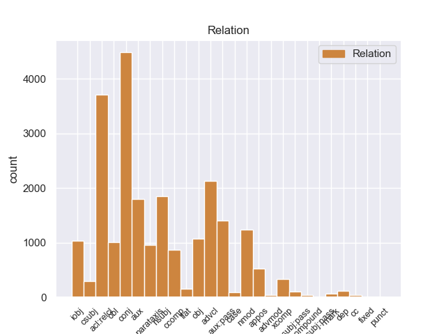
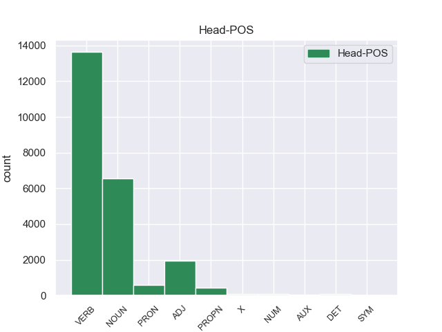
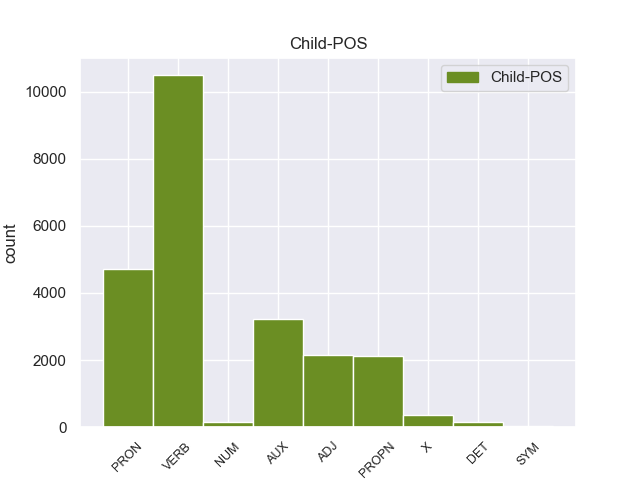

Distribution of features within this leaf



Agreement Rules sorted by frequency.
- When the dependent token is the relative clause modifier(acl:relcl) of the head token, and the dependent token is VERB.
1 Un _ _ _ _ 0 _ _ _
2 circuito _ _ _ _ 0 _ _ _
3 equivalente _ _ _ _ 0 _ _ _
4 es _ _ _ _ 0 _ _ _
5 un _ _ _ _ 0 _ _ _
6 circuito circuito NOUN _ Gender=Masc|Number=Sing 0 _ _ _
7 que _ _ _ _ 0 _ _ _
8 conserva conservar VERB _ Mood=Ind|Number=Sing|Person=3|Tense=Pres|VerbForm=Fin 6 acl:relcl _ _
9 todas _ _ _ _ 0 _ _ _
10 las _ _ _ _ 0 _ _ _
11 características _ _ _ _ 0 _ _ _
12 eléctricas _ _ _ _ 0 _ _ _
13 de _ _ _ _ 0 _ _ _
14 un _ _ _ _ 0 _ _ _
15 circuito _ _ _ _ 0 _ _ _
16 dado _ _ _ _ 0 _ _ _
17 . _ _ _ _ 0 _ _ _
1 Jazmin _ _ _ _ 0 _ _ _
2 es _ _ _ _ 0 _ _ _
3 todo _ _ _ _ 0 _ _ _
4 lo _ _ _ _ 0 _ _ _
5 contrario contrario NOUN _ Gender=Masc|Number=Sing 0 _ _ _
6 , _ _ _ _ 0 _ _ _
7 es _ _ _ _ 0 _ _ _
8 tímida _ _ _ _ 0 _ _ _
9 y _ _ _ _ 0 _ _ _
10 callada _ _ _ _ 0 _ _ _
11 , _ _ _ _ 0 _ _ _
12 pero _ _ _ _ 0 _ _ _
13 siempre _ _ _ _ 0 _ _ _
14 es _ _ _ _ 0 _ _ _
15 arrastrada arrastrar VERB _ Gender=Fem|Number=Sing|Tense=Past|VerbForm=Part 5 conj _ _
16 por _ _ _ _ 0 _ _ _
17 las _ _ _ _ 0 _ _ _
18 locuras _ _ _ _ 0 _ _ _
19 y _ _ _ _ 0 _ _ _
20 travesuras _ _ _ _ 0 _ _ _
21 que _ _ _ _ 0 _ _ _
22 inventa _ _ _ _ 0 _ _ _
23 Alma _ _ _ _ 0 _ _ _
24 . _ _ _ _ 0 _ _ _
1 De _ _ _ _ 0 _ _ _
2 los _ _ _ _ 0 _ _ _
3 714 _ _ _ _ 0 _ _ _
4 habitantes _ _ _ _ 0 _ _ _
5 , _ _ _ _ 0 _ _ _
6 el _ _ _ _ 0 _ _ _
7 municipio _ _ _ _ 0 _ _ _
8 de _ _ _ _ 0 _ _ _
9 Daggett _ _ _ _ 0 _ _ _
10 estaba estar VERB _ Mood=Ind|Number=Sing|Person=3|Tense=Imp|VerbForm=Fin 0 _ _ _
11 compuesto compuesto VERB _ Gender=Masc|Number=Sing|VerbForm=Part 10 advcl _ _
12 por _ _ _ _ 0 _ _ _
13 el _ _ _ _ 0 _ _ _
14 93.28 _ _ _ _ 0 _ _ _
15 % _ _ _ _ 0 _ _ _
16 blancos _ _ _ _ 0 _ _ _
17 , _ _ _ _ 0 _ _ _
18 el _ _ _ _ 0 _ _ _
19 2.38 _ _ _ _ 0 _ _ _
20 % _ _ _ _ 0 _ _ _
21 eran _ _ _ _ 0 _ _ _
22 afroamericanos _ _ _ _ 0 _ _ _
23 , _ _ _ _ 0 _ _ _
24 el _ _ _ _ 0 _ _ _
25 0.84 _ _ _ _ 0 _ _ _
26 % _ _ _ _ 0 _ _ _
27 eran _ _ _ _ 0 _ _ _
28 amerindios _ _ _ _ 0 _ _ _
29 , _ _ _ _ 0 _ _ _
30 el _ _ _ _ 0 _ _ _
31 0.56 _ _ _ _ 0 _ _ _
32 % _ _ _ _ 0 _ _ _
33 eran _ _ _ _ 0 _ _ _
34 asiáticos _ _ _ _ 0 _ _ _
35 , _ _ _ _ 0 _ _ _
36 el _ _ _ _ 0 _ _ _
37 0 _ _ _ _ 0 _ _ _
38 % _ _ _ _ 0 _ _ _
39 eran _ _ _ _ 0 _ _ _
40 isleños _ _ _ _ 0 _ _ _
41 de _ _ _ _ 0 _ _ _
42 el _ _ _ _ 0 _ _ _
43 Pacífico _ _ _ _ 0 _ _ _
44 , _ _ _ _ 0 _ _ _
45 el _ _ _ _ 0 _ _ _
46 0.84 _ _ _ _ 0 _ _ _
47 % _ _ _ _ 0 _ _ _
48 eran _ _ _ _ 0 _ _ _
49 de _ _ _ _ 0 _ _ _
50 otras _ _ _ _ 0 _ _ _
51 razas _ _ _ _ 0 _ _ _
52 y _ _ _ _ 0 _ _ _
53 el _ _ _ _ 0 _ _ _
54 2.1 _ _ _ _ 0 _ _ _
55 % _ _ _ _ 0 _ _ _
56 pertenecían _ _ _ _ 0 _ _ _
57 a _ _ _ _ 0 _ _ _
58 dos _ _ _ _ 0 _ _ _
59 o _ _ _ _ 0 _ _ _
60 más _ _ _ _ 0 _ _ _
61 razas _ _ _ _ 0 _ _ _
62 . _ _ _ _ 0 _ _ _
1 De _ _ _ _ 0 _ _ _
2 la _ _ _ _ 0 _ _ _
3 Vega _ _ _ _ 0 _ _ _
4 ha _ _ _ _ 0 _ _ _
5 pedido _ _ _ _ 0 _ _ _
6 respetar _ _ _ _ 0 _ _ _
7 los _ _ _ _ 0 _ _ _
8 tiempos _ _ _ _ 0 _ _ _
9 de _ _ _ _ 0 _ _ _
10 los _ _ _ _ 0 _ _ _
11 procesos _ _ _ _ 0 _ _ _
12 y _ _ _ _ 0 _ _ _
13 de _ _ _ _ 0 _ _ _
14 la _ _ _ _ 0 _ _ _
15 misma _ _ _ _ 0 _ _ _
16 manera _ _ _ _ 0 _ _ _
17 que _ _ _ _ 0 _ _ _
18 no _ _ _ _ 0 _ _ _
19 ha _ _ _ _ 0 _ _ _
20 querido _ _ _ _ 0 _ _ _
21 entrar _ _ _ _ 0 _ _ _
22 en _ _ _ _ 0 _ _ _
23 la _ _ _ _ 0 _ _ _
24 salida _ _ _ _ 0 _ _ _
25 de _ _ _ _ 0 _ _ _
26 Corbacho _ _ _ _ 0 _ _ _
27 , _ _ _ _ 0 _ _ _
28 tampoco _ _ _ _ 0 _ _ _
29 lo _ _ _ _ 0 _ _ _
30 ha haber AUX _ Mood=Ind|Number=Sing|Person=3|Tense=Pres|VerbForm=Fin 31 aux _ _
31 hecho hacer VERB _ Gender=Masc|Number=Sing|Tense=Past|VerbForm=Part 0 _ _ _
32 la _ _ _ _ 0 _ _ _
33 posible _ _ _ _ 0 _ _ _
34 salida _ _ _ _ 0 _ _ _
35 de _ _ _ _ 0 _ _ _
36 Trinidad _ _ _ _ 0 _ _ _
37 Jiménez _ _ _ _ 0 _ _ _
38 , _ _ _ _ 0 _ _ _
39 que _ _ _ _ 0 _ _ _
40 le _ _ _ _ 0 _ _ _
41 acompañaba _ _ _ _ 0 _ _ _
42 en _ _ _ _ 0 _ _ _
43 la _ _ _ _ 0 _ _ _
44 sala _ _ _ _ 0 _ _ _
45 de _ _ _ _ 0 _ _ _
46 prensa _ _ _ _ 0 _ _ _
47 . _ _ _ _ 0 _ _ _
1 En _ _ _ _ 0 _ _ _
2 1991 _ _ _ _ 0 _ _ _
3 , _ _ _ _ 0 _ _ _
4 como _ _ _ _ 0 _ _ _
5 ya _ _ _ _ 0 _ _ _
6 está _ _ _ _ 0 _ _ _
7 indicado _ _ _ _ 0 _ _ _
8 en _ _ _ _ 0 _ _ _
9 el _ _ _ _ 0 _ _ _
10 párrafo _ _ _ _ 0 _ _ _
11 anterior _ _ _ _ 0 _ _ _
12 , _ _ _ _ 0 _ _ _
13 se _ _ _ _ 0 _ _ _
14 creó _ _ _ _ 0 _ _ _
15 un _ _ _ _ 0 _ _ _
16 equipo _ _ _ _ 0 _ _ _
17 ad _ _ _ _ 0 _ _ _
18 hoc _ _ _ _ 0 _ _ _
19 para _ _ _ _ 0 _ _ _
20 averiguar _ _ _ _ 0 _ _ _
21 como _ _ _ _ 0 _ _ _
22 se _ _ _ _ 0 _ _ _
23 podía _ _ _ _ 0 _ _ _
24 desarrollar _ _ _ _ 0 _ _ _
25 el _ _ _ _ 0 _ _ _
26 Dialogo _ _ _ _ 0 _ _ _
27 Social _ _ _ _ 0 _ _ _
28 , _ _ _ _ 0 _ _ _
29 este _ _ _ _ 0 _ _ _
30 equipo _ _ _ _ 0 _ _ _
31 estaba estar AUX _ Mood=Ind|Number=Sing|Person=3|Tense=Imp|VerbForm=Fin 32 aux:pass _ _
32 formado formado VERB _ Gender=Masc|Number=Sing|VerbForm=Part 0 _ _ _
33 por _ _ _ _ 0 _ _ _
34 representantes _ _ _ _ 0 _ _ _
35 de _ _ _ _ 0 _ _ _
36 todas _ _ _ _ 0 _ _ _
37 las _ _ _ _ 0 _ _ _
38 organizaciones _ _ _ _ 0 _ _ _
39 relacionadas _ _ _ _ 0 _ _ _
40 con _ _ _ _ 0 _ _ _
41 CES _ _ _ _ 0 _ _ _
42 , _ _ _ _ 0 _ _ _
43 UNICE _ _ _ _ 0 _ _ _
44 y _ _ _ _ 0 _ _ _
45 CEEP _ _ _ _ 0 _ _ _
46 ; _ _ _ _ 0 _ _ _
1 Una _ _ _ _ 0 _ _ _
2 vez _ _ _ _ 0 _ _ _
3 que _ _ _ _ 0 _ _ _
4 el _ _ _ _ 0 _ _ _
5 Hijo _ _ _ _ 0 _ _ _
6 de _ _ _ _ 0 _ _ _
7 Krypton _ _ _ _ 0 _ _ _
8 suelta _ _ _ _ 0 _ _ _
9 el _ _ _ _ 0 _ _ _
10 misil _ _ _ _ 0 _ _ _
11 , _ _ _ _ 0 _ _ _
12 este este PRON _ Gender=Masc|Number=Sing|PronType=Dem 13 nsubj _ _
13 intenta intentar VERB _ Mood=Ind|Number=Sing|Person=3|Tense=Pres|VerbForm=Fin 0 _ _ _
14 huir _ _ _ _ 0 _ _ _
15 de _ _ _ _ 0 _ _ _
16 el _ _ _ _ 0 _ _ _
17 lugar _ _ _ _ 0 _ _ _
18 pero _ _ _ _ 0 _ _ _
19 es _ _ _ _ 0 _ _ _
20 atrapado _ _ _ _ 0 _ _ _
21 en _ _ _ _ 0 _ _ _
22 la _ _ _ _ 0 _ _ _
23 explosión _ _ _ _ 0 _ _ _
24 . _ _ _ _ 0 _ _ _
1 Esta _ _ _ _ 0 _ _ _
2 teoría _ _ _ _ 0 _ _ _
3 se _ _ _ _ 0 _ _ _
4 avenía _ _ _ _ 0 _ _ _
5 bien _ _ _ _ 0 _ _ _
6 con _ _ _ _ 0 _ _ _
7 la _ _ _ _ 0 _ _ _
8 creencia _ _ _ _ 0 _ _ _
9 de _ _ _ _ 0 _ _ _
10 el _ _ _ _ 0 _ _ _
11 Romanticismo _ _ _ _ 0 _ _ _
12 en _ _ _ _ 0 _ _ _
13 un _ _ _ _ 0 _ _ _
14 volkgeist _ _ _ _ 0 _ _ _
15 , _ _ _ _ 0 _ _ _
16 " _ _ _ _ 0 _ _ _
17 genio _ _ _ _ 0 _ _ _
18 o _ _ _ _ 0 _ _ _
19 espíritu _ _ _ _ 0 _ _ _
20 de _ _ _ _ 0 _ _ _
21 el _ _ _ _ 0 _ _ _
22 pueblo _ _ _ _ 0 _ _ _
23 " _ _ _ _ 0 _ _ _
24 , _ _ _ _ 0 _ _ _
25 autor _ _ _ _ 0 _ _ _
26 colectivo colectivo ADJ _ Gender=Masc|Number=Sing 0 _ _ _
27 y _ _ _ _ 0 _ _ _
28 anónimo anónimo ADJ _ Gender=Masc|Number=Sing 26 conj _ _
29 de _ _ _ _ 0 _ _ _
30 una _ _ _ _ 0 _ _ _
31 poesía _ _ _ _ 0 _ _ _
32 nacional _ _ _ _ 0 _ _ _
33 . _ _ _ _ 0 _ _ _
1 Ahora _ _ _ _ 0 _ _ _
2 se _ _ _ _ 0 _ _ _
3 aunan _ _ _ _ 0 _ _ _
4 cocina _ _ _ _ 0 _ _ _
5 y _ _ _ _ 0 _ _ _
6 entorno _ _ _ _ 0 _ _ _
7 , _ _ _ _ 0 _ _ _
8 me yo PRON _ Case=Acc,Dat|Number=Sing|Person=1|PrepCase=Npr|PronType=Prs|Reflex=Yes 9 iobj _ _
9 encanto encanto VERB _ Mood=Ind|Number=Sing|Person=1|Tense=Pres|VerbForm=Fin 0 _ _ _
10 la _ _ _ _ 0 _ _ _
11 bodega _ _ _ _ 0 _ _ _
12 , _ _ _ _ 0 _ _ _
13 las _ _ _ _ 0 _ _ _
14 sillas _ _ _ _ 0 _ _ _
15 son _ _ _ _ 0 _ _ _
16 comodisimas _ _ _ _ 0 _ _ _
17 , _ _ _ _ 0 _ _ _
18 la _ _ _ _ 0 _ _ _
19 iluminacion _ _ _ _ 0 _ _ _
20 es _ _ _ _ 0 _ _ _
21 excepcional _ _ _ _ 0 _ _ _
22 , _ _ _ _ 0 _ _ _
23 alcanzas _ _ _ _ 0 _ _ _
24 un _ _ _ _ 0 _ _ _
25 grado _ _ _ _ 0 _ _ _
26 de _ _ _ _ 0 _ _ _
27 satisfaccion _ _ _ _ 0 _ _ _
28 que _ _ _ _ 0 _ _ _
29 no _ _ _ _ 0 _ _ _
30 se _ _ _ _ 0 _ _ _
31 puede _ _ _ _ 0 _ _ _
32 describir _ _ _ _ 0 _ _ _
33 , _ _ _ _ 0 _ _ _
34 hay _ _ _ _ 0 _ _ _
35 que _ _ _ _ 0 _ _ _
36 probar _ _ _ _ 0 _ _ _
37 lo _ _ _ _ 0 _ _ _
38 , _ _ _ _ 0 _ _ _
39 es _ _ _ _ 0 _ _ _
40 la _ _ _ _ 0 _ _ _
41 primera _ _ _ _ 0 _ _ _
42 vez _ _ _ _ 0 _ _ _
43 en _ _ _ _ 0 _ _ _
44 mi _ _ _ _ 0 _ _ _
45 vda _ _ _ _ 0 _ _ _
46 que _ _ _ _ 0 _ _ _
47 una _ _ _ _ 0 _ _ _
48 cocina _ _ _ _ 0 _ _ _
49 me _ _ _ _ 0 _ _ _
50 emociona _ _ _ _ 0 _ _ _
51 hasta _ _ _ _ 0 _ _ _
52 ese _ _ _ _ 0 _ _ _
53 punto _ _ _ _ 0 _ _ _
54 . _ _ _ _ 0 _ _ _
1 De _ _ _ _ 0 _ _ _
2 la _ _ _ _ 0 _ _ _
3 Vega _ _ _ _ 0 _ _ _
4 ha _ _ _ _ 0 _ _ _
5 pedido _ _ _ _ 0 _ _ _
6 respetar _ _ _ _ 0 _ _ _
7 los _ _ _ _ 0 _ _ _
8 tiempos _ _ _ _ 0 _ _ _
9 de _ _ _ _ 0 _ _ _
10 los _ _ _ _ 0 _ _ _
11 procesos _ _ _ _ 0 _ _ _
12 y _ _ _ _ 0 _ _ _
13 de _ _ _ _ 0 _ _ _
14 la _ _ _ _ 0 _ _ _
15 misma _ _ _ _ 0 _ _ _
16 manera _ _ _ _ 0 _ _ _
17 que _ _ _ _ 0 _ _ _
18 no _ _ _ _ 0 _ _ _
19 ha _ _ _ _ 0 _ _ _
20 querido _ _ _ _ 0 _ _ _
21 entrar _ _ _ _ 0 _ _ _
22 en _ _ _ _ 0 _ _ _
23 la _ _ _ _ 0 _ _ _
24 salida _ _ _ _ 0 _ _ _
25 de _ _ _ _ 0 _ _ _
26 Corbacho _ _ _ _ 0 _ _ _
27 , _ _ _ _ 0 _ _ _
28 tampoco _ _ _ _ 0 _ _ _
29 lo _ _ _ _ 0 _ _ _
30 ha _ _ _ _ 0 _ _ _
31 hecho _ _ _ _ 0 _ _ _
32 la _ _ _ _ 0 _ _ _
33 posible _ _ _ _ 0 _ _ _
34 salida _ _ _ _ 0 _ _ _
35 de _ _ _ _ 0 _ _ _
36 Trinidad _ _ _ _ 0 _ _ _
37 Jiménez _ _ _ _ 0 _ _ _
38 , _ _ _ _ 0 _ _ _
39 que _ _ _ _ 0 _ _ _
40 le él PRON _ Case=Dat|Number=Sing|Person=3|PronType=Prs 41 obj _ _
41 acompañaba acompañar VERB _ Mood=Ind|Number=Sing|Person=3|Tense=Imp|VerbForm=Fin 0 _ _ _
42 en _ _ _ _ 0 _ _ _
43 la _ _ _ _ 0 _ _ _
44 sala _ _ _ _ 0 _ _ _
45 de _ _ _ _ 0 _ _ _
46 prensa _ _ _ _ 0 _ _ _
47 . _ _ _ _ 0 _ _ _
1 En _ _ _ _ 0 _ _ _
2 1991 _ _ _ _ 0 _ _ _
3 , _ _ _ _ 0 _ _ _
4 como _ _ _ _ 0 _ _ _
5 ya _ _ _ _ 0 _ _ _
6 está _ _ _ _ 0 _ _ _
7 indicado _ _ _ _ 0 _ _ _
8 en _ _ _ _ 0 _ _ _
9 el _ _ _ _ 0 _ _ _
10 párrafo _ _ _ _ 0 _ _ _
11 anterior _ _ _ _ 0 _ _ _
12 , _ _ _ _ 0 _ _ _
13 se _ _ _ _ 0 _ _ _
14 creó crear VERB _ Mood=Ind|Number=Sing|Person=3|Tense=Past|VerbForm=Fin 0 _ _ _
15 un _ _ _ _ 0 _ _ _
16 equipo _ _ _ _ 0 _ _ _
17 ad _ _ _ _ 0 _ _ _
18 hoc _ _ _ _ 0 _ _ _
19 para _ _ _ _ 0 _ _ _
20 averiguar _ _ _ _ 0 _ _ _
21 como _ _ _ _ 0 _ _ _
22 se _ _ _ _ 0 _ _ _
23 podía _ _ _ _ 0 _ _ _
24 desarrollar _ _ _ _ 0 _ _ _
25 el _ _ _ _ 0 _ _ _
26 Dialogo _ _ _ _ 0 _ _ _
27 Social _ _ _ _ 0 _ _ _
28 , _ _ _ _ 0 _ _ _
29 este _ _ _ _ 0 _ _ _
30 equipo _ _ _ _ 0 _ _ _
31 estaba _ _ _ _ 0 _ _ _
32 formado formado VERB _ Gender=Masc|Number=Sing|VerbForm=Part 14 parataxis _ _
33 por _ _ _ _ 0 _ _ _
34 representantes _ _ _ _ 0 _ _ _
35 de _ _ _ _ 0 _ _ _
36 todas _ _ _ _ 0 _ _ _
37 las _ _ _ _ 0 _ _ _
38 organizaciones _ _ _ _ 0 _ _ _
39 relacionadas _ _ _ _ 0 _ _ _
40 con _ _ _ _ 0 _ _ _
41 CES _ _ _ _ 0 _ _ _
42 , _ _ _ _ 0 _ _ _
43 UNICE _ _ _ _ 0 _ _ _
44 y _ _ _ _ 0 _ _ _
45 CEEP _ _ _ _ 0 _ _ _
46 ; _ _ _ _ 0 _ _ _
1 El _ _ _ _ 0 _ _ _
2 representante _ _ _ _ 0 _ _ _
3 de _ _ _ _ 0 _ _ _
4 el _ _ _ _ 0 _ _ _
5 Frente _ _ _ _ 0 _ _ _
6 Cívico _ _ _ _ 0 _ _ _
7 en _ _ _ _ 0 _ _ _
8 Tribunal _ _ _ _ 0 _ _ _
9 de _ _ _ _ 0 _ _ _
10 Cuentas _ _ _ _ 0 _ _ _
11 de _ _ _ _ 0 _ _ _
12 la _ _ _ _ 0 _ _ _
13 provincia _ _ _ _ 0 _ _ _
14 de _ _ _ _ 0 _ _ _
15 Córdoba _ _ _ _ 0 _ _ _
16 , _ _ _ _ 0 _ _ _
17 José _ _ _ _ 0 _ _ _
18 Medina _ _ _ _ 0 _ _ _
19 , _ _ _ _ 0 _ _ _
20 denunció denunciar VERB _ Mood=Ind|Number=Sing|Person=3|Tense=Past|VerbForm=Fin 0 _ _ _
21 que _ _ _ _ 0 _ _ _
22 el _ _ _ _ 0 _ _ _
23 gobierno _ _ _ _ 0 _ _ _
24 de _ _ _ _ 0 _ _ _
25 Schiaretti _ _ _ _ 0 _ _ _
26 pidió pedir VERB _ Mood=Ind|Number=Sing|Person=3|Tense=Past|VerbForm=Fin 20 ccomp _ _
27 autorización _ _ _ _ 0 _ _ _
28 para _ _ _ _ 0 _ _ _
29 realizar _ _ _ _ 0 _ _ _
30 reparaciones _ _ _ _ 0 _ _ _
31 en _ _ _ _ 0 _ _ _
32 la _ _ _ _ 0 _ _ _
33 Casa _ _ _ _ 0 _ _ _
34 de _ _ _ _ 0 _ _ _
35 las _ _ _ _ 0 _ _ _
36 Tejas _ _ _ _ 0 _ _ _
37 por _ _ _ _ 0 _ _ _
38 más _ _ _ _ 0 _ _ _
39 de _ _ _ _ 0 _ _ _
40 un _ _ _ _ 0 _ _ _
41 millón _ _ _ _ 0 _ _ _
42 de _ _ _ _ 0 _ _ _
43 pesos _ _ _ _ 0 _ _ _
44 el _ _ _ _ 0 _ _ _
45 pasado _ _ _ _ 0 _ _ _
46 19 _ _ _ _ 0 _ _ _
47 de _ _ _ _ 0 _ _ _
48 octubre _ _ _ _ 0 _ _ _
49 , _ _ _ _ 0 _ _ _
50 cuando _ _ _ _ 0 _ _ _
51 ya _ _ _ _ 0 _ _ _
52 estaba _ _ _ _ 0 _ _ _
53 la _ _ _ _ 0 _ _ _
54 decisión _ _ _ _ 0 _ _ _
55 de _ _ _ _ 0 _ _ _
56 demoler _ _ _ _ 0 _ _ _
57 el _ _ _ _ 0 _ _ _
58 edificio _ _ _ _ 0 _ _ _
59 . _ _ _ _ 0 _ _ _
1 Jazmin _ _ _ _ 0 _ _ _
2 es _ _ _ _ 0 _ _ _
3 todo _ _ _ _ 0 _ _ _
4 lo _ _ _ _ 0 _ _ _
5 contrario _ _ _ _ 0 _ _ _
6 , _ _ _ _ 0 _ _ _
7 es _ _ _ _ 0 _ _ _
8 tímida _ _ _ _ 0 _ _ _
9 y _ _ _ _ 0 _ _ _
10 callada _ _ _ _ 0 _ _ _
11 , _ _ _ _ 0 _ _ _
12 pero _ _ _ _ 0 _ _ _
13 siempre _ _ _ _ 0 _ _ _
14 es _ _ _ _ 0 _ _ _
15 arrastrada _ _ _ _ 0 _ _ _
16 por _ _ _ _ 0 _ _ _
17 las _ _ _ _ 0 _ _ _
18 locuras _ _ _ _ 0 _ _ _
19 y _ _ _ _ 0 _ _ _
20 travesuras _ _ _ _ 0 _ _ _
21 que _ _ _ _ 0 _ _ _
22 inventa inventar VERB _ Mood=Ind|Number=Sing|Person=3|Tense=Pres|VerbForm=Fin 0 _ _ _
23 Alma alma PROPN _ Gender=Fem|Number=Sing 22 nsubj _ SpaceAfter=No
24 . _ _ _ _ 0 _ _ _
1 De _ _ _ _ 0 _ _ _
2 las _ _ _ _ 0 _ _ _
3 8 _ _ _ _ 0 _ _ _
4 porciones _ _ _ _ 0 _ _ _
5 , _ _ _ _ 0 _ _ _
6 cuatro _ _ _ _ 0 _ _ _
7 correspondieron _ _ _ _ 0 _ _ _
8 a _ _ _ _ 0 _ _ _
9 el _ _ _ _ 0 _ _ _
10 rey _ _ _ _ 0 _ _ _
11 , _ _ _ _ 0 _ _ _
12 una _ _ _ _ 0 _ _ _
13 a _ _ _ _ 0 _ _ _
14 el _ _ _ _ 0 _ _ _
15 conde conde NOUN _ Gender=Masc|Number=Sing 0 _ _ _
16 de _ _ _ _ 0 _ _ _
17 el _ _ _ _ 0 _ _ _
18 Rosellón rosellón PROPN _ Gender=Masc|Number=Sing 15 nmod _ _
19 Nuño _ _ _ _ 0 _ _ _
20 Sánchez _ _ _ _ 0 _ _ _
21 , _ _ _ _ 0 _ _ _
22 una _ _ _ _ 0 _ _ _
23 a _ _ _ _ 0 _ _ _
24 el _ _ _ _ 0 _ _ _
25 obispo _ _ _ _ 0 _ _ _
26 de _ _ _ _ 0 _ _ _
27 Barcelona _ _ _ _ 0 _ _ _
28 Berenguer _ _ _ _ 0 _ _ _
29 de _ _ _ _ 0 _ _ _
30 Palou _ _ _ _ 0 _ _ _
31 , _ _ _ _ 0 _ _ _
32 una _ _ _ _ 0 _ _ _
33 a _ _ _ _ 0 _ _ _
34 el _ _ _ _ 0 _ _ _
35 Conde _ _ _ _ 0 _ _ _
36 de _ _ _ _ 0 _ _ _
37 Ampurias _ _ _ _ 0 _ _ _
38 y _ _ _ _ 0 _ _ _
39 finalmente _ _ _ _ 0 _ _ _
40 otra _ _ _ _ 0 _ _ _
41 a _ _ _ _ 0 _ _ _
42 el _ _ _ _ 0 _ _ _
43 vizconde _ _ _ _ 0 _ _ _
44 de _ _ _ _ 0 _ _ _
45 Bearn _ _ _ _ 0 _ _ _
46 . _ _ _ _ 0 _ _ _
1 El _ _ _ _ 0 _ _ _
2 mandatario _ _ _ _ 0 _ _ _
3 uruguayo _ _ _ _ 0 _ _ _
4 , _ _ _ _ 0 _ _ _
5 quien _ _ _ _ 0 _ _ _
6 llegó _ _ _ _ 0 _ _ _
7 el _ _ _ _ 0 _ _ _
8 domingo _ _ _ _ 0 _ _ _
9 a _ _ _ _ 0 _ _ _
10 Paraguay _ _ _ _ 0 _ _ _
11 , _ _ _ _ 0 _ _ _
12 inició _ _ _ _ 0 _ _ _
13 este _ _ _ _ 0 _ _ _
14 lunes _ _ _ _ 0 _ _ _
15 sus _ _ _ _ 0 _ _ _
16 actividades _ _ _ _ 0 _ _ _
17 a _ _ _ _ 0 _ _ _
18 el _ _ _ _ 0 _ _ _
19 colocar _ _ _ _ 0 _ _ _
20 una _ _ _ _ 0 _ _ _
21 ofrenda _ _ _ _ 0 _ _ _
22 floral _ _ _ _ 0 _ _ _
23 en _ _ _ _ 0 _ _ _
24 el _ _ _ _ 0 _ _ _
25 Panteón _ _ _ _ 0 _ _ _
26 de _ _ _ _ 0 _ _ _
27 los _ _ _ _ 0 _ _ _
28 Héroes _ _ _ _ 0 _ _ _
29 , _ _ _ _ 0 _ _ _
30 tras _ _ _ _ 0 _ _ _
31 lo _ _ _ _ 0 _ _ _
32 cual cual PRON _ Number=Sing|PronType=Int,Rel 34 obl _ _
33 se _ _ _ _ 0 _ _ _
34 trasladó trasladar VERB _ Mood=Ind|Number=Sing|Person=3|Tense=Past|VerbForm=Fin 0 _ _ _
35 a _ _ _ _ 0 _ _ _
36 el _ _ _ _ 0 _ _ _
37 Palacio _ _ _ _ 0 _ _ _
38 de _ _ _ _ 0 _ _ _
39 Gobierno _ _ _ _ 0 _ _ _
40 donde _ _ _ _ 0 _ _ _
41 fue _ _ _ _ 0 _ _ _
42 condecorado _ _ _ _ 0 _ _ _
43 por _ _ _ _ 0 _ _ _
44 Lugo _ _ _ _ 0 _ _ _
45 . _ _ _ _ 0 _ _ _
1 A _ _ _ _ 0 _ _ _
2 continuación _ _ _ _ 0 _ _ _
3 , _ _ _ _ 0 _ _ _
4 sonarán _ _ _ _ 0 _ _ _
5 los _ _ _ _ 0 _ _ _
6 ritmos _ _ _ _ 0 _ _ _
7 más _ _ _ _ 0 _ _ _
8 intensos _ _ _ _ 0 _ _ _
9 de _ _ _ _ 0 _ _ _
10 los _ _ _ _ 0 _ _ _
11 llanos _ _ _ _ 0 _ _ _
12 interpretados _ _ _ _ 0 _ _ _
13 por _ _ _ _ 0 _ _ _
14 una _ _ _ _ 0 _ _ _
15 agrupación _ _ _ _ 0 _ _ _
16 que _ _ _ _ 0 _ _ _
17 romperá _ _ _ _ 0 _ _ _
18 esquemas _ _ _ _ 0 _ _ _
19 : _ _ _ _ 0 _ _ _
20 el _ _ _ _ 0 _ _ _
21 Ensamble _ _ _ _ 0 _ _ _
22 de _ _ _ _ 0 _ _ _
23 Arpas _ _ _ _ 0 _ _ _
24 de _ _ _ _ 0 _ _ _
25 la _ _ _ _ 0 _ _ _
26 Orquesta _ _ _ _ 0 _ _ _
27 de _ _ _ _ 0 _ _ _
28 Música _ _ _ _ 0 _ _ _
29 Popular _ _ _ _ 0 _ _ _
30 de _ _ _ _ 0 _ _ _
31 el _ _ _ _ 0 _ _ _
32 Estado _ _ _ _ 0 _ _ _
33 Guárico _ _ _ _ 0 _ _ _
34 , _ _ _ _ 0 _ _ _
35 integrado _ _ _ _ 0 _ _ _
36 por _ _ _ _ 0 _ _ _
37 14 _ _ _ _ 0 _ _ _
38 ejecutantes _ _ _ _ 0 _ _ _
39 , _ _ _ _ 0 _ _ _
40 todos _ _ _ _ 0 _ _ _
41 formados _ _ _ _ 0 _ _ _
42 por _ _ _ _ 0 _ _ _
43 El _ _ _ _ 0 _ _ _
44 Sistema _ _ _ _ 0 _ _ _
45 , _ _ _ _ 0 _ _ _
46 siendo _ _ _ _ 0 _ _ _
47 algunos alguno PRON _ Gender=Masc|Number=Plur|PronType=Ind 0 _ _ _
48 de _ _ _ _ 0 _ _ _
49 ellos él PRON _ Case=Acc,Nom|Gender=Masc|Number=Plur|Person=3|PronType=Prs 47 nmod _ _
50 ganadores _ _ _ _ 0 _ _ _
51 de _ _ _ _ 0 _ _ _
52 el _ _ _ _ 0 _ _ _
53 reconocido _ _ _ _ 0 _ _ _
54 Festival _ _ _ _ 0 _ _ _
55 Internacional _ _ _ _ 0 _ _ _
56 de _ _ _ _ 0 _ _ _
57 Arpas _ _ _ _ 0 _ _ _
58 Infantil _ _ _ _ 0 _ _ _
59 y _ _ _ _ 0 _ _ _
60 Adultos _ _ _ _ 0 _ _ _
61 de _ _ _ _ 0 _ _ _
62 Villavicencio _ _ _ _ 0 _ _ _
63 , _ _ _ _ 0 _ _ _
64 Colombia _ _ _ _ 0 _ _ _
65 . _ _ _ _ 0 _ _ _
1 A _ _ _ _ 0 _ _ _
2 continuación _ _ _ _ 0 _ _ _
3 , _ _ _ _ 0 _ _ _
4 sonarán _ _ _ _ 0 _ _ _
5 los _ _ _ _ 0 _ _ _
6 ritmos _ _ _ _ 0 _ _ _
7 más _ _ _ _ 0 _ _ _
8 intensos _ _ _ _ 0 _ _ _
9 de _ _ _ _ 0 _ _ _
10 los _ _ _ _ 0 _ _ _
11 llanos _ _ _ _ 0 _ _ _
12 interpretados _ _ _ _ 0 _ _ _
13 por _ _ _ _ 0 _ _ _
14 una _ _ _ _ 0 _ _ _
15 agrupación agrupación NOUN _ Gender=Fem|Number=Sing 0 _ _ _
16 que _ _ _ _ 0 _ _ _
17 romperá _ _ _ _ 0 _ _ _
18 esquemas _ _ _ _ 0 _ _ _
19 : _ _ _ _ 0 _ _ _
20 el _ _ _ _ 0 _ _ _
21 Ensamble ensamble PROPN _ Gender=Masc|Number=Sing 15 appos _ _
22 de _ _ _ _ 0 _ _ _
23 Arpas _ _ _ _ 0 _ _ _
24 de _ _ _ _ 0 _ _ _
25 la _ _ _ _ 0 _ _ _
26 Orquesta _ _ _ _ 0 _ _ _
27 de _ _ _ _ 0 _ _ _
28 Música _ _ _ _ 0 _ _ _
29 Popular _ _ _ _ 0 _ _ _
30 de _ _ _ _ 0 _ _ _
31 el _ _ _ _ 0 _ _ _
32 Estado _ _ _ _ 0 _ _ _
33 Guárico _ _ _ _ 0 _ _ _
34 , _ _ _ _ 0 _ _ _
35 integrado _ _ _ _ 0 _ _ _
36 por _ _ _ _ 0 _ _ _
37 14 _ _ _ _ 0 _ _ _
38 ejecutantes _ _ _ _ 0 _ _ _
39 , _ _ _ _ 0 _ _ _
40 todos _ _ _ _ 0 _ _ _
41 formados _ _ _ _ 0 _ _ _
42 por _ _ _ _ 0 _ _ _
43 El _ _ _ _ 0 _ _ _
44 Sistema _ _ _ _ 0 _ _ _
45 , _ _ _ _ 0 _ _ _
46 siendo _ _ _ _ 0 _ _ _
47 algunos _ _ _ _ 0 _ _ _
48 de _ _ _ _ 0 _ _ _
49 ellos _ _ _ _ 0 _ _ _
50 ganadores _ _ _ _ 0 _ _ _
51 de _ _ _ _ 0 _ _ _
52 el _ _ _ _ 0 _ _ _
53 reconocido _ _ _ _ 0 _ _ _
54 Festival _ _ _ _ 0 _ _ _
55 Internacional _ _ _ _ 0 _ _ _
56 de _ _ _ _ 0 _ _ _
57 Arpas _ _ _ _ 0 _ _ _
58 Infantil _ _ _ _ 0 _ _ _
59 y _ _ _ _ 0 _ _ _
60 Adultos _ _ _ _ 0 _ _ _
61 de _ _ _ _ 0 _ _ _
62 Villavicencio _ _ _ _ 0 _ _ _
63 , _ _ _ _ 0 _ _ _
64 Colombia _ _ _ _ 0 _ _ _
65 . _ _ _ _ 0 _ _ _
1 En _ _ _ _ 0 _ _ _
2 la _ _ _ _ 0 _ _ _
3 Isla isla PROPN _ Gender=Fem|Number=Sing 6 obl _ _
4 de _ _ _ _ 0 _ _ _
5 Chiloé _ _ _ _ 0 _ _ _
6 participó participar VERB _ Mood=Ind|Number=Sing|Person=3|Tense=Past|VerbForm=Fin 0 _ _ _
7 en _ _ _ _ 0 _ _ _
8 el _ _ _ _ 0 _ _ _
9 ataque _ _ _ _ 0 _ _ _
10 a _ _ _ _ 0 _ _ _
11 las _ _ _ _ 0 _ _ _
12 Baterías _ _ _ _ 0 _ _ _
13 de _ _ _ _ 0 _ _ _
14 San _ _ _ _ 0 _ _ _
15 Carlos _ _ _ _ 0 _ _ _
16 de _ _ _ _ 0 _ _ _
17 Ancud _ _ _ _ 0 _ _ _
18 , _ _ _ _ 0 _ _ _
19 en _ _ _ _ 0 _ _ _
20 el _ _ _ _ 0 _ _ _
21 Combate _ _ _ _ 0 _ _ _
22 de _ _ _ _ 0 _ _ _
23 Pudeto _ _ _ _ 0 _ _ _
24 y _ _ _ _ 0 _ _ _
25 en _ _ _ _ 0 _ _ _
26 el _ _ _ _ 0 _ _ _
27 Combate _ _ _ _ 0 _ _ _
28 de _ _ _ _ 0 _ _ _
29 Bellavista _ _ _ _ 0 _ _ _
30 . _ _ _ _ 0 _ _ _
1 Me _ _ _ _ 0 _ _ _
2 hicieron _ _ _ _ 0 _ _ _
3 las _ _ _ _ 0 _ _ _
4 cortinas _ _ _ _ 0 _ _ _
5 de _ _ _ _ 0 _ _ _
6 casa _ _ _ _ 0 _ _ _
7 y _ _ _ _ 0 _ _ _
8 unos _ _ _ _ 0 _ _ _
9 estores _ _ _ _ 0 _ _ _
10 , _ _ _ _ 0 _ _ _
11 y _ _ _ _ 0 _ _ _
12 la _ _ _ _ 0 _ _ _
13 verdad _ _ _ _ 0 _ _ _
14 es _ _ _ _ 0 _ _ _
15 que _ _ _ _ 0 _ _ _
16 he _ _ _ _ 0 _ _ _
17 quedado quedar VERB _ Gender=Masc|Number=Sing|Tense=Past|VerbForm=Part 0 _ _ _
18 muy _ _ _ _ 0 _ _ _
19 contenta contenta ADJ _ Gender=Fem|Number=Sing 17 xcomp _ SpaceAfter=No
20 , _ _ _ _ 0 _ _ _
21 sobre _ _ _ _ 0 _ _ _
22 todo _ _ _ _ 0 _ _ _
23 comparando _ _ _ _ 0 _ _ _
24 con _ _ _ _ 0 _ _ _
25 los _ _ _ _ 0 _ _ _
26 presupuestos _ _ _ _ 0 _ _ _
27 que _ _ _ _ 0 _ _ _
28 me _ _ _ _ 0 _ _ _
29 habían _ _ _ _ 0 _ _ _
30 dado _ _ _ _ 0 _ _ _
31 antes _ _ _ _ 0 _ _ _
32 . _ _ _ _ 0 _ _ _
1 Me _ _ _ _ 0 _ _ _
2 hicieron _ _ _ _ 0 _ _ _
3 las _ _ _ _ 0 _ _ _
4 cortinas _ _ _ _ 0 _ _ _
5 de _ _ _ _ 0 _ _ _
6 casa _ _ _ _ 0 _ _ _
7 y _ _ _ _ 0 _ _ _
8 unos _ _ _ _ 0 _ _ _
9 estores _ _ _ _ 0 _ _ _
10 , _ _ _ _ 0 _ _ _
11 y _ _ _ _ 0 _ _ _
12 la _ _ _ _ 0 _ _ _
13 verdad verdad NOUN _ Gender=Fem|Number=Sing 0 _ _ _
14 es _ _ _ _ 0 _ _ _
15 que _ _ _ _ 0 _ _ _
16 he _ _ _ _ 0 _ _ _
17 quedado quedar VERB _ Gender=Masc|Number=Sing|Tense=Past|VerbForm=Part 13 csubj _ _
18 muy _ _ _ _ 0 _ _ _
19 contenta _ _ _ _ 0 _ _ _
20 , _ _ _ _ 0 _ _ _
21 sobre _ _ _ _ 0 _ _ _
22 todo _ _ _ _ 0 _ _ _
23 comparando _ _ _ _ 0 _ _ _
24 con _ _ _ _ 0 _ _ _
25 los _ _ _ _ 0 _ _ _
26 presupuestos _ _ _ _ 0 _ _ _
27 que _ _ _ _ 0 _ _ _
28 me _ _ _ _ 0 _ _ _
29 habían _ _ _ _ 0 _ _ _
30 dado _ _ _ _ 0 _ _ _
31 antes _ _ _ _ 0 _ _ _
32 . _ _ _ _ 0 _ _ _
1 Mauricio mauricio PROPN _ Gender=Masc|Number=Sing 0 _ _ _
2 Bernardo _ _ _ _ 0 _ _ _
3 Victorino victorino PROPN _ Gender=Masc|Number=Sing 1 flat _ _
4 Dansilio _ _ _ _ 0 _ _ _
5 ( _ _ _ _ 0 _ _ _
6 Montevideo _ _ _ _ 0 _ _ _
7 , _ _ _ _ 0 _ _ _
8 Uruguay _ _ _ _ 0 _ _ _
9 , _ _ _ _ 0 _ _ _
10 11 _ _ _ _ 0 _ _ _
11 de _ _ _ _ 0 _ _ _
12 octubre _ _ _ _ 0 _ _ _
13 de _ _ _ _ 0 _ _ _
14 1982 _ _ _ _ 0 _ _ _
15 ) _ _ _ _ 0 _ _ _
16 es _ _ _ _ 0 _ _ _
17 un _ _ _ _ 0 _ _ _
18 futbolista _ _ _ _ 0 _ _ _
19 uruguayo _ _ _ _ 0 _ _ _
20 . _ _ _ _ 0 _ _ _
1 Contrario _ _ _ _ 0 _ _ _
2 a _ _ _ _ 0 _ _ _
3 cualquiera _ _ _ _ 0 _ _ _
4 otra _ _ _ _ 0 _ _ _
5 apreciación apreciación NOUN _ Gender=Fem|Number=Sing 0 _ _ _
6 que _ _ _ _ 0 _ _ _
7 le _ _ _ _ 0 _ _ _
8 de _ _ _ _ 0 _ _ _
9 relevancia _ _ _ _ 0 _ _ _
10 o _ _ _ _ 0 _ _ _
11 sentido _ _ _ _ 0 _ _ _
12 ( _ _ _ _ 0 _ _ _
13 por _ _ _ _ 0 _ _ _
14 ejemplo _ _ _ _ 0 _ _ _
15 , _ _ _ _ 0 _ _ _
16 que _ _ _ _ 0 _ _ _
17 sea _ _ _ _ 0 _ _ _
18 " _ _ _ _ 0 _ _ _
19 hermoso hermoso ADJ _ Gender=Masc|Number=Sing 5 acl:relcl _ SpaceAfter=No
20 " _ _ _ _ 0 _ _ _
21 ) _ _ _ _ 0 _ _ _
22 posiblemente _ _ _ _ 0 _ _ _
23 genere _ _ _ _ 0 _ _ _
24 alguna _ _ _ _ 0 _ _ _
25 objeción _ _ _ _ 0 _ _ _
26 o _ _ _ _ 0 _ _ _
27 contradicción _ _ _ _ 0 _ _ _
28 . _ _ _ _ 0 _ _ _
1 Asimismo _ _ _ _ 0 _ _ _
2 , _ _ _ _ 0 _ _ _
3 Ryanair _ _ _ _ 0 _ _ _
4 ha _ _ _ _ 0 _ _ _
5 desviado _ _ _ _ 0 _ _ _
6 varios _ _ _ _ 0 _ _ _
7 de _ _ _ _ 0 _ _ _
8 sus _ _ _ _ 0 _ _ _
9 vuelos _ _ _ _ 0 _ _ _
10 con _ _ _ _ 0 _ _ _
11 destino _ _ _ _ 0 _ _ _
12 a _ _ _ _ 0 _ _ _
13 Dublín _ _ _ _ 0 _ _ _
14 , _ _ _ _ 0 _ _ _
15 entre _ _ _ _ 0 _ _ _
16 los _ _ _ _ 0 _ _ _
17 que _ _ _ _ 0 _ _ _
18 se _ _ _ _ 0 _ _ _
19 encuentran _ _ _ _ 0 _ _ _
20 un _ _ _ _ 0 _ _ _
21 vuelo vuelo NOUN _ Gender=Masc|Number=Sing 0 _ _ _
22 de _ _ _ _ 0 _ _ _
23 Madrid _ _ _ _ 0 _ _ _
24 y _ _ _ _ 0 _ _ _
25 otro otro PRON _ Gender=Masc|Number=Sing|PronType=Ind 21 conj _ _
26 de _ _ _ _ 0 _ _ _
27 Barcelona _ _ _ _ 0 _ _ _
28 , _ _ _ _ 0 _ _ _
29 hasta _ _ _ _ 0 _ _ _
30 los _ _ _ _ 0 _ _ _
31 aeropuertos _ _ _ _ 0 _ _ _
32 de _ _ _ _ 0 _ _ _
33 Shannon _ _ _ _ 0 _ _ _
34 y _ _ _ _ 0 _ _ _
35 Cork _ _ _ _ 0 _ _ _
36 . _ _ _ _ 0 _ _ _
1 En _ _ _ _ 0 _ _ _
2 1991 _ _ _ _ 0 _ _ _
3 , _ _ _ _ 0 _ _ _
4 como _ _ _ _ 0 _ _ _
5 ya _ _ _ _ 0 _ _ _
6 está _ _ _ _ 0 _ _ _
7 indicado indicado ADJ _ Gender=Masc|Number=Sing|VerbForm=Part 14 advcl _ _
8 en _ _ _ _ 0 _ _ _
9 el _ _ _ _ 0 _ _ _
10 párrafo _ _ _ _ 0 _ _ _
11 anterior _ _ _ _ 0 _ _ _
12 , _ _ _ _ 0 _ _ _
13 se _ _ _ _ 0 _ _ _
14 creó crear VERB _ Mood=Ind|Number=Sing|Person=3|Tense=Past|VerbForm=Fin 0 _ _ _
15 un _ _ _ _ 0 _ _ _
16 equipo _ _ _ _ 0 _ _ _
17 ad _ _ _ _ 0 _ _ _
18 hoc _ _ _ _ 0 _ _ _
19 para _ _ _ _ 0 _ _ _
20 averiguar _ _ _ _ 0 _ _ _
21 como _ _ _ _ 0 _ _ _
22 se _ _ _ _ 0 _ _ _
23 podía _ _ _ _ 0 _ _ _
24 desarrollar _ _ _ _ 0 _ _ _
25 el _ _ _ _ 0 _ _ _
26 Dialogo _ _ _ _ 0 _ _ _
27 Social _ _ _ _ 0 _ _ _
28 , _ _ _ _ 0 _ _ _
29 este _ _ _ _ 0 _ _ _
30 equipo _ _ _ _ 0 _ _ _
31 estaba _ _ _ _ 0 _ _ _
32 formado _ _ _ _ 0 _ _ _
33 por _ _ _ _ 0 _ _ _
34 representantes _ _ _ _ 0 _ _ _
35 de _ _ _ _ 0 _ _ _
36 todas _ _ _ _ 0 _ _ _
37 las _ _ _ _ 0 _ _ _
38 organizaciones _ _ _ _ 0 _ _ _
39 relacionadas _ _ _ _ 0 _ _ _
40 con _ _ _ _ 0 _ _ _
41 CES _ _ _ _ 0 _ _ _
42 , _ _ _ _ 0 _ _ _
43 UNICE _ _ _ _ 0 _ _ _
44 y _ _ _ _ 0 _ _ _
45 CEEP _ _ _ _ 0 _ _ _
46 ; _ _ _ _ 0 _ _ _
1 Sólo _ _ _ _ 0 _ _ _
2 CiU _ _ _ _ 0 _ _ _
3 ha _ _ _ _ 0 _ _ _
4 dicho decir VERB _ Gender=Masc|Number=Sing|Tense=Past|VerbForm=Part 0 _ _ _
5 que _ _ _ _ 0 _ _ _
6 la _ _ _ _ 0 _ _ _
7 moción _ _ _ _ 0 _ _ _
8 de _ _ _ _ 0 _ _ _
9 el _ _ _ _ 0 _ _ _
10 PP _ _ _ _ 0 _ _ _
11 era _ _ _ _ 0 _ _ _
12 " _ _ _ _ 0 _ _ _
13 oportuna oportuno ADJ _ Gender=Fem|Number=Sing 4 ccomp _ SpaceAfter=No
14 " _ _ _ _ 0 _ _ _
15 pero _ _ _ _ 0 _ _ _
16 se _ _ _ _ 0 _ _ _
17 ha _ _ _ _ 0 _ _ _
18 abstenido _ _ _ _ 0 _ _ _
19 " _ _ _ _ 0 _ _ _
20 en _ _ _ _ 0 _ _ _
21 coherencia _ _ _ _ 0 _ _ _
22 " _ _ _ _ 0 _ _ _
23 con _ _ _ _ 0 _ _ _
24 su _ _ _ _ 0 _ _ _
25 propia _ _ _ _ 0 _ _ _
26 propuesta _ _ _ _ 0 _ _ _
27 de _ _ _ _ 0 _ _ _
28 Pacto _ _ _ _ 0 _ _ _
29 de _ _ _ _ 0 _ _ _
30 Estado _ _ _ _ 0 _ _ _
31 contra _ _ _ _ 0 _ _ _
32 la _ _ _ _ 0 _ _ _
33 crisis _ _ _ _ 0 _ _ _
34 presentada _ _ _ _ 0 _ _ _
35 ayer _ _ _ _ 0 _ _ _
36 . _ _ _ _ 0 _ _ _
1 Jazmin _ _ _ _ 0 _ _ _
2 es _ _ _ _ 0 _ _ _
3 todo _ _ _ _ 0 _ _ _
4 lo _ _ _ _ 0 _ _ _
5 contrario contrario NOUN _ Gender=Masc|Number=Sing 0 _ _ _
6 , _ _ _ _ 0 _ _ _
7 es _ _ _ _ 0 _ _ _
8 tímida tímido ADJ _ Gender=Masc|Number=Sing 5 parataxis _ _
9 y _ _ _ _ 0 _ _ _
10 callada _ _ _ _ 0 _ _ _
11 , _ _ _ _ 0 _ _ _
12 pero _ _ _ _ 0 _ _ _
13 siempre _ _ _ _ 0 _ _ _
14 es _ _ _ _ 0 _ _ _
15 arrastrada _ _ _ _ 0 _ _ _
16 por _ _ _ _ 0 _ _ _
17 las _ _ _ _ 0 _ _ _
18 locuras _ _ _ _ 0 _ _ _
19 y _ _ _ _ 0 _ _ _
20 travesuras _ _ _ _ 0 _ _ _
21 que _ _ _ _ 0 _ _ _
22 inventa _ _ _ _ 0 _ _ _
23 Alma _ _ _ _ 0 _ _ _
24 . _ _ _ _ 0 _ _ _
1 Con _ _ _ _ 0 _ _ _
2 miras _ _ _ _ 0 _ _ _
3 a _ _ _ _ 0 _ _ _
4 minimizar _ _ _ _ 0 _ _ _
5 cualquier _ _ _ _ 0 _ _ _
6 confusión _ _ _ _ 0 _ _ _
7 con _ _ _ _ 0 _ _ _
8 una _ _ _ _ 0 _ _ _
9 religión _ _ _ _ 0 _ _ _
10 , _ _ _ _ 0 _ _ _
11 el _ _ _ _ 0 _ _ _
12 uso _ _ _ _ 0 _ _ _
13 de _ _ _ _ 0 _ _ _
14 la _ _ _ _ 0 _ _ _
15 palabra _ _ _ _ 0 _ _ _
16 " _ _ _ _ 0 _ _ _
17 templo _ _ _ _ 0 _ _ _
18 " _ _ _ _ 0 _ _ _
19 para _ _ _ _ 0 _ _ _
20 describir _ _ _ _ 0 _ _ _
21 los _ _ _ _ 0 _ _ _
22 inmuebles _ _ _ _ 0 _ _ _
23 de _ _ _ _ 0 _ _ _
24 los _ _ _ _ 0 _ _ _
25 Shriners _ _ _ _ 0 _ _ _
26 ha _ _ _ _ 0 _ _ _
27 sido _ _ _ _ 0 _ _ _
28 reemplazado _ _ _ _ 0 _ _ _
29 por _ _ _ _ 0 _ _ _
30 la _ _ _ _ 0 _ _ _
31 frase _ _ _ _ 0 _ _ _
32 " _ _ _ _ 0 _ _ _
33 Centro _ _ _ _ 0 _ _ _
34 Shriner _ _ _ _ 0 _ _ _
35 " _ _ _ _ 0 _ _ _
36 , _ _ _ _ 0 _ _ _
37 aunque _ _ _ _ 0 _ _ _
38 en _ _ _ _ 0 _ _ _
39 capítulos _ _ _ _ 0 _ _ _
40 individuales _ _ _ _ 0 _ _ _
41 siguen seguir VERB _ Mood=Ind|Number=Plur|Person=3|Tense=Pres|VerbForm=Fin 0 _ _ _
42 siendo _ _ _ _ 0 _ _ _
43 nombrados nombrado VERB _ Gender=Masc|Number=Plur|Tense=Past|VerbForm=Part 41 xcomp _ _
44 como _ _ _ _ 0 _ _ _
45 " _ _ _ _ 0 _ _ _
46 templos _ _ _ _ 0 _ _ _
47 " _ _ _ _ 0 _ _ _
48 . _ _ _ _ 0 _ _ _
1 Comarca _ _ _ _ 0 _ _ _
2 serrana _ _ _ _ 0 _ _ _
3 y _ _ _ _ 0 _ _ _
4 con _ _ _ _ 0 _ _ _
5 pretensiones _ _ _ _ 0 _ _ _
6 mineras _ _ _ _ 0 _ _ _
7 ( _ _ _ _ 0 _ _ _
8 carbón carbón NOUN _ Gender=Masc|Number=Sing 0 _ _ _
9 y _ _ _ _ 0 _ _ _
10 cobre cobre PROPN _ Gender=Masc|Number=Sing 8 conj _ SpaceAfter=No
11 ) _ _ _ _ 0 _ _ _
12 de _ _ _ _ 0 _ _ _
13 vieja _ _ _ _ 0 _ _ _
14 historia _ _ _ _ 0 _ _ _
15 que _ _ _ _ 0 _ _ _
16 gira _ _ _ _ 0 _ _ _
17 en _ _ _ _ 0 _ _ _
18 torno _ _ _ _ 0 _ _ _
19 a _ _ _ _ 0 _ _ _
20 dos _ _ _ _ 0 _ _ _
21 monasterios _ _ _ _ 0 _ _ _
22 medievales _ _ _ _ 0 _ _ _
23 : _ _ _ _ 0 _ _ _
24 San _ _ _ _ 0 _ _ _
25 Cristóbal _ _ _ _ 0 _ _ _
26 de _ _ _ _ 0 _ _ _
27 Ibeas _ _ _ _ 0 _ _ _
28 , _ _ _ _ 0 _ _ _
29 de _ _ _ _ 0 _ _ _
30 el _ _ _ _ 0 _ _ _
31 cual _ _ _ _ 0 _ _ _
32 no _ _ _ _ 0 _ _ _
33 queda _ _ _ _ 0 _ _ _
34 casi _ _ _ _ 0 _ _ _
35 ni _ _ _ _ 0 _ _ _
36 la _ _ _ _ 0 _ _ _
37 memoria _ _ _ _ 0 _ _ _
38 de _ _ _ _ 0 _ _ _
39 su _ _ _ _ 0 _ _ _
40 emplazamiento _ _ _ _ 0 _ _ _
41 , _ _ _ _ 0 _ _ _
42 y _ _ _ _ 0 _ _ _
43 el _ _ _ _ 0 _ _ _
44 de _ _ _ _ 0 _ _ _
45 Santa _ _ _ _ 0 _ _ _
46 María _ _ _ _ 0 _ _ _
47 de _ _ _ _ 0 _ _ _
48 Bujedo _ _ _ _ 0 _ _ _
49 . _ _ _ _ 0 _ _ _
1 A _ _ _ _ 0 _ _ _
2 continuación _ _ _ _ 0 _ _ _
3 , _ _ _ _ 0 _ _ _
4 sonarán _ _ _ _ 0 _ _ _
5 los _ _ _ _ 0 _ _ _
6 ritmos _ _ _ _ 0 _ _ _
7 más _ _ _ _ 0 _ _ _
8 intensos _ _ _ _ 0 _ _ _
9 de _ _ _ _ 0 _ _ _
10 los _ _ _ _ 0 _ _ _
11 llanos _ _ _ _ 0 _ _ _
12 interpretados _ _ _ _ 0 _ _ _
13 por _ _ _ _ 0 _ _ _
14 una _ _ _ _ 0 _ _ _
15 agrupación _ _ _ _ 0 _ _ _
16 que _ _ _ _ 0 _ _ _
17 romperá _ _ _ _ 0 _ _ _
18 esquemas _ _ _ _ 0 _ _ _
19 : _ _ _ _ 0 _ _ _
20 el _ _ _ _ 0 _ _ _
21 Ensamble _ _ _ _ 0 _ _ _
22 de _ _ _ _ 0 _ _ _
23 Arpas _ _ _ _ 0 _ _ _
24 de _ _ _ _ 0 _ _ _
25 la _ _ _ _ 0 _ _ _
26 Orquesta _ _ _ _ 0 _ _ _
27 de _ _ _ _ 0 _ _ _
28 Música _ _ _ _ 0 _ _ _
29 Popular _ _ _ _ 0 _ _ _
30 de _ _ _ _ 0 _ _ _
31 el _ _ _ _ 0 _ _ _
32 Estado _ _ _ _ 0 _ _ _
33 Guárico _ _ _ _ 0 _ _ _
34 , _ _ _ _ 0 _ _ _
35 integrado _ _ _ _ 0 _ _ _
36 por _ _ _ _ 0 _ _ _
37 14 _ _ _ _ 0 _ _ _
38 ejecutantes _ _ _ _ 0 _ _ _
39 , _ _ _ _ 0 _ _ _
40 todos todo PRON _ Gender=Masc|Number=Plur|PronType=Tot 41 nsubj:pass _ _
41 formados formado VERB _ Gender=Masc|Number=Plur|VerbForm=Part 0 _ _ _
42 por _ _ _ _ 0 _ _ _
43 El _ _ _ _ 0 _ _ _
44 Sistema _ _ _ _ 0 _ _ _
45 , _ _ _ _ 0 _ _ _
46 siendo _ _ _ _ 0 _ _ _
47 algunos _ _ _ _ 0 _ _ _
48 de _ _ _ _ 0 _ _ _
49 ellos _ _ _ _ 0 _ _ _
50 ganadores _ _ _ _ 0 _ _ _
51 de _ _ _ _ 0 _ _ _
52 el _ _ _ _ 0 _ _ _
53 reconocido _ _ _ _ 0 _ _ _
54 Festival _ _ _ _ 0 _ _ _
55 Internacional _ _ _ _ 0 _ _ _
56 de _ _ _ _ 0 _ _ _
57 Arpas _ _ _ _ 0 _ _ _
58 Infantil _ _ _ _ 0 _ _ _
59 y _ _ _ _ 0 _ _ _
60 Adultos _ _ _ _ 0 _ _ _
61 de _ _ _ _ 0 _ _ _
62 Villavicencio _ _ _ _ 0 _ _ _
63 , _ _ _ _ 0 _ _ _
64 Colombia _ _ _ _ 0 _ _ _
65 . _ _ _ _ 0 _ _ _
1 El _ _ _ _ 0 _ _ _
2 actual _ _ _ _ 0 _ _ _
3 escudo _ _ _ _ 0 _ _ _
4 está _ _ _ _ 0 _ _ _
5 formado _ _ _ _ 0 _ _ _
6 por _ _ _ _ 0 _ _ _
7 dos _ _ _ _ 0 _ _ _
8 círculos _ _ _ _ 0 _ _ _
9 concéntricos _ _ _ _ 0 _ _ _
10 con _ _ _ _ 0 _ _ _
11 la _ _ _ _ 0 _ _ _
12 leyenda _ _ _ _ 0 _ _ _
13 GIRONA _ _ _ _ 0 _ _ _
14 FC _ _ _ _ 0 _ _ _
15 en _ _ _ _ 0 _ _ _
16 blanco _ _ _ _ 0 _ _ _
17 sobre _ _ _ _ 0 _ _ _
18 fondo _ _ _ _ 0 _ _ _
19 rojo _ _ _ _ 0 _ _ _
20 , _ _ _ _ 0 _ _ _
21 el _ _ _ _ 0 _ _ _
22 círculo _ _ _ _ 0 _ _ _
23 interior _ _ _ _ 0 _ _ _
24 esta _ _ _ _ 0 _ _ _
25 cruzado _ _ _ _ 0 _ _ _
26 por _ _ _ _ 0 _ _ _
27 19 _ _ _ _ 0 _ _ _
28 franjas _ _ _ _ 0 _ _ _
29 , _ _ _ _ 0 _ _ _
30 10 _ _ _ _ 0 _ _ _
31 blancas _ _ _ _ 0 _ _ _
32 y _ _ _ _ 0 _ _ _
33 9 _ _ _ _ 0 _ _ _
34 rojas _ _ _ _ 0 _ _ _
35 portando _ _ _ _ 0 _ _ _
36 un _ _ _ _ 0 _ _ _
37 blasón _ _ _ _ 0 _ _ _
38 lonsanjado _ _ _ _ 0 _ _ _
39 de _ _ _ _ 0 _ _ _
40 oro _ _ _ _ 0 _ _ _
41 con _ _ _ _ 0 _ _ _
42 cuatro _ _ _ _ 0 _ _ _
43 palos palo NOUN _ Gender=Masc|Number=Plur 0 _ _ _
44 verticales _ _ _ _ 0 _ _ _
45 gules gul ADJ _ Gender=Masc|Number=Plur 43 appos _ _
46 y _ _ _ _ 0 _ _ _
47 escusón _ _ _ _ 0 _ _ _
48 central _ _ _ _ 0 _ _ _
49 cuadrilongo _ _ _ _ 0 _ _ _
50 ibérico _ _ _ _ 0 _ _ _
51 verado _ _ _ _ 0 _ _ _
52 de _ _ _ _ 0 _ _ _
53 ondas _ _ _ _ 0 _ _ _
54 rojas _ _ _ _ 0 _ _ _
55 y _ _ _ _ 0 _ _ _
56 blancas _ _ _ _ 0 _ _ _
57 . _ _ _ _ 0 _ _ _
1 Pelecanimimus _ _ _ _ 0 _ _ _
2 ( _ _ _ _ 0 _ _ _
3 gr. gr. X _ Gender=Masc|Number=Sing 5 dep _ _
4 " _ _ _ _ 0 _ _ _
5 imitador imitador NOUN _ Gender=Masc|Number=Sing 0 _ _ _
6 de _ _ _ _ 0 _ _ _
7 pelícanos _ _ _ _ 0 _ _ _
8 " _ _ _ _ 0 _ _ _
9 ) _ _ _ _ 0 _ _ _
10 es _ _ _ _ 0 _ _ _
11 un _ _ _ _ 0 _ _ _
12 género _ _ _ _ 0 _ _ _
13 representado _ _ _ _ 0 _ _ _
14 por _ _ _ _ 0 _ _ _
15 una _ _ _ _ 0 _ _ _
16 única _ _ _ _ 0 _ _ _
17 especie _ _ _ _ 0 _ _ _
18 de _ _ _ _ 0 _ _ _
19 dinosaurio _ _ _ _ 0 _ _ _
20 terópodo _ _ _ _ 0 _ _ _
21 ornitomimosauriano _ _ _ _ 0 _ _ _
22 basal _ _ _ _ 0 _ _ _
23 , _ _ _ _ 0 _ _ _
24 que _ _ _ _ 0 _ _ _
25 vivió _ _ _ _ 0 _ _ _
26 a _ _ _ _ 0 _ _ _
27 principios _ _ _ _ 0 _ _ _
28 de _ _ _ _ 0 _ _ _
29 el _ _ _ _ 0 _ _ _
30 período _ _ _ _ 0 _ _ _
31 Cretácico _ _ _ _ 0 _ _ _
32 , _ _ _ _ 0 _ _ _
33 hace _ _ _ _ 0 _ _ _
34 algo _ _ _ _ 0 _ _ _
35 más _ _ _ _ 0 _ _ _
36 de _ _ _ _ 0 _ _ _
37 125 _ _ _ _ 0 _ _ _
38 millones _ _ _ _ 0 _ _ _
39 de _ _ _ _ 0 _ _ _
40 años _ _ _ _ 0 _ _ _
41 , _ _ _ _ 0 _ _ _
42 en _ _ _ _ 0 _ _ _
43 el _ _ _ _ 0 _ _ _
44 Barremiense _ _ _ _ 0 _ _ _
45 , _ _ _ _ 0 _ _ _
46 en _ _ _ _ 0 _ _ _
47 lo _ _ _ _ 0 _ _ _
48 que _ _ _ _ 0 _ _ _
49 es _ _ _ _ 0 _ _ _
50 hoy _ _ _ _ 0 _ _ _
51 Europa _ _ _ _ 0 _ _ _
52 . _ _ _ _ 0 _ _ _
1 El _ _ _ _ 0 _ _ _
2 principal _ _ _ _ 0 _ _ _
3 sospechoso _ _ _ _ 0 _ _ _
4 en _ _ _ _ 0 _ _ _
5 el _ _ _ _ 0 _ _ _
6 caso _ _ _ _ 0 _ _ _
7 , _ _ _ _ 0 _ _ _
8 descrito _ _ _ _ 0 _ _ _
9 como _ _ _ _ 0 _ _ _
10 un _ _ _ _ 0 _ _ _
11 fanático _ _ _ _ 0 _ _ _
12 de _ _ _ _ 0 _ _ _
13 CSI _ _ _ _ 0 _ _ _
14 , _ _ _ _ 0 _ _ _
15 asesinó _ _ _ _ 0 _ _ _
16 a _ _ _ _ 0 _ _ _
17 su _ _ _ _ 0 _ _ _
18 madre _ _ _ _ 0 _ _ _
19 y _ _ _ _ 0 _ _ _
20 a _ _ _ _ 0 _ _ _
21 su _ _ _ _ 0 _ _ _
22 hija _ _ _ _ 0 _ _ _
23 , _ _ _ _ 0 _ _ _
24 luego _ _ _ _ 0 _ _ _
25 , _ _ _ _ 0 _ _ _
26 utilizó utilizar VERB _ Mood=Ind|Number=Sing|Person=3|Tense=Past|VerbForm=Fin 0 _ _ _
27 cloro cloro PROPN _ Gender=Masc|Number=Sing 26 obj _ _
28 para _ _ _ _ 0 _ _ _
29 lavar _ _ _ _ 0 _ _ _
30 sus _ _ _ _ 0 _ _ _
31 manos _ _ _ _ 0 _ _ _
32 llenas _ _ _ _ 0 _ _ _
33 de _ _ _ _ 0 _ _ _
34 sangre _ _ _ _ 0 _ _ _
35 y _ _ _ _ 0 _ _ _
36 cubrió _ _ _ _ 0 _ _ _
37 el _ _ _ _ 0 _ _ _
38 interior _ _ _ _ 0 _ _ _
39 de _ _ _ _ 0 _ _ _
40 su _ _ _ _ 0 _ _ _
41 auto _ _ _ _ 0 _ _ _
42 con _ _ _ _ 0 _ _ _
43 mantas _ _ _ _ 0 _ _ _
44 para _ _ _ _ 0 _ _ _
45 evitar _ _ _ _ 0 _ _ _
46 transferencias _ _ _ _ 0 _ _ _
47 en _ _ _ _ 0 _ _ _
48 el _ _ _ _ 0 _ _ _
49 transporte _ _ _ _ 0 _ _ _
50 de _ _ _ _ 0 _ _ _
51 los _ _ _ _ 0 _ _ _
52 cadáveres _ _ _ _ 0 _ _ _
53 , _ _ _ _ 0 _ _ _
54 que _ _ _ _ 0 _ _ _
55 luego _ _ _ _ 0 _ _ _
56 quemó _ _ _ _ 0 _ _ _
57 junto _ _ _ _ 0 _ _ _
58 con _ _ _ _ 0 _ _ _
59 su _ _ _ _ 0 _ _ _
60 ropa _ _ _ _ 0 _ _ _
61 y _ _ _ _ 0 _ _ _
62 colillas _ _ _ _ 0 _ _ _
63 de _ _ _ _ 0 _ _ _
64 cigarros _ _ _ _ 0 _ _ _
65 ( _ _ _ _ 0 _ _ _
66 temía _ _ _ _ 0 _ _ _
67 que _ _ _ _ 0 _ _ _
68 lo _ _ _ _ 0 _ _ _
69 descubrieran _ _ _ _ 0 _ _ _
70 por _ _ _ _ 0 _ _ _
71 su _ _ _ _ 0 _ _ _
72 ADN _ _ _ _ 0 _ _ _
73 en _ _ _ _ 0 _ _ _
74 ellos _ _ _ _ 0 _ _ _
75 ) _ _ _ _ 0 _ _ _
76 . _ _ _ _ 0 _ _ _
1 La _ _ _ _ 0 _ _ _
2 fuerte _ _ _ _ 0 _ _ _
3 estructura _ _ _ _ 0 _ _ _
4 de _ _ _ _ 0 _ _ _
5 caja _ _ _ _ 0 _ _ _
6 de _ _ _ _ 0 _ _ _
7 el _ _ _ _ 0 _ _ _
8 ala _ _ _ _ 0 _ _ _
9 biplano _ _ _ _ 0 _ _ _
10 ofrecía _ _ _ _ 0 _ _ _
11 un _ _ _ _ 0 _ _ _
12 ala _ _ _ _ 0 _ _ _
13 rígida _ _ _ _ 0 _ _ _
14 que _ _ _ _ 0 _ _ _
15 permitía _ _ _ _ 0 _ _ _
16 un _ _ _ _ 0 _ _ _
17 control control NOUN _ Gender=Masc|Number=Sing 0 _ _ _
18 lateral _ _ _ _ 0 _ _ _
19 muy _ _ _ _ 0 _ _ _
20 preciso _ _ _ _ 0 _ _ _
21 , _ _ _ _ 0 _ _ _
22 algo algo PRON _ Number=Sing|PronType=Ind 17 appos _ _
23 esencial _ _ _ _ 0 _ _ _
24 para _ _ _ _ 0 _ _ _
25 el _ _ _ _ 0 _ _ _
26 tipo _ _ _ _ 0 _ _ _
27 de _ _ _ _ 0 _ _ _
28 maniobras _ _ _ _ 0 _ _ _
29 de _ _ _ _ 0 _ _ _
30 los _ _ _ _ 0 _ _ _
31 cazas _ _ _ _ 0 _ _ _
32 . _ _ _ _ 0 _ _ _
1 En _ _ _ _ 0 _ _ _
2 el _ _ _ _ 0 _ _ _
3 vídeo _ _ _ _ 0 _ _ _
4 se _ _ _ _ 0 _ _ _
5 puede _ _ _ _ 0 _ _ _
6 observar _ _ _ _ 0 _ _ _
7 a _ _ _ _ 0 _ _ _
8 Twain _ _ _ _ 0 _ _ _
9 tocando _ _ _ _ 0 _ _ _
10 unos _ _ _ _ 0 _ _ _
11 tambores _ _ _ _ 0 _ _ _
12 y _ _ _ _ 0 _ _ _
13 bailando _ _ _ _ 0 _ _ _
14 a _ _ _ _ 0 _ _ _
15 el _ _ _ _ 0 _ _ _
16 ritmo _ _ _ _ 0 _ _ _
17 de _ _ _ _ 0 _ _ _
18 la _ _ _ _ 0 _ _ _
19 música _ _ _ _ 0 _ _ _
20 , _ _ _ _ 0 _ _ _
21 junto junto ADJ _ Gender=Masc|Number=Sing 24 case _ _
22 con _ _ _ _ 0 _ _ _
23 un _ _ _ _ 0 _ _ _
24 grupo grupo NOUN _ Gender=Masc|Number=Sing 0 _ _ _
25 de _ _ _ _ 0 _ _ _
26 amigos _ _ _ _ 0 _ _ _
27 . _ _ _ _ 0 _ _ _
1 Project _ _ _ _ 0 _ _ _
2 fue _ _ _ _ 0 _ _ _
3 producido _ _ _ _ 0 _ _ _
4 por _ _ _ _ 0 _ _ _
5 el _ _ _ _ 0 _ _ _
6 cantante _ _ _ _ 0 _ _ _
7 japonés _ _ _ _ 0 _ _ _
8 Tsunku _ _ _ _ 0 _ _ _
9 , _ _ _ _ 0 _ _ _
10 mientras _ _ _ _ 0 _ _ _
11 el el DET _ Definite=Def|Gender=Masc|Number=Sing|PronType=Art 12 nsubj _ _
12 buscaba buscar NOUN _ Number=Sing 0 _ _ _
13 nuevos _ _ _ _ 0 _ _ _
14 talentos _ _ _ _ 0 _ _ _
15 taiwaneses _ _ _ _ 0 _ _ _
16 para _ _ _ _ 0 _ _ _
17 iniciar _ _ _ _ 0 _ _ _
18 la _ _ _ _ 0 _ _ _
19 audición _ _ _ _ 0 _ _ _
20 en _ _ _ _ 0 _ _ _
21 2007 _ _ _ _ 0 _ _ _
22 , _ _ _ _ 0 _ _ _
23 con _ _ _ _ 0 _ _ _
24 el _ _ _ _ 0 _ _ _
25 proposito _ _ _ _ 0 _ _ _
26 de _ _ _ _ 0 _ _ _
27 hacer _ _ _ _ 0 _ _ _
28 conocer _ _ _ _ 0 _ _ _
29 a _ _ _ _ 0 _ _ _
30 el _ _ _ _ 0 _ _ _
31 grupo _ _ _ _ 0 _ _ _
32 por _ _ _ _ 0 _ _ _
33 el _ _ _ _ 0 _ _ _
34 resto _ _ _ _ 0 _ _ _
35 de _ _ _ _ 0 _ _ _
36 Asia _ _ _ _ 0 _ _ _
37 . _ _ _ _ 0 _ _ _
1 El _ _ _ _ 0 _ _ _
2 País _ _ _ _ 0 _ _ _
3 Vasco _ _ _ _ 0 _ _ _
4 es _ _ _ _ 0 _ _ _
5 la _ _ _ _ 0 _ _ _
6 comunidad comunidad NOUN _ Gender=Fem|Number=Sing 0 _ _ _
7 autónoma _ _ _ _ 0 _ _ _
8 más _ _ _ _ 0 _ _ _
9 competitiva _ _ _ _ 0 _ _ _
10 a _ _ _ _ 0 _ _ _
11 nivel _ _ _ _ 0 _ _ _
12 turístico _ _ _ _ 0 _ _ _
13 de _ _ _ _ 0 _ _ _
14 España _ _ _ _ 0 _ _ _
15 , _ _ _ _ 0 _ _ _
16 según _ _ _ _ 0 _ _ _
17 el _ _ _ _ 0 _ _ _
18 ránking ránking X _ Gender=Masc|Number=Sing 6 nmod _ _
19 MoniTur _ _ _ _ 0 _ _ _
20 2009 _ _ _ _ 0 _ _ _
21 elaborado _ _ _ _ 0 _ _ _
22 por _ _ _ _ 0 _ _ _
23 la _ _ _ _ 0 _ _ _
24 asociación _ _ _ _ 0 _ _ _
25 empresarial _ _ _ _ 0 _ _ _
26 Exceltur _ _ _ _ 0 _ _ _
27 y _ _ _ _ 0 _ _ _
28 la _ _ _ _ 0 _ _ _
29 consultora _ _ _ _ 0 _ _ _
30 Deloitte _ _ _ _ 0 _ _ _
31 . _ _ _ _ 0 _ _ _
1 El _ _ _ _ 0 _ _ _
2 entrenador _ _ _ _ 0 _ _ _
3 serbio _ _ _ _ 0 _ _ _
4 confía _ _ _ _ 0 _ _ _
5 en _ _ _ _ 0 _ _ _
6 el _ _ _ _ 0 _ _ _
7 jerezano _ _ _ _ 0 _ _ _
8 , _ _ _ _ 0 _ _ _
9 que _ _ _ _ 0 _ _ _
10 se _ _ _ _ 0 _ _ _
11 convierte _ _ _ _ 0 _ _ _
12 en _ _ _ _ 0 _ _ _
13 parte _ _ _ _ 0 _ _ _
14 fundamental _ _ _ _ 0 _ _ _
15 de _ _ _ _ 0 _ _ _
16 el _ _ _ _ 0 _ _ _
17 equipo _ _ _ _ 0 _ _ _
18 que _ _ _ _ 0 _ _ _
19 consigue _ _ _ _ 0 _ _ _
20 " _ _ _ _ 0 _ _ _
21 El _ _ _ _ 0 _ _ _
22 Doblete _ _ _ _ 0 _ _ _
23 " _ _ _ _ 0 _ _ _
24 , _ _ _ _ 0 _ _ _
25 es ser VERB _ Mood=Ind|Number=Sing|Person=3|Tense=Pres|VerbForm=Fin 29 cc _ _
26 decir _ _ _ _ 0 _ _ _
27 , _ _ _ _ 0 _ _ _
28 que _ _ _ _ 0 _ _ _
29 gana ganar VERB _ Mood=Ind|Number=Sing|Person=3|Tense=Pres|VerbForm=Fin 0 _ _ _
30 la _ _ _ _ 0 _ _ _
31 Liga _ _ _ _ 0 _ _ _
32 y _ _ _ _ 0 _ _ _
33 la _ _ _ _ 0 _ _ _
34 Copa _ _ _ _ 0 _ _ _
35 de _ _ _ _ 0 _ _ _
36 el _ _ _ _ 0 _ _ _
37 Rey _ _ _ _ 0 _ _ _
38 de _ _ _ _ 0 _ _ _
39 Fútbol _ _ _ _ 0 _ _ _
40 en _ _ _ _ 0 _ _ _
41 esa _ _ _ _ 0 _ _ _
42 misma _ _ _ _ 0 _ _ _
43 campaña _ _ _ _ 0 _ _ _
44 . _ _ _ _ 0 _ _ _
1 Joseph _ _ _ _ 0 _ _ _
2 Sifakis _ _ _ _ 0 _ _ _
3 ( _ _ _ _ 0 _ _ _
4 Heraclión _ _ _ _ 0 _ _ _
5 , _ _ _ _ 0 _ _ _
6 Creta _ _ _ _ 0 _ _ _
7 , _ _ _ _ 0 _ _ _
8 26 _ _ _ _ 0 _ _ _
9 de _ _ _ _ 0 _ _ _
10 diciembre _ _ _ _ 0 _ _ _
11 de _ _ _ _ 0 _ _ _
12 1946 _ _ _ _ 0 _ _ _
13 ) _ _ _ _ 0 _ _ _
14 es _ _ _ _ 0 _ _ _
15 un _ _ _ _ 0 _ _ _
16 científico _ _ _ _ 0 _ _ _
17 de _ _ _ _ 0 _ _ _
18 la _ _ _ _ 0 _ _ _
19 computación _ _ _ _ 0 _ _ _
20 francés _ _ _ _ 0 _ _ _
21 de _ _ _ _ 0 _ _ _
22 origen _ _ _ _ 0 _ _ _
23 griego _ _ _ _ 0 _ _ _
24 , _ _ _ _ 0 _ _ _
25 ganador _ _ _ _ 0 _ _ _
26 de _ _ _ _ 0 _ _ _
27 el _ _ _ _ 0 _ _ _
28 Premio _ _ _ _ 0 _ _ _
29 Turing _ _ _ _ 0 _ _ _
30 de _ _ _ _ 0 _ _ _
31 2007 _ _ _ _ 0 _ _ _
32 junto _ _ _ _ 0 _ _ _
33 con _ _ _ _ 0 _ _ _
34 Edmund _ _ _ _ 0 _ _ _
35 Clarke _ _ _ _ 0 _ _ _
36 y _ _ _ _ 0 _ _ _
37 E. _ _ _ _ 0 _ _ _
38 Allen _ _ _ _ 0 _ _ _
39 Emerson _ _ _ _ 0 _ _ _
40 , _ _ _ _ 0 _ _ _
41 por _ _ _ _ 0 _ _ _
42 su _ _ _ _ 0 _ _ _
43 trabajo _ _ _ _ 0 _ _ _
44 en _ _ _ _ 0 _ _ _
45 el _ _ _ _ 0 _ _ _
46 método _ _ _ _ 0 _ _ _
47 conocido _ _ _ _ 0 _ _ _
48 como _ _ _ _ 0 _ _ _
49 model model X _ Gender=Masc|Number=Sing 50 compound _ _
50 checking checking X _ Number=Sing 0 _ _ _
51 . _ _ _ _ 0 _ _ _
1 Compre _ _ _ _ 0 _ _ _
2 un _ _ _ _ 0 _ _ _
3 seguro seguro NOUN _ Gender=Masc|Number=Sing 0 _ _ _
4 de _ _ _ _ 0 _ _ _
5 viaje _ _ _ _ 0 _ _ _
6 online online X _ Gender=Masc|Number=Sing 3 appos _ _
7 y _ _ _ _ 0 _ _ _
8 estando _ _ _ _ 0 _ _ _
9 en _ _ _ _ 0 _ _ _
10 viaje _ _ _ _ 0 _ _ _
11 utilice _ _ _ _ 0 _ _ _
12 el _ _ _ _ 0 _ _ _
13 servicio _ _ _ _ 0 _ _ _
14 y _ _ _ _ 0 _ _ _
15 la _ _ _ _ 0 _ _ _
16 atención _ _ _ _ 0 _ _ _
17 fue _ _ _ _ 0 _ _ _
18 excelente _ _ _ _ 0 _ _ _
19 . _ _ _ _ 0 _ _ _
1 Sin _ _ _ _ 0 _ _ _
2 embargo _ _ _ _ 0 _ _ _
3 , _ _ _ _ 0 _ _ _
4 estas este DET _ Gender=Fem|Number=Plur|PronType=Dem 0 _ _ _
5 y _ _ _ _ 0 _ _ _
6 otras otro DET _ Gender=Fem|Number=Plur|PronType=Ind 4 conj _ _
7 obras _ _ _ _ 0 _ _ _
8 suyas _ _ _ _ 0 _ _ _
9 de _ _ _ _ 0 _ _ _
10 música _ _ _ _ 0 _ _ _
11 de _ _ _ _ 0 _ _ _
12 cámara _ _ _ _ 0 _ _ _
13 fueron _ _ _ _ 0 _ _ _
14 muy _ _ _ _ 0 _ _ _
15 demandadas _ _ _ _ 0 _ _ _
16 , _ _ _ _ 0 _ _ _
17 por _ _ _ _ 0 _ _ _
18 su _ _ _ _ 0 _ _ _
19 originalidad _ _ _ _ 0 _ _ _
20 y _ _ _ _ 0 _ _ _
21 nobleza _ _ _ _ 0 _ _ _
22 . _ _ _ _ 0 _ _ _
1 El _ _ _ _ 0 _ _ _
2 nombre _ _ _ _ 0 _ _ _
3 Atakapa _ _ _ _ 0 _ _ _
4 es _ _ _ _ 0 _ _ _
5 derivado _ _ _ _ 0 _ _ _
6 de _ _ _ _ 0 _ _ _
7 el _ _ _ _ 0 _ _ _
8 nombre _ _ _ _ 0 _ _ _
9 de _ _ _ _ 0 _ _ _
10 choctaw _ _ _ _ 0 _ _ _
11 Atakapa _ _ _ _ 0 _ _ _
12 que _ _ _ _ 0 _ _ _
13 significa _ _ _ _ 0 _ _ _
14 " _ _ _ _ 0 _ _ _
15 comedor _ _ _ _ 0 _ _ _
16 de _ _ _ _ 0 _ _ _
17 personas _ _ _ _ 0 _ _ _
18 " _ _ _ _ 0 _ _ _
19 ( _ _ _ _ 0 _ _ _
20 " _ _ _ _ 0 _ _ _
21 persona persona NOUN _ Gender=Fem|Number=Sing 0 _ _ _
22 " _ _ _ _ 0 _ _ _
23 de _ _ _ _ 0 _ _ _
24 hattak _ _ _ _ 0 _ _ _
25 , _ _ _ _ 0 _ _ _
26 apa apa X _ Gender=Fem|Number=Sing 21 conj _ _
27 para _ _ _ _ 0 _ _ _
28 " _ _ _ _ 0 _ _ _
29 comer _ _ _ _ 0 _ _ _
30 " _ _ _ _ 0 _ _ _
31 ) _ _ _ _ 0 _ _ _
32 , _ _ _ _ 0 _ _ _
33 que _ _ _ _ 0 _ _ _
34 es _ _ _ _ 0 _ _ _
35 una _ _ _ _ 0 _ _ _
36 referencia _ _ _ _ 0 _ _ _
37 a _ _ _ _ 0 _ _ _
38 la _ _ _ _ 0 _ _ _
39 práctica _ _ _ _ 0 _ _ _
40 de _ _ _ _ 0 _ _ _
41 el _ _ _ _ 0 _ _ _
42 canibalismo _ _ _ _ 0 _ _ _
43 ejercitado _ _ _ _ 0 _ _ _
44 por _ _ _ _ 0 _ _ _
45 personas _ _ _ _ 0 _ _ _
46 de _ _ _ _ 0 _ _ _
47 costa _ _ _ _ 0 _ _ _
48 de _ _ _ _ 0 _ _ _
49 Golfo _ _ _ _ 0 _ _ _
50 en _ _ _ _ 0 _ _ _
51 sus _ _ _ _ 0 _ _ _
52 enemigos _ _ _ _ 0 _ _ _
53 . _ _ _ _ 0 _ _ _
1 Ese _ _ _ _ 0 _ _ _
2 verano _ _ _ _ 0 _ _ _
3 , _ _ _ _ 0 _ _ _
4 Cristiano cristiano PROPN _ Gender=Masc|Number=Sing 7 nsubj:pass _ _
5 Ronaldo _ _ _ _ 0 _ _ _
6 fue _ _ _ _ 0 _ _ _
7 vendido vender VERB _ Gender=Masc|Number=Sing|Tense=Past|VerbForm=Part 0 _ _ _
8 a _ _ _ _ 0 _ _ _
9 el _ _ _ _ 0 _ _ _
10 Real _ _ _ _ 0 _ _ _
11 Madrid _ _ _ _ 0 _ _ _
12 por _ _ _ _ 0 _ _ _
13 una _ _ _ _ 0 _ _ _
14 cifra _ _ _ _ 0 _ _ _
15 récord _ _ _ _ 0 _ _ _
16 de _ _ _ _ 0 _ _ _
17 80 _ _ _ _ 0 _ _ _
18 millones _ _ _ _ 0 _ _ _
19 GBP _ _ _ _ 0 _ _ _
20 . _ _ _ _ 0 _ _ _
1 Tras _ _ _ _ 0 _ _ _
2 la _ _ _ _ 0 _ _ _
3 muerte _ _ _ _ 0 _ _ _
4 de _ _ _ _ 0 _ _ _
5 éste _ _ _ _ 0 _ _ _
6 en _ _ _ _ 0 _ _ _
7 1536 _ _ _ _ 0 _ _ _
8 , _ _ _ _ 0 _ _ _
9 Enrique _ _ _ _ 0 _ _ _
10 le _ _ _ _ 0 _ _ _
11 sucedió _ _ _ _ 0 _ _ _
12 en _ _ _ _ 0 _ _ _
13 ambos _ _ _ _ 0 _ _ _
14 títulos _ _ _ _ 0 _ _ _
15 sin _ _ _ _ 0 _ _ _
16 llegar _ _ _ _ 0 _ _ _
17 a _ _ _ _ 0 _ _ _
18 gobernar _ _ _ _ 0 _ _ _
19 en _ _ _ _ 0 _ _ _
20 Bretaña _ _ _ _ 0 _ _ _
21 , _ _ _ _ 0 _ _ _
22 dado dado VERB _ Gender=Masc|Number=Sing|Tense=Past|VerbForm=Part 28 mark _ _
23 que _ _ _ _ 0 _ _ _
24 su _ _ _ _ 0 _ _ _
25 padre _ _ _ _ 0 _ _ _
26 era _ _ _ _ 0 _ _ _
27 el _ _ _ _ 0 _ _ _
28 usufructuario usufructuario NOUN _ Gender=Masc|Number=Sing 0 _ _ _
29 . _ _ _ _ 0 _ _ _
1 Podía _ _ _ _ 0 _ _ _
2 disparar _ _ _ _ 0 _ _ _
3 ocho _ _ _ _ 0 _ _ _
4 piezas _ _ _ _ 0 _ _ _
5 a _ _ _ _ 0 _ _ _
6 la _ _ _ _ 0 _ _ _
7 vez _ _ _ _ 0 _ _ _
8 en _ _ _ _ 0 _ _ _
9 andanada _ _ _ _ 0 _ _ _
10 lateral _ _ _ _ 0 _ _ _
11 y _ _ _ _ 0 _ _ _
12 seis _ _ _ _ 0 _ _ _
13 a _ _ _ _ 0 _ _ _
14 proa _ _ _ _ 0 _ _ _
15 en _ _ _ _ 0 _ _ _
16 vez _ _ _ _ 0 _ _ _
17 de _ _ _ _ 0 _ _ _
18 cuatro cuatro NUM _ Number=Plur|NumType=Card 0 _ _ _
19 a _ _ _ _ 0 _ _ _
20 banda _ _ _ _ 0 _ _ _
21 y _ _ _ _ 0 _ _ _
22 dos dos NUM _ Number=Plur|NumType=Card 18 conj _ _
23 en _ _ _ _ 0 _ _ _
24 caza _ _ _ _ 0 _ _ _
25 o _ _ _ _ 0 _ _ _
26 retirada _ _ _ _ 0 _ _ _
27 de _ _ _ _ 0 _ _ _
28 sus _ _ _ _ 0 _ _ _
29 predecesores _ _ _ _ 0 _ _ _
30 . _ _ _ _ 0 _ _ _
1 De _ _ _ _ 0 _ _ _
2 las _ _ _ _ 0 _ _ _
3 8 _ _ _ _ 0 _ _ _
4 porciones _ _ _ _ 0 _ _ _
5 , _ _ _ _ 0 _ _ _
6 cuatro cuatro NUM _ Number=Plur|NumType=Card 7 nsubj _ _
7 correspondieron corresponder VERB _ Mood=Ind|Number=Plur|Person=3|Tense=Past|VerbForm=Fin 0 _ _ _
8 a _ _ _ _ 0 _ _ _
9 el _ _ _ _ 0 _ _ _
10 rey _ _ _ _ 0 _ _ _
11 , _ _ _ _ 0 _ _ _
12 una _ _ _ _ 0 _ _ _
13 a _ _ _ _ 0 _ _ _
14 el _ _ _ _ 0 _ _ _
15 conde _ _ _ _ 0 _ _ _
16 de _ _ _ _ 0 _ _ _
17 el _ _ _ _ 0 _ _ _
18 Rosellón _ _ _ _ 0 _ _ _
19 Nuño _ _ _ _ 0 _ _ _
20 Sánchez _ _ _ _ 0 _ _ _
21 , _ _ _ _ 0 _ _ _
22 una _ _ _ _ 0 _ _ _
23 a _ _ _ _ 0 _ _ _
24 el _ _ _ _ 0 _ _ _
25 obispo _ _ _ _ 0 _ _ _
26 de _ _ _ _ 0 _ _ _
27 Barcelona _ _ _ _ 0 _ _ _
28 Berenguer _ _ _ _ 0 _ _ _
29 de _ _ _ _ 0 _ _ _
30 Palou _ _ _ _ 0 _ _ _
31 , _ _ _ _ 0 _ _ _
32 una _ _ _ _ 0 _ _ _
33 a _ _ _ _ 0 _ _ _
34 el _ _ _ _ 0 _ _ _
35 Conde _ _ _ _ 0 _ _ _
36 de _ _ _ _ 0 _ _ _
37 Ampurias _ _ _ _ 0 _ _ _
38 y _ _ _ _ 0 _ _ _
39 finalmente _ _ _ _ 0 _ _ _
40 otra _ _ _ _ 0 _ _ _
41 a _ _ _ _ 0 _ _ _
42 el _ _ _ _ 0 _ _ _
43 vizconde _ _ _ _ 0 _ _ _
44 de _ _ _ _ 0 _ _ _
45 Bearn _ _ _ _ 0 _ _ _
46 . _ _ _ _ 0 _ _ _
1 Tahai _ _ _ _ 0 _ _ _
2 es _ _ _ _ 0 _ _ _
3 uno _ _ _ _ 0 _ _ _
4 de _ _ _ _ 0 _ _ _
5 los _ _ _ _ 0 _ _ _
6 lugares _ _ _ _ 0 _ _ _
7 más _ _ _ _ 0 _ _ _
8 lindos _ _ _ _ 0 _ _ _
9 de _ _ _ _ 0 _ _ _
10 la _ _ _ _ 0 _ _ _
11 isla _ _ _ _ 0 _ _ _
12 , _ _ _ _ 0 _ _ _
13 y _ _ _ _ 0 _ _ _
14 estar _ _ _ _ 0 _ _ _
15 hospedado hospedado ADJ _ Gender=Masc|Number=Sing|VerbForm=Part 20 csubj _ _
16 en _ _ _ _ 0 _ _ _
17 pleno _ _ _ _ 0 _ _ _
18 mirador _ _ _ _ 0 _ _ _
19 es _ _ _ _ 0 _ _ _
20 increíble increíble ADJ _ Number=Sing 0 _ _ _
21 . _ _ _ _ 0 _ _ _
1 Igualmente _ _ _ _ 0 _ _ _
2 , _ _ _ _ 0 _ _ _
3 la _ _ _ _ 0 _ _ _
4 presencia _ _ _ _ 0 _ _ _
5 de _ _ _ _ 0 _ _ _
6 Ledesma _ _ _ _ 0 _ _ _
7 está _ _ _ _ 0 _ _ _
8 supeditada _ _ _ _ 0 _ _ _
9 a _ _ _ _ 0 _ _ _
10 la _ _ _ _ 0 _ _ _
11 actuación _ _ _ _ 0 _ _ _
12 de _ _ _ _ 0 _ _ _
13 el _ _ _ _ 0 _ _ _
14 seleccionado _ _ _ _ 0 _ _ _
15 argentino _ _ _ _ 0 _ _ _
16 sub _ _ _ _ 0 _ _ _
17 20 _ _ _ _ 0 _ _ _
18 en _ _ _ _ 0 _ _ _
19 los _ _ _ _ 0 _ _ _
20 Panamericanos _ _ _ _ 0 _ _ _
21 , _ _ _ _ 0 _ _ _
22 ya _ _ _ _ 0 _ _ _
23 que _ _ _ _ 0 _ _ _
24 Cirigliano _ _ _ _ 0 _ _ _
25 sólo _ _ _ _ 0 _ _ _
26 estaría _ _ _ _ 0 _ _ _
27 en _ _ _ _ 0 _ _ _
28 condiciones _ _ _ _ 0 _ _ _
29 de _ _ _ _ 0 _ _ _
30 jugar _ _ _ _ 0 _ _ _
31 ante _ _ _ _ 0 _ _ _
32 Aldosivi _ _ _ _ 0 _ _ _
33 en _ _ _ _ 0 _ _ _
34 caso _ _ _ _ 0 _ _ _
35 de _ _ _ _ 0 _ _ _
36 que _ _ _ _ 0 _ _ _
37 el _ _ _ _ 0 _ _ _
38 elenco _ _ _ _ 0 _ _ _
39 " _ _ _ _ 0 _ _ _
40 albiceleste _ _ _ _ 0 _ _ _
41 " _ _ _ _ 0 _ _ _
42 no _ _ _ _ 0 _ _ _
43 supere superar VERB _ Mood=Sub|Number=Sing|Person=3|Tense=Pres|VerbForm=Fin 0 _ _ _
44 la _ _ _ _ 0 _ _ _
45 primera _ _ _ _ 0 _ _ _
46 ronda _ _ _ _ 0 _ _ _
47 , _ _ _ _ 0 _ _ _
48 algo algo PRON _ Number=Sing|PronType=Ind 43 parataxis _ _
49 poco _ _ _ _ 0 _ _ _
50 probable _ _ _ _ 0 _ _ _
51 . _ _ _ _ 0 _ _ _
1 Joseph _ _ _ _ 0 _ _ _
2 Sifakis _ _ _ _ 0 _ _ _
3 ( _ _ _ _ 0 _ _ _
4 Heraclión _ _ _ _ 0 _ _ _
5 , _ _ _ _ 0 _ _ _
6 Creta _ _ _ _ 0 _ _ _
7 , _ _ _ _ 0 _ _ _
8 26 _ _ _ _ 0 _ _ _
9 de _ _ _ _ 0 _ _ _
10 diciembre _ _ _ _ 0 _ _ _
11 de _ _ _ _ 0 _ _ _
12 1946 _ _ _ _ 0 _ _ _
13 ) _ _ _ _ 0 _ _ _
14 es _ _ _ _ 0 _ _ _
15 un _ _ _ _ 0 _ _ _
16 científico _ _ _ _ 0 _ _ _
17 de _ _ _ _ 0 _ _ _
18 la _ _ _ _ 0 _ _ _
19 computación _ _ _ _ 0 _ _ _
20 francés _ _ _ _ 0 _ _ _
21 de _ _ _ _ 0 _ _ _
22 origen _ _ _ _ 0 _ _ _
23 griego _ _ _ _ 0 _ _ _
24 , _ _ _ _ 0 _ _ _
25 ganador _ _ _ _ 0 _ _ _
26 de _ _ _ _ 0 _ _ _
27 el _ _ _ _ 0 _ _ _
28 Premio _ _ _ _ 0 _ _ _
29 Turing _ _ _ _ 0 _ _ _
30 de _ _ _ _ 0 _ _ _
31 2007 _ _ _ _ 0 _ _ _
32 junto _ _ _ _ 0 _ _ _
33 con _ _ _ _ 0 _ _ _
34 Edmund _ _ _ _ 0 _ _ _
35 Clarke _ _ _ _ 0 _ _ _
36 y _ _ _ _ 0 _ _ _
37 E. _ _ _ _ 0 _ _ _
38 Allen _ _ _ _ 0 _ _ _
39 Emerson _ _ _ _ 0 _ _ _
40 , _ _ _ _ 0 _ _ _
41 por _ _ _ _ 0 _ _ _
42 su _ _ _ _ 0 _ _ _
43 trabajo _ _ _ _ 0 _ _ _
44 en _ _ _ _ 0 _ _ _
45 el _ _ _ _ 0 _ _ _
46 método _ _ _ _ 0 _ _ _
47 conocido conocido VERB _ Gender=Masc|Number=Sing|VerbForm=Part 0 _ _ _
48 como _ _ _ _ 0 _ _ _
49 model _ _ _ _ 0 _ _ _
50 checking checking X _ Number=Sing 47 obl _ SpaceAfter=No
51 . _ _ _ _ 0 _ _ _
1 El _ _ _ _ 0 _ _ _
2 doodle doodle X _ Gender=Masc|Number=Sing 8 nsubj _ _
3 de _ _ _ _ 0 _ _ _
4 Google _ _ _ _ 0 _ _ _
5 es _ _ _ _ 0 _ _ _
6 la _ _ _ _ 0 _ _ _
7 mejor _ _ _ _ 0 _ _ _
8 cara cara NOUN _ Gender=Fem|Number=Sing 0 _ _ _
9 desde _ _ _ _ 0 _ _ _
10 que _ _ _ _ 0 _ _ _
11 se _ _ _ _ 0 _ _ _
12 homenajease _ _ _ _ 0 _ _ _
13 a _ _ _ _ 0 _ _ _
14 los _ _ _ _ 0 _ _ _
15 distintos _ _ _ _ 0 _ _ _
16 personajes _ _ _ _ 0 _ _ _
17 de _ _ _ _ 0 _ _ _
18 el _ _ _ _ 0 _ _ _
19 mundo _ _ _ _ 0 _ _ _
20 entre _ _ _ _ 0 _ _ _
21 los _ _ _ _ 0 _ _ _
22 que _ _ _ _ 0 _ _ _
23 se _ _ _ _ 0 _ _ _
24 encuentran _ _ _ _ 0 _ _ _
25 científicos _ _ _ _ 0 _ _ _
26 , _ _ _ _ 0 _ _ _
27 descubridores _ _ _ _ 0 _ _ _
28 y _ _ _ _ 0 _ _ _
29 artistas _ _ _ _ 0 _ _ _
30 en _ _ _ _ 0 _ _ _
31 general _ _ _ _ 0 _ _ _
32 . _ _ _ _ 0 _ _ _
1 Al _ _ _ _ 0 _ _ _
2 final _ _ _ _ 0 _ _ _
3 de _ _ _ _ 0 _ _ _
4 cada _ _ _ _ 0 _ _ _
5 día _ _ _ _ 0 _ _ _
6 él _ _ _ _ 0 _ _ _
7 terminaba _ _ _ _ 0 _ _ _
8 su _ _ _ _ 0 _ _ _
9 jornada _ _ _ _ 0 _ _ _
10 formando _ _ _ _ 0 _ _ _
11 una _ _ _ _ 0 _ _ _
12 figura _ _ _ _ 0 _ _ _
13 con _ _ _ _ 0 _ _ _
14 mi _ _ _ _ 0 _ _ _
15 bolita _ _ _ _ 0 _ _ _
16 de _ _ _ _ 0 _ _ _
17 barro _ _ _ _ 0 _ _ _
18 la _ _ _ _ 0 _ _ _
19 cual cual PRON _ Number=Sing|PronType=Int,Rel 21 mark _ _
20 me _ _ _ _ 0 _ _ _
21 dejaba dejar VERB _ Mood=Ind|Number=Sing|Person=3|Tense=Imp|VerbForm=Fin 0 _ _ _
22 como _ _ _ _ 0 _ _ _
23 tarea _ _ _ _ 0 _ _ _
24 , _ _ _ _ 0 _ _ _
25 pues _ _ _ _ 0 _ _ _
26 yo _ _ _ _ 0 _ _ _
27 debía _ _ _ _ 0 _ _ _
28 reproducir _ _ _ _ 0 _ _ _
29 lo _ _ _ _ 0 _ _ _
30 a _ _ _ _ 0 _ _ _
31 el _ _ _ _ 0 _ _ _
32 día _ _ _ _ 0 _ _ _
33 siguiente _ _ _ _ 0 _ _ _
34 . _ _ _ _ 0 _ _ _
1 La _ _ _ _ 0 _ _ _
2 Cabeza _ _ _ _ 0 _ _ _
3 Mediana _ _ _ _ 0 _ _ _
4 se _ _ _ _ 0 _ _ _
5 halla _ _ _ _ 0 _ _ _
6 a _ _ _ _ 0 _ _ _
7 el _ _ _ _ 0 _ _ _
8 norte _ _ _ _ 0 _ _ _
9 de _ _ _ _ 0 _ _ _
10 el _ _ _ _ 0 _ _ _
11 arroyo _ _ _ _ 0 _ _ _
12 de _ _ _ _ 0 _ _ _
13 Angostura _ _ _ _ 0 _ _ _
14 , _ _ _ _ 0 _ _ _
15 una _ _ _ _ 0 _ _ _
16 de _ _ _ _ 0 _ _ _
17 las _ _ _ _ 0 _ _ _
18 corrientes _ _ _ _ 0 _ _ _
19 fluviales _ _ _ _ 0 _ _ _
20 que _ _ _ _ 0 _ _ _
21 forman _ _ _ _ 0 _ _ _
22 el _ _ _ _ 0 _ _ _
23 río _ _ _ _ 0 _ _ _
24 Lozoya _ _ _ _ 0 _ _ _
25 , _ _ _ _ 0 _ _ _
26 y _ _ _ _ 0 _ _ _
27 a _ _ _ _ 0 _ _ _
28 el _ _ _ _ 0 _ _ _
29 sur _ _ _ _ 0 _ _ _
30 de _ _ _ _ 0 _ _ _
31 el _ _ _ _ 0 _ _ _
32 Monasterio _ _ _ _ 0 _ _ _
33 de _ _ _ _ 0 _ _ _
34 El _ _ _ _ 0 _ _ _
35 Paular _ _ _ _ 0 _ _ _
36 , _ _ _ _ 0 _ _ _
37 de _ _ _ _ 0 _ _ _
38 el _ _ _ _ 0 _ _ _
39 que _ _ _ _ 0 _ _ _
40 le _ _ _ _ 0 _ _ _
41 separan _ _ _ _ 0 _ _ _
42 unos uno DET _ Definite=Ind|Gender=Masc|Number=Plur|PronType=Art 43 advmod _ _
43 cinco cinco NUM _ Number=Plur|NumType=Card 0 _ _ _
44 kilómetros _ _ _ _ 0 _ _ _
45 . _ _ _ _ 0 _ _ _
1 Recientemente _ _ _ _ 0 _ _ _
2 la _ _ _ _ 0 _ _ _
3 Agencia _ _ _ _ 0 _ _ _
4 Espacial _ _ _ _ 0 _ _ _
5 Europea _ _ _ _ 0 _ _ _
6 ha _ _ _ _ 0 _ _ _
7 tratado _ _ _ _ 0 _ _ _
8 de _ _ _ _ 0 _ _ _
9 encontrar _ _ _ _ 0 _ _ _
10 nuevas _ _ _ _ 0 _ _ _
11 opciones _ _ _ _ 0 _ _ _
12 , _ _ _ _ 0 _ _ _
13 en _ _ _ _ 0 _ _ _
14 términos _ _ _ _ 0 _ _ _
15 de _ _ _ _ 0 _ _ _
16 combinaciones _ _ _ _ 0 _ _ _
17 propelente _ _ _ _ 0 _ _ _
18 / _ _ _ _ 0 _ _ _
19 oxidante _ _ _ _ 0 _ _ _
20 , _ _ _ _ 0 _ _ _
21 para _ _ _ _ 0 _ _ _
22 evitar _ _ _ _ 0 _ _ _
23 que _ _ _ _ 0 _ _ _
24 se _ _ _ _ 0 _ _ _
25 usen usar VERB _ Mood=Sub|Number=Plur|Person=3|Tense=Imp|VerbForm=Fin 0 _ _ _
26 químicos químico ADJ _ Gender=Masc|Number=Plur 25 nsubj _ _
27 venenosos _ _ _ _ 0 _ _ _
28 como _ _ _ _ 0 _ _ _
29 este _ _ _ _ 0 _ _ _
30 y _ _ _ _ 0 _ _ _
31 sus _ _ _ _ 0 _ _ _
32 derivados _ _ _ _ 0 _ _ _
33 . _ _ _ _ 0 _ _ _
1 Así _ _ _ _ 0 _ _ _
2 , _ _ _ _ 0 _ _ _
3 entiende _ _ _ _ 0 _ _ _
4 que _ _ _ _ 0 _ _ _
5 el _ _ _ _ 0 _ _ _
6 que _ _ _ _ 0 _ _ _
7 alguien _ _ _ _ 0 _ _ _
8 haga _ _ _ _ 0 _ _ _
9 un _ _ _ _ 0 _ _ _
10 resultado _ _ _ _ 0 _ _ _
11 extraordinario _ _ _ _ 0 _ _ _
12 -- _ _ _ _ 0 _ _ _
13 como _ _ _ _ 0 _ _ _
14 ganar _ _ _ _ 0 _ _ _
15 ocho _ _ _ _ 0 _ _ _
16 partidas _ _ _ _ 0 _ _ _
17 de _ _ _ _ 0 _ _ _
18 nueve _ _ _ _ 0 _ _ _
19 jugadas _ _ _ _ 0 _ _ _
20 -- _ _ _ _ 0 _ _ _
21 es _ _ _ _ 0 _ _ _
22 mucho _ _ _ _ 0 _ _ _
23 más _ _ _ _ 0 _ _ _
24 improbable _ _ _ _ 0 _ _ _
25 que _ _ _ _ 0 _ _ _
26 ganar _ _ _ _ 0 _ _ _
27 seis _ _ _ _ 0 _ _ _
28 partidas partida NOUN _ Gender=Fem|Number=Plur 0 _ _ _
29 de _ _ _ _ 0 _ _ _
30 nueve nueve NUM _ Number=Plur|NumType=Card 28 nmod _ SpaceAfter=No
31 , _ _ _ _ 0 _ _ _
32 aún _ _ _ _ 0 _ _ _
33 cuando _ _ _ _ 0 _ _ _
34 en _ _ _ _ 0 _ _ _
35 el _ _ _ _ 0 _ _ _
36 primer _ _ _ _ 0 _ _ _
37 caso _ _ _ _ 0 _ _ _
38 los _ _ _ _ 0 _ _ _
39 jugadores _ _ _ _ 0 _ _ _
40 fueran _ _ _ _ 0 _ _ _
41 más _ _ _ _ 0 _ _ _
42 débiles _ _ _ _ 0 _ _ _
43 . _ _ _ _ 0 _ _ _
1 Sin _ _ _ _ 0 _ _ _
2 embargo _ _ _ _ 0 _ _ _
3 , _ _ _ _ 0 _ _ _
4 y _ _ _ _ 0 _ _ _
5 aunque _ _ _ _ 0 _ _ _
6 Scott _ _ _ _ 0 _ _ _
7 a _ _ _ _ 0 _ _ _
8 el _ _ _ _ 0 _ _ _
9 principio _ _ _ _ 0 _ _ _
10 es _ _ _ _ 0 _ _ _
11 partidario _ _ _ _ 0 _ _ _
12 de _ _ _ _ 0 _ _ _
13 Talby _ _ _ _ 0 _ _ _
14 , _ _ _ _ 0 _ _ _
15 se _ _ _ _ 0 _ _ _
16 dará _ _ _ _ 0 _ _ _
17 cuenta cuenta NOUN _ Gender=Fem|Number=Sing 0 _ _ _
18 de _ _ _ _ 0 _ _ _
19 que _ _ _ _ 0 _ _ _
20 el _ _ _ _ 0 _ _ _
21 camino _ _ _ _ 0 _ _ _
22 elegido _ _ _ _ 0 _ _ _
23 no _ _ _ _ 0 _ _ _
24 es _ _ _ _ 0 _ _ _
25 el el DET _ Definite=Def|Gender=Masc|Number=Sing|PronType=Art 17 nmod _ _
26 correcto _ _ _ _ 0 _ _ _
27 . _ _ _ _ 0 _ _ _
1 Los _ _ _ _ 0 _ _ _
2 edificios _ _ _ _ 0 _ _ _
3 más _ _ _ _ 0 _ _ _
4 característicos _ _ _ _ 0 _ _ _
5 de _ _ _ _ 0 _ _ _
6 el _ _ _ _ 0 _ _ _
7 campus _ _ _ _ 0 _ _ _
8 son _ _ _ _ 0 _ _ _
9 el _ _ _ _ 0 _ _ _
10 edificio edificio NOUN _ Gender=Masc|Number=Sing 0 _ _ _
11 observatorio _ _ _ _ 0 _ _ _
12 situado _ _ _ _ 0 _ _ _
13 en _ _ _ _ 0 _ _ _
14 Zellescher _ _ _ _ 0 _ _ _
15 Weg _ _ _ _ 0 _ _ _
16 ( _ _ _ _ 0 _ _ _
17 hoy _ _ _ _ 0 _ _ _
18 conocido conocido VERB _ Gender=Masc|Number=Sing|VerbForm=Part 10 appos _ _
19 como _ _ _ _ 0 _ _ _
20 Beyer _ _ _ _ 0 _ _ _
21 - _ _ _ _ 0 _ _ _
22 Bau _ _ _ _ 0 _ _ _
23 ) _ _ _ _ 0 _ _ _
24 y _ _ _ _ 0 _ _ _
25 el _ _ _ _ 0 _ _ _
26 Hauptkollegiengebäude _ _ _ _ 0 _ _ _
27 ( _ _ _ _ 0 _ _ _
28 denominado _ _ _ _ 0 _ _ _
29 actualmente _ _ _ _ 0 _ _ _
30 Zeuner _ _ _ _ 0 _ _ _
31 - _ _ _ _ 0 _ _ _
32 Bau _ _ _ _ 0 _ _ _
33 ) _ _ _ _ 0 _ _ _
34 . _ _ _ _ 0 _ _ _
1 Hasta _ _ _ _ 0 _ _ _
2 1835 _ _ _ _ 0 _ _ _
3 , _ _ _ _ 0 _ _ _
4 la _ _ _ _ 0 _ _ _
5 villa _ _ _ _ 0 _ _ _
6 era _ _ _ _ 0 _ _ _
7 conocido _ _ _ _ 0 _ _ _
8 en _ _ _ _ 0 _ _ _
9 inglés _ _ _ _ 0 _ _ _
10 como _ _ _ _ 0 _ _ _
11 Pool _ _ _ _ 0 _ _ _
12 ( _ _ _ _ 0 _ _ _
13 Pantano _ _ _ _ 0 _ _ _
14 en _ _ _ _ 0 _ _ _
15 inglés _ _ _ _ 0 _ _ _
16 viejo _ _ _ _ 0 _ _ _
17 ) _ _ _ _ 0 _ _ _
18 , _ _ _ _ 0 _ _ _
19 pero _ _ _ _ 0 _ _ _
20 fue _ _ _ _ 0 _ _ _
21 cambiado _ _ _ _ 0 _ _ _
22 , _ _ _ _ 0 _ _ _
23 debido deber VERB _ Gender=Masc|Number=Sing|Tense=Past|VerbForm=Part 26 case _ _
24 a _ _ _ _ 0 _ _ _
25 la _ _ _ _ 0 _ _ _
26 villa villa NOUN _ Gender=Fem|Number=Sing 0 _ _ _
27 inglesa _ _ _ _ 0 _ _ _
28 de _ _ _ _ 0 _ _ _
29 Poole _ _ _ _ 0 _ _ _
30 en _ _ _ _ 0 _ _ _
31 el _ _ _ _ 0 _ _ _
32 condado _ _ _ _ 0 _ _ _
33 de _ _ _ _ 0 _ _ _
34 Dorset _ _ _ _ 0 _ _ _
35 . _ _ _ _ 0 _ _ _
1 Las _ _ _ _ 0 _ _ _
2 pruebas _ _ _ _ 0 _ _ _
3 presentadas _ _ _ _ 0 _ _ _
4 por _ _ _ _ 0 _ _ _
5 Field _ _ _ _ 0 _ _ _
6 eran _ _ _ _ 0 _ _ _
7 más _ _ _ _ 0 _ _ _
8 que _ _ _ _ 0 _ _ _
9 suficientes _ _ _ _ 0 _ _ _
10 para _ _ _ _ 0 _ _ _
11 condenar _ _ _ _ 0 _ _ _
12 a _ _ _ _ 0 _ _ _
13 Blake _ _ _ _ 0 _ _ _
14 , _ _ _ _ 0 _ _ _
15 aunque _ _ _ _ 0 _ _ _
16 su _ _ _ _ 0 _ _ _
17 testimonio _ _ _ _ 0 _ _ _
18 no _ _ _ _ 0 _ _ _
19 concordó concordar VERB _ Mood=Ind|Number=Sing|Person=3|Tense=Past|VerbForm=Fin 0 _ _ _
20 con _ _ _ _ 0 _ _ _
21 el el DET _ Definite=Def|Gender=Masc|Number=Sing|PronType=Art 19 obl _ _
22 que _ _ _ _ 0 _ _ _
23 diera _ _ _ _ 0 _ _ _
24 en _ _ _ _ 0 _ _ _
25 el _ _ _ _ 0 _ _ _
26 juicio _ _ _ _ 0 _ _ _
27 de _ _ _ _ 0 _ _ _
28 Sheppard _ _ _ _ 0 _ _ _
29 . _ _ _ _ 0 _ _ _
1 Está estar VERB _ Mood=Ind|Number=Sing|Person=3|Tense=Pres|VerbForm=Fin 0 _ _ _
2 considerado _ _ _ _ 0 _ _ _
3 uno uno PRON _ Gender=Masc|Number=Sing|PronType=Ind 1 advcl _ _
4 de _ _ _ _ 0 _ _ _
5 los _ _ _ _ 0 _ _ _
6 mejores _ _ _ _ 0 _ _ _
7 jugadores _ _ _ _ 0 _ _ _
8 de _ _ _ _ 0 _ _ _
9 la _ _ _ _ 0 _ _ _
10 historia _ _ _ _ 0 _ _ _
11 de _ _ _ _ 0 _ _ _
12 Dinamarca _ _ _ _ 0 _ _ _
13 , _ _ _ _ 0 _ _ _
14 junto _ _ _ _ 0 _ _ _
15 a _ _ _ _ 0 _ _ _
16 otras _ _ _ _ 0 _ _ _
17 grandes _ _ _ _ 0 _ _ _
18 estrellas _ _ _ _ 0 _ _ _
19 como _ _ _ _ 0 _ _ _
20 Michael _ _ _ _ 0 _ _ _
21 Laudrup _ _ _ _ 0 _ _ _
22 , _ _ _ _ 0 _ _ _
23 Peter _ _ _ _ 0 _ _ _
24 Schmeichel _ _ _ _ 0 _ _ _
25 o _ _ _ _ 0 _ _ _
26 Allan _ _ _ _ 0 _ _ _
27 Simonsen _ _ _ _ 0 _ _ _
28 . _ _ _ _ 0 _ _ _
1 JG jg PROPN _ Gender=Masc|Number=Sing 0 _ _ _
2 & & SYM _ Gender=Masc|Number=Sing 1 conj _ _
3 Asociados _ _ _ _ 0 _ _ _
4 se _ _ _ _ 0 _ _ _
5 crea _ _ _ _ 0 _ _ _
6 en _ _ _ _ 0 _ _ _
7 1996 _ _ _ _ 0 _ _ _
8 , _ _ _ _ 0 _ _ _
9 gracias _ _ _ _ 0 _ _ _
10 a _ _ _ _ 0 _ _ _
11 la _ _ _ _ 0 _ _ _
12 unión _ _ _ _ 0 _ _ _
13 de _ _ _ _ 0 _ _ _
14 un _ _ _ _ 0 _ _ _
15 grupo _ _ _ _ 0 _ _ _
16 de _ _ _ _ 0 _ _ _
17 accionistas _ _ _ _ 0 _ _ _
18 de _ _ _ _ 0 _ _ _
19 larga _ _ _ _ 0 _ _ _
20 trayectoria _ _ _ _ 0 _ _ _
21 empresarial _ _ _ _ 0 _ _ _
22 y _ _ _ _ 0 _ _ _
23 Javier _ _ _ _ 0 _ _ _
24 García _ _ _ _ 0 _ _ _
25 , _ _ _ _ 0 _ _ _
26 como _ _ _ _ 0 _ _ _
27 persona _ _ _ _ 0 _ _ _
28 responsable _ _ _ _ 0 _ _ _
29 de _ _ _ _ 0 _ _ _
30 creatividad _ _ _ _ 0 _ _ _
31 , _ _ _ _ 0 _ _ _
32 gestión _ _ _ _ 0 _ _ _
33 y _ _ _ _ 0 _ _ _
34 dirección _ _ _ _ 0 _ _ _
35 de _ _ _ _ 0 _ _ _
36 dicha _ _ _ _ 0 _ _ _
37 agencia _ _ _ _ 0 _ _ _
38 . _ _ _ _ 0 _ _ _
1 Según _ _ _ _ 0 _ _ _
2 esto _ _ _ _ 0 _ _ _
3 , _ _ _ _ 0 _ _ _
4 a _ _ _ _ 0 _ _ _
5 pesar _ _ _ _ 0 _ _ _
6 de _ _ _ _ 0 _ _ _
7 su _ _ _ _ 0 _ _ _
8 sobreabundancia _ _ _ _ 0 _ _ _
9 óntica _ _ _ _ 0 _ _ _
10 , _ _ _ _ 0 _ _ _
11 esta _ _ _ _ 0 _ _ _
12 esencia esencia NOUN _ Gender=Fem|Number=Sing 0 _ _ _
13 ( _ _ _ _ 0 _ _ _
14 se _ _ _ _ 0 _ _ _
15 trata tratar VERB _ Mood=Ind|Number=Sing|Person=3|Tense=Pres|VerbForm=Fin 12 dep _ _
16 de _ _ _ _ 0 _ _ _
17 la _ _ _ _ 0 _ _ _
18 esencia _ _ _ _ 0 _ _ _
19 de _ _ _ _ 0 _ _ _
20 el _ _ _ _ 0 _ _ _
21 ente _ _ _ _ 0 _ _ _
22 infinito _ _ _ _ 0 _ _ _
23 ) _ _ _ _ 0 _ _ _
24 es _ _ _ _ 0 _ _ _
25 , _ _ _ _ 0 _ _ _
26 no _ _ _ _ 0 _ _ _
27 obstante _ _ _ _ 0 _ _ _
28 , _ _ _ _ 0 _ _ _
29 accesible _ _ _ _ 0 _ _ _
30 a _ _ _ _ 0 _ _ _
31 el _ _ _ _ 0 _ _ _
32 humano _ _ _ _ 0 _ _ _
33 entendimiento _ _ _ _ 0 _ _ _
34 , _ _ _ _ 0 _ _ _
35 a _ _ _ _ 0 _ _ _
36 el _ _ _ _ 0 _ _ _
37 menos _ _ _ _ 0 _ _ _
38 a _ _ _ _ 0 _ _ _
39 los _ _ _ _ 0 _ _ _
40 efectos _ _ _ _ 0 _ _ _
41 que _ _ _ _ 0 _ _ _
42 interesan _ _ _ _ 0 _ _ _
43 a _ _ _ _ 0 _ _ _
44 el _ _ _ _ 0 _ _ _
45 argumento _ _ _ _ 0 _ _ _
46 ontológico _ _ _ _ 0 _ _ _
47 . _ _ _ _ 0 _ _ _
1 Tienen _ _ _ _ 0 _ _ _
2 un _ _ _ _ 0 _ _ _
3 amplisimo _ _ _ _ 0 _ _ _
4 surtido _ _ _ _ 0 _ _ _
5 de _ _ _ _ 0 _ _ _
6 especialidades _ _ _ _ 0 _ _ _
7 saladas _ _ _ _ 0 _ _ _
8 y _ _ _ _ 0 _ _ _
9 dulces _ _ _ _ 0 _ _ _
10 , _ _ _ _ 0 _ _ _
11 helados _ _ _ _ 0 _ _ _
12 y _ _ _ _ 0 _ _ _
13 bombones _ _ _ _ 0 _ _ _
14 , _ _ _ _ 0 _ _ _
15 todo _ _ _ _ 0 _ _ _
16 muy _ _ _ _ 0 _ _ _
17 original _ _ _ _ 0 _ _ _
18 , _ _ _ _ 0 _ _ _
19 se _ _ _ _ 0 _ _ _
20 nota _ _ _ _ 0 _ _ _
21 que _ _ _ _ 0 _ _ _
22 es _ _ _ _ 0 _ _ _
23 todo _ _ _ _ 0 _ _ _
24 artesano _ _ _ _ 0 _ _ _
25 , _ _ _ _ 0 _ _ _
26 les _ _ _ _ 0 _ _ _
27 encargue encargar VERB _ Mood=Sub|Number=Sing|Person=3|Tense=Pres|VerbForm=Fin 0 _ _ _
28 un _ _ _ _ 0 _ _ _
29 catering catering X _ Gender=Masc|Number=Sing 27 obj _ _
30 para _ _ _ _ 0 _ _ _
31 un _ _ _ _ 0 _ _ _
32 pequeño _ _ _ _ 0 _ _ _
33 evento _ _ _ _ 0 _ _ _
34 y _ _ _ _ 0 _ _ _
35 quede _ _ _ _ 0 _ _ _
36 genial _ _ _ _ 0 _ _ _
37 , _ _ _ _ 0 _ _ _
38 servicio _ _ _ _ 0 _ _ _
39 personalizado _ _ _ _ 0 _ _ _
40 y _ _ _ _ 0 _ _ _
41 el _ _ _ _ 0 _ _ _
42 personal _ _ _ _ 0 _ _ _
43 super _ _ _ _ 0 _ _ _
44 simpatico _ _ _ _ 0 _ _ _
45 , _ _ _ _ 0 _ _ _
46 recomendable _ _ _ _ 0 _ _ _
47 100 _ _ _ _ 0 _ _ _
48 x100 _ _ _ _ 0 _ _ _
49 . _ _ _ _ 0 _ _ _
1 El _ _ _ _ 0 _ _ _
2 arquero _ _ _ _ 0 _ _ _
3 puede _ _ _ _ 0 _ _ _
4 ir _ _ _ _ 0 _ _ _
5 o _ _ _ _ 0 _ _ _
6 a _ _ _ _ 0 _ _ _
7 el _ _ _ _ 0 _ _ _
8 Málaga _ _ _ _ 0 _ _ _
9 o _ _ _ _ 0 _ _ _
10 incluso _ _ _ _ 0 _ _ _
11 a _ _ _ _ 0 _ _ _
12 el _ _ _ _ 0 _ _ _
13 Atlético _ _ _ _ 0 _ _ _
14 de _ _ _ _ 0 _ _ _
15 Madrid _ _ _ _ 0 _ _ _
16 que _ _ _ _ 0 _ _ _
17 se _ _ _ _ 0 _ _ _
18 quedó quedar VERB _ Mood=Ind|Number=Sing|Person=3|Tense=Past|VerbForm=Fin 0 _ _ _
19 sin _ _ _ _ 0 _ _ _
20 segundo segundo ADJ _ Gender=Masc|Number=Sing|NumType=Ord 18 obl _ SpaceAfter=No
21 . _ _ _ _ 0 _ _ _
1 Tienen _ _ _ _ 0 _ _ _
2 un _ _ _ _ 0 _ _ _
3 amplisimo _ _ _ _ 0 _ _ _
4 surtido _ _ _ _ 0 _ _ _
5 de _ _ _ _ 0 _ _ _
6 especialidades _ _ _ _ 0 _ _ _
7 saladas _ _ _ _ 0 _ _ _
8 y _ _ _ _ 0 _ _ _
9 dulces _ _ _ _ 0 _ _ _
10 , _ _ _ _ 0 _ _ _
11 helados _ _ _ _ 0 _ _ _
12 y _ _ _ _ 0 _ _ _
13 bombones _ _ _ _ 0 _ _ _
14 , _ _ _ _ 0 _ _ _
15 todo _ _ _ _ 0 _ _ _
16 muy _ _ _ _ 0 _ _ _
17 original _ _ _ _ 0 _ _ _
18 , _ _ _ _ 0 _ _ _
19 se _ _ _ _ 0 _ _ _
20 nota _ _ _ _ 0 _ _ _
21 que _ _ _ _ 0 _ _ _
22 es _ _ _ _ 0 _ _ _
23 todo _ _ _ _ 0 _ _ _
24 artesano _ _ _ _ 0 _ _ _
25 , _ _ _ _ 0 _ _ _
26 les _ _ _ _ 0 _ _ _
27 encargue _ _ _ _ 0 _ _ _
28 un _ _ _ _ 0 _ _ _
29 catering _ _ _ _ 0 _ _ _
30 para _ _ _ _ 0 _ _ _
31 un _ _ _ _ 0 _ _ _
32 pequeño _ _ _ _ 0 _ _ _
33 evento _ _ _ _ 0 _ _ _
34 y _ _ _ _ 0 _ _ _
35 quede quedar VERB _ Mood=Sub|Number=Sing|Person=3|Tense=Pres|VerbForm=Fin 0 _ _ _
36 genial genial ADJ _ Number=Sing 35 advmod _ SpaceAfter=No
37 , _ _ _ _ 0 _ _ _
38 servicio _ _ _ _ 0 _ _ _
39 personalizado _ _ _ _ 0 _ _ _
40 y _ _ _ _ 0 _ _ _
41 el _ _ _ _ 0 _ _ _
42 personal _ _ _ _ 0 _ _ _
43 super _ _ _ _ 0 _ _ _
44 simpatico _ _ _ _ 0 _ _ _
45 , _ _ _ _ 0 _ _ _
46 recomendable _ _ _ _ 0 _ _ _
47 100 _ _ _ _ 0 _ _ _
48 x100 _ _ _ _ 0 _ _ _
49 . _ _ _ _ 0 _ _ _
1 Ya _ _ _ _ 0 _ _ _
2 no _ _ _ _ 0 _ _ _
3 compro _ _ _ _ 0 _ _ _
4 otras otro PRON _ Gender=Fem|Number=Plur|PronType=Ind 0 _ _ _
5 que _ _ _ _ 0 _ _ _
6 no _ _ _ _ 0 _ _ _
7 sean _ _ _ _ 0 _ _ _
8 estas este PRON _ Gender=Fem|Number=Plur|PronType=Dem 4 acl:relcl _ SpaceAfter=No
9 . _ _ _ _ 0 _ _ _
1 Como _ _ _ _ 0 _ _ _
2 homenaje _ _ _ _ 0 _ _ _
3 , _ _ _ _ 0 _ _ _
4 dos _ _ _ _ 0 _ _ _
5 astrónomos _ _ _ _ 0 _ _ _
6 japoneses _ _ _ _ 0 _ _ _
7 ( _ _ _ _ 0 _ _ _
8 K. _ _ _ _ 0 _ _ _
9 Endate _ _ _ _ 0 _ _ _
10 y _ _ _ _ 0 _ _ _
11 K. _ _ _ _ 0 _ _ _
12 Watanabe _ _ _ _ 0 _ _ _
13 ) _ _ _ _ 0 _ _ _
14 dieron _ _ _ _ 0 _ _ _
15 su _ _ _ _ 0 _ _ _
16 nombre nombre NOUN _ Gender=Masc|Number=Sing 0 _ _ _
17 a _ _ _ _ 0 _ _ _
18 el _ _ _ _ 0 _ _ _
19 asteroide asteroide PROPN _ Gender=Masc|Number=Sing 16 iobj _ _
20 5372 _ _ _ _ 0 _ _ _
21 que _ _ _ _ 0 _ _ _
22 descubrieron _ _ _ _ 0 _ _ _
23 el _ _ _ _ 0 _ _ _
24 1 _ _ _ _ 0 _ _ _
25 de _ _ _ _ 0 _ _ _
26 septiembre _ _ _ _ 0 _ _ _
27 de _ _ _ _ 0 _ _ _
28 1993 _ _ _ _ 0 _ _ _
29 . _ _ _ _ 0 _ _ _
1 Una _ _ _ _ 0 _ _ _
2 palabra _ _ _ _ 0 _ _ _
3 consistiendo _ _ _ _ 0 _ _ _
4 de _ _ _ _ 0 _ _ _
5 un _ _ _ _ 0 _ _ _
6 medio medio ADJ _ Gender=Masc|Number=Sing 8 dep _ _
7 " _ _ _ _ 0 _ _ _
8 contador contador NOUN _ Gender=Masc|Number=Sing 0 _ _ _
9 " _ _ _ _ 0 _ _ _
10 y _ _ _ _ 0 _ _ _
11 medio _ _ _ _ 0 _ _ _
12 " _ _ _ _ 0 _ _ _
13 pointer _ _ _ _ 0 _ _ _
14 " _ _ _ _ 0 _ _ _
15 soportaba _ _ _ _ 0 _ _ _
16 regiones _ _ _ _ 0 _ _ _
17 limitadas _ _ _ _ 0 _ _ _
18 de _ _ _ _ 0 _ _ _
19 memoria _ _ _ _ 0 _ _ _
20 , _ _ _ _ 0 _ _ _
21 notablemente _ _ _ _ 0 _ _ _
22 las _ _ _ _ 0 _ _ _
23 pilas _ _ _ _ 0 _ _ _
24 . _ _ _ _ 0 _ _ _
1 Tras _ _ _ _ 0 _ _ _
2 la _ _ _ _ 0 _ _ _
3 Guerra _ _ _ _ 0 _ _ _
4 civil _ _ _ _ 0 _ _ _
5 española _ _ _ _ 0 _ _ _
6 , _ _ _ _ 0 _ _ _
7 pasa _ _ _ _ 0 _ _ _
8 por _ _ _ _ 0 _ _ _
9 la _ _ _ _ 0 _ _ _
10 compañía _ _ _ _ 0 _ _ _
11 de _ _ _ _ 0 _ _ _
12 Mariano _ _ _ _ 0 _ _ _
13 Asquerino _ _ _ _ 0 _ _ _
14 e _ _ _ _ 0 _ _ _
15 Irene _ _ _ _ 0 _ _ _
16 López _ _ _ _ 0 _ _ _
17 Heredia _ _ _ _ 0 _ _ _
18 , _ _ _ _ 0 _ _ _
19 con _ _ _ _ 0 _ _ _
20 los _ _ _ _ 0 _ _ _
21 que _ _ _ _ 0 _ _ _
22 interviene _ _ _ _ 0 _ _ _
23 en _ _ _ _ 0 _ _ _
24 La _ _ _ _ 0 _ _ _
25 corte _ _ _ _ 0 _ _ _
26 de _ _ _ _ 0 _ _ _
27 los _ _ _ _ 0 _ _ _
28 truhanes _ _ _ _ 0 _ _ _
29 ( _ _ _ _ 0 _ _ _
30 1939 _ _ _ _ 0 _ _ _
31 ) _ _ _ _ 0 _ _ _
32 y _ _ _ _ 0 _ _ _
33 por _ _ _ _ 0 _ _ _
34 la _ _ _ _ 0 _ _ _
35 de _ _ _ _ 0 _ _ _
36 Rafael _ _ _ _ 0 _ _ _
37 Rivelles _ _ _ _ 0 _ _ _
38 , _ _ _ _ 0 _ _ _
39 con _ _ _ _ 0 _ _ _
40 quien _ _ _ _ 0 _ _ _
41 coincide coincidir VERB _ Mood=Ind|Number=Sing|Person=3|Tense=Pres|VerbForm=Fin 0 _ _ _
42 en _ _ _ _ 0 _ _ _
43 ¿ _ _ _ _ 0 _ _ _
44 Quién quién PROPN _ Number=Sing 41 parataxis _ _
45 soy _ _ _ _ 0 _ _ _
46 yo _ _ _ _ 0 _ _ _
47 ... _ _ _ _ 0 _ _ _
48 ? _ _ _ _ 0 _ _ _
1 Tras _ _ _ _ 0 _ _ _
2 el _ _ _ _ 0 _ _ _
3 éxito _ _ _ _ 0 _ _ _
4 de _ _ _ _ 0 _ _ _
5 " _ _ _ _ 0 _ _ _
6 The _ _ _ _ 0 _ _ _
7 Man _ _ _ _ 0 _ _ _
8 Who _ _ _ _ 0 _ _ _
9 Can _ _ _ _ 0 _ _ _
10 not _ _ _ _ 0 _ _ _
11 Be _ _ _ _ 0 _ _ _
12 Moved _ _ _ _ 0 _ _ _
13 " _ _ _ _ 0 _ _ _
14 , _ _ _ _ 0 _ _ _
15 el _ _ _ _ 0 _ _ _
16 álbum _ _ _ _ 0 _ _ _
17 entró _ _ _ _ 0 _ _ _
18 a _ _ _ _ 0 _ _ _
19 UK _ _ _ _ 0 _ _ _
20 Album _ _ _ _ 0 _ _ _
21 Chart _ _ _ _ 0 _ _ _
22 en _ _ _ _ 0 _ _ _
23 el _ _ _ _ 0 _ _ _
24 número número NOUN _ Gender=Masc|Number=Sing 0 _ _ _
25 uno uno NUM _ Gender=Masc|Number=Sing|NumType=Card 24 appos _ _
26 con _ _ _ _ 0 _ _ _
27 ventas _ _ _ _ 0 _ _ _
28 de _ _ _ _ 0 _ _ _
29 20,240 _ _ _ _ 0 _ _ _
30 copias _ _ _ _ 0 _ _ _
31 dónde _ _ _ _ 0 _ _ _
32 se _ _ _ _ 0 _ _ _
33 quedaron _ _ _ _ 0 _ _ _
34 por _ _ _ _ 0 _ _ _
35 once _ _ _ _ 0 _ _ _
36 semanas _ _ _ _ 0 _ _ _
37 . _ _ _ _ 0 _ _ _
1 Las _ _ _ _ 0 _ _ _
2 reservas _ _ _ _ 0 _ _ _
3 internacionales _ _ _ _ 0 _ _ _
4 de _ _ _ _ 0 _ _ _
5 el _ _ _ _ 0 _ _ _
6 Bank _ _ _ _ 0 _ _ _
7 Negara _ _ _ _ 0 _ _ _
8 aumentaron aumentar VERB _ Mood=Ind|Number=Plur|Person=3|Tense=Past|VerbForm=Fin 0 _ _ _
9 en _ _ _ _ 0 _ _ _
10 24.000 _ _ _ _ 0 _ _ _
11 millones millón NUM _ Gender=Masc|Number=Plur|NumType=Card 8 obl _ _
12 de _ _ _ _ 0 _ _ _
13 dólares _ _ _ _ 0 _ _ _
14 en _ _ _ _ 0 _ _ _
15 el _ _ _ _ 0 _ _ _
16 año _ _ _ _ 0 _ _ _
17 que _ _ _ _ 0 _ _ _
18 fue _ _ _ _ 0 _ _ _
19 desde _ _ _ _ 0 _ _ _
20 julio _ _ _ _ 0 _ _ _
21 de _ _ _ _ 0 _ _ _
22 2004 _ _ _ _ 0 _ _ _
23 hasta _ _ _ _ 0 _ _ _
24 julio _ _ _ _ 0 _ _ _
25 de _ _ _ _ 0 _ _ _
26 2005 _ _ _ _ 0 _ _ _
27 . _ _ _ _ 0 _ _ _
1 Carrington _ _ _ _ 0 _ _ _
2 ordenó _ _ _ _ 0 _ _ _
3 un _ _ _ _ 0 _ _ _
4 grupo _ _ _ _ 0 _ _ _
5 de _ _ _ _ 0 _ _ _
6 socorro _ _ _ _ 0 _ _ _
7 , _ _ _ _ 0 _ _ _
8 compuesto _ _ _ _ 0 _ _ _
9 de _ _ _ _ 0 _ _ _
10 49 _ _ _ _ 0 _ _ _
11 soldados _ _ _ _ 0 _ _ _
12 de _ _ _ _ 0 _ _ _
13 infantería _ _ _ _ 0 _ _ _
14 de _ _ _ _ 0 _ _ _
15 la _ _ _ _ 0 _ _ _
16 Infantería _ _ _ _ 0 _ _ _
17 18 _ _ _ _ 0 _ _ _
18 , _ _ _ _ 0 _ _ _
19 27 _ _ _ _ 0 _ _ _
20 soldados _ _ _ _ 0 _ _ _
21 montados _ _ _ _ 0 _ _ _
22 de _ _ _ _ 0 _ _ _
23 la _ _ _ _ 0 _ _ _
24 caballería caballería NOUN _ Gender=Fem|Number=Sing 0 _ _ _
25 de _ _ _ _ 0 _ _ _
26 segundo segundo ADJ _ Gender=Masc|Number=Sing|NumType=Ord 24 nmod _ _
27 y _ _ _ _ 0 _ _ _
28 le _ _ _ _ 0 _ _ _
29 ordenó _ _ _ _ 0 _ _ _
30 a _ _ _ _ 0 _ _ _
31 el _ _ _ _ 0 _ _ _
32 capitán _ _ _ _ 0 _ _ _
33 James _ _ _ _ 0 _ _ _
34 Powell _ _ _ _ 0 _ _ _
35 a _ _ _ _ 0 _ _ _
36 comandar _ _ _ _ 0 _ _ _
37 . _ _ _ _ 0 _ _ _
1 El _ _ _ _ 0 _ _ _
2 nombre _ _ _ _ 0 _ _ _
3 de _ _ _ _ 0 _ _ _
4 el _ _ _ _ 0 _ _ _
5 género _ _ _ _ 0 _ _ _
6 se _ _ _ _ 0 _ _ _
7 deriva _ _ _ _ 0 _ _ _
8 de _ _ _ _ 0 _ _ _
9 las _ _ _ _ 0 _ _ _
10 palabras _ _ _ _ 0 _ _ _
11 griegas _ _ _ _ 0 _ _ _
12 melas _ _ _ _ 0 _ _ _
13 , _ _ _ _ 0 _ _ _
14 que _ _ _ _ 0 _ _ _
15 significa significar VERB _ Mood=Ind|Number=Sing|Person=3|Tense=Pres|VerbForm=Fin 0 _ _ _
16 " _ _ _ _ 0 _ _ _
17 negro negro ADJ _ Gender=Masc|Number=Sing 15 obj _ SpaceAfter=No
18 " _ _ _ _ 0 _ _ _
19 , _ _ _ _ 0 _ _ _
20 y _ _ _ _ 0 _ _ _
21 sphaerulos _ _ _ _ 0 _ _ _
22 , _ _ _ _ 0 _ _ _
23 que _ _ _ _ 0 _ _ _
24 significa _ _ _ _ 0 _ _ _
25 " _ _ _ _ 0 _ _ _
26 pequeña _ _ _ _ 0 _ _ _
27 esfera _ _ _ _ 0 _ _ _
28 " _ _ _ _ 0 _ _ _
29 . _ _ _ _ 0 _ _ _
1 Tiene _ _ _ _ 0 _ _ _
2 una _ _ _ _ 0 _ _ _
3 población _ _ _ _ 0 _ _ _
4 de _ _ _ _ 0 _ _ _
5 369 _ _ _ _ 0 _ _ _
6 habitantes _ _ _ _ 0 _ _ _
7 ( _ _ _ _ 0 _ _ _
8 según _ _ _ _ 0 _ _ _
9 censo _ _ _ _ 0 _ _ _
10 de _ _ _ _ 0 _ _ _
11 1999 _ _ _ _ 0 _ _ _
12 ) _ _ _ _ 0 _ _ _
13 y _ _ _ _ 0 _ _ _
14 una _ _ _ _ 0 _ _ _
15 densidad densidad NOUN _ Gender=Fem|Number=Sing 0 _ _ _
16 de _ _ _ _ 0 _ _ _
17 9 _ _ _ _ 0 _ _ _
18 h h SYM _ Gender=Fem|Number=Sing 15 nmod _ _
19 / _ _ _ _ 0 _ _ _
20 km _ _ _ _ 0 _ _ _
21 ² _ _ _ _ 0 _ _ _
22 . _ _ _ _ 0 _ _ _
1 El _ _ _ _ 0 _ _ _
2 alcalde _ _ _ _ 0 _ _ _
3 , _ _ _ _ 0 _ _ _
4 que _ _ _ _ 0 _ _ _
5 ha _ _ _ _ 0 _ _ _
6 decretado _ _ _ _ 0 _ _ _
7 tres tres NUM _ Number=Plur|NumType=Card 8 obj _ _
8 días día NOUN _ Gender=Masc|Number=Plur 0 _ _ _
9 de _ _ _ _ 0 _ _ _
10 luto _ _ _ _ 0 _ _ _
11 como _ _ _ _ 0 _ _ _
12 muestra _ _ _ _ 0 _ _ _
13 de _ _ _ _ 0 _ _ _
14 respeto _ _ _ _ 0 _ _ _
15 , _ _ _ _ 0 _ _ _
16 aprecio _ _ _ _ 0 _ _ _
17 y _ _ _ _ 0 _ _ _
18 reconocimiento _ _ _ _ 0 _ _ _
19 , _ _ _ _ 0 _ _ _
20 no _ _ _ _ 0 _ _ _
21 supo _ _ _ _ 0 _ _ _
22 precisar _ _ _ _ 0 _ _ _
23 dónde _ _ _ _ 0 _ _ _
24 será _ _ _ _ 0 _ _ _
25 enterrado _ _ _ _ 0 _ _ _
26 Saramago _ _ _ _ 0 _ _ _
27 , _ _ _ _ 0 _ _ _
28 si _ _ _ _ 0 _ _ _
29 en _ _ _ _ 0 _ _ _
30 Lanzarote _ _ _ _ 0 _ _ _
31 o _ _ _ _ 0 _ _ _
32 en _ _ _ _ 0 _ _ _
33 Portugal _ _ _ _ 0 _ _ _
34 , _ _ _ _ 0 _ _ _
35 una _ _ _ _ 0 _ _ _
36 cuestino _ _ _ _ 0 _ _ _
37 que _ _ _ _ 0 _ _ _
38 decidirán _ _ _ _ 0 _ _ _
39 allegados _ _ _ _ 0 _ _ _
40 , _ _ _ _ 0 _ _ _
41 indicó _ _ _ _ 0 _ _ _
42 . _ _ _ _ 0 _ _ _
1 Ella él PRON _ Case=Acc,Nom|Gender=Fem|Number=Sing|Person=3|PronType=Prs 3 advmod _ _
2 le _ _ _ _ 0 _ _ _
3 cuenta contar VERB _ Mood=Ind|Number=Sing|Person=3|Tense=Pres|VerbForm=Fin 0 _ _ _
4 a _ _ _ _ 0 _ _ _
5 Violet _ _ _ _ 0 _ _ _
6 que _ _ _ _ 0 _ _ _
7 se _ _ _ _ 0 _ _ _
8 puede _ _ _ _ 0 _ _ _
9 desterrar _ _ _ _ 0 _ _ _
10 a _ _ _ _ 0 _ _ _
11 un _ _ _ _ 0 _ _ _
12 espíritu _ _ _ _ 0 _ _ _
13 sí _ _ _ _ 0 _ _ _
14 quema _ _ _ _ 0 _ _ _
15 una _ _ _ _ 0 _ _ _
16 de _ _ _ _ 0 _ _ _
17 sus _ _ _ _ 0 _ _ _
18 posesiones _ _ _ _ 0 _ _ _
19 cercanas _ _ _ _ 0 _ _ _
20 y _ _ _ _ 0 _ _ _
21 recita _ _ _ _ 0 _ _ _
22 la _ _ _ _ 0 _ _ _
23 palabra _ _ _ _ 0 _ _ _
24 " _ _ _ _ 0 _ _ _
25 Croatoan _ _ _ _ 0 _ _ _
26 " _ _ _ _ 0 _ _ _
27 . _ _ _ _ 0 _ _ _
1 Abrazo _ _ _ _ 0 _ _ _
2 era _ _ _ _ 0 _ _ _
3 voz voz NOUN _ Gender=Fem|Number=Sing 0 _ _ _
4 muy _ _ _ _ 0 _ _ _
5 usada _ _ _ _ 0 _ _ _
6 en _ _ _ _ 0 _ _ _
7 las _ _ _ _ 0 _ _ _
8 ceremonias _ _ _ _ 0 _ _ _
9 de _ _ _ _ 0 _ _ _
10 caballería _ _ _ _ 0 _ _ _
11 , _ _ _ _ 0 _ _ _
12 en _ _ _ _ 0 _ _ _
13 que _ _ _ _ 0 _ _ _
14 el _ _ _ _ 0 _ _ _
15 recién _ _ _ _ 0 _ _ _
16 armado _ _ _ _ 0 _ _ _
17 recibía _ _ _ _ 0 _ _ _
18 : _ _ _ _ 0 _ _ _
19 l' _ _ _ _ 0 _ _ _
20 accolade accoladir X _ Number=Sing|Person=3 3 parataxis _ SpaceAfter=No
21 , _ _ _ _ 0 _ _ _
22 en _ _ _ _ 0 _ _ _
23 francés _ _ _ _ 0 _ _ _
24 . _ _ _ _ 0 _ _ _
1 Tres _ _ _ _ 0 _ _ _
2 años _ _ _ _ 0 _ _ _
3 después _ _ _ _ 0 _ _ _
4 , _ _ _ _ 0 _ _ _
5 la _ _ _ _ 0 _ _ _
6 banda _ _ _ _ 0 _ _ _
7 re re X _ Number=Sing|Person=3 8 advmod _ _
8 editaría editar VERB _ Mood=Cnd|Number=Sing|Person=3|VerbForm=Fin 0 _ _ _
9 el _ _ _ _ 0 _ _ _
10 álbum _ _ _ _ 0 _ _ _
11 Absorbiendo _ _ _ _ 0 _ _ _
12 la _ _ _ _ 0 _ _ _
13 Magia _ _ _ _ 0 _ _ _
14 , _ _ _ _ 0 _ _ _
15 masterizada _ _ _ _ 0 _ _ _
16 en _ _ _ _ 0 _ _ _
17 Argentina _ _ _ _ 0 _ _ _
18 por _ _ _ _ 0 _ _ _
19 Eduardo _ _ _ _ 0 _ _ _
20 Pereira _ _ _ _ 0 _ _ _
21 , _ _ _ _ 0 _ _ _
22 de _ _ _ _ 0 _ _ _
23 el _ _ _ _ 0 _ _ _
24 grupo _ _ _ _ 0 _ _ _
25 argentino _ _ _ _ 0 _ _ _
26 Bersuit _ _ _ _ 0 _ _ _
27 Vergarabat _ _ _ _ 0 _ _ _
28 . _ _ _ _ 0 _ _ _
1 Su _ _ _ _ 0 _ _ _
2 primogénito _ _ _ _ 0 _ _ _
3 Francisco _ _ _ _ 0 _ _ _
4 Diego _ _ _ _ 0 _ _ _
5 , _ _ _ _ 0 _ _ _
6 renunció _ _ _ _ 0 _ _ _
7 a _ _ _ _ 0 _ _ _
8 su _ _ _ _ 0 _ _ _
9 herencia _ _ _ _ 0 _ _ _
10 , _ _ _ _ 0 _ _ _
11 títulos _ _ _ _ 0 _ _ _
12 y _ _ _ _ 0 _ _ _
13 estados _ _ _ _ 0 _ _ _
14 y _ _ _ _ 0 _ _ _
15 se _ _ _ _ 0 _ _ _
16 hizo _ _ _ _ 0 _ _ _
17 en _ _ _ _ 0 _ _ _
18 1601 _ _ _ _ 0 _ _ _
19 religioso _ _ _ _ 0 _ _ _
20 en _ _ _ _ 0 _ _ _
21 la _ _ _ _ 0 _ _ _
22 Orden _ _ _ _ 0 _ _ _
23 de _ _ _ _ 0 _ _ _
24 Santo _ _ _ _ 0 _ _ _
25 Domingo _ _ _ _ 0 _ _ _
26 , _ _ _ _ 0 _ _ _
27 donde _ _ _ _ 0 _ _ _
28 tomó _ _ _ _ 0 _ _ _
29 el _ _ _ _ 0 _ _ _
30 nombre _ _ _ _ 0 _ _ _
31 de _ _ _ _ 0 _ _ _
32 fray _ _ _ _ 0 _ _ _
33 Francisco _ _ _ _ 0 _ _ _
34 de _ _ _ _ 0 _ _ _
35 la _ _ _ _ 0 _ _ _
36 Cruz _ _ _ _ 0 _ _ _
37 , _ _ _ _ 0 _ _ _
38 su _ _ _ _ 0 _ _ _
39 segundogénito _ _ _ _ 0 _ _ _
40 Alonso _ _ _ _ 0 _ _ _
41 Diego _ _ _ _ 0 _ _ _
42 fue _ _ _ _ 0 _ _ _
43 su _ _ _ _ 0 _ _ _
44 sucesor _ _ _ _ 0 _ _ _
45 , _ _ _ _ 0 _ _ _
46 y _ _ _ _ 0 _ _ _
47 su _ _ _ _ 0 _ _ _
48 hija _ _ _ _ 0 _ _ _
49 Guiomar _ _ _ _ 0 _ _ _
50 Leonor _ _ _ _ 0 _ _ _
51 Brianda _ _ _ _ 0 _ _ _
52 se _ _ _ _ 0 _ _ _
53 casó _ _ _ _ 0 _ _ _
54 con _ _ _ _ 0 _ _ _
55 su _ _ _ _ 0 _ _ _
56 primo primo NOUN _ Gender=Masc|Number=Sing 0 _ _ _
57 hermano hermano ADJ _ Gender=Masc|Number=Sing 56 compound _ _
58 Francisco _ _ _ _ 0 _ _ _
59 Antonio _ _ _ _ 0 _ _ _
60 Silvestre _ _ _ _ 0 _ _ _
61 de _ _ _ _ 0 _ _ _
62 Zúñiga _ _ _ _ 0 _ _ _
63 Sotomayor _ _ _ _ 0 _ _ _
64 , _ _ _ _ 0 _ _ _
65 V _ _ _ _ 0 _ _ _
66 marqués _ _ _ _ 0 _ _ _
67 de _ _ _ _ 0 _ _ _
68 Ayamonte _ _ _ _ 0 _ _ _
69 , _ _ _ _ 0 _ _ _
70 sin _ _ _ _ 0 _ _ _
71 sucesión _ _ _ _ 0 _ _ _
72 en _ _ _ _ 0 _ _ _
73 su _ _ _ _ 0 _ _ _
74 matrimonio _ _ _ _ 0 _ _ _
75 . _ _ _ _ 0 _ _ _
1 Pastora _ _ _ _ 0 _ _ _
2 es _ _ _ _ 0 _ _ _
3 uno _ _ _ _ 0 _ _ _
4 de _ _ _ _ 0 _ _ _
5 esos _ _ _ _ 0 _ _ _
6 grupos _ _ _ _ 0 _ _ _
7 que _ _ _ _ 0 _ _ _
8 gustan _ _ _ _ 0 _ _ _
9 a _ _ _ _ 0 _ _ _
10 unos uno PRON _ Gender=Masc|Number=Plur|PronType=Ind 0 _ _ _
11 ya _ _ _ _ 0 _ _ _
12 otros _ _ _ _ 0 _ _ _
13 , _ _ _ _ 0 _ _ _
14 a _ _ _ _ 0 _ _ _
15 los el DET _ Definite=Def|Gender=Masc|Number=Plur|PronType=Art 10 appos _ _
16 que _ _ _ _ 0 _ _ _
17 escuchan _ _ _ _ 0 _ _ _
18 la _ _ _ _ 0 _ _ _
19 radiofórmula _ _ _ _ 0 _ _ _
20 más _ _ _ _ 0 _ _ _
21 comercial _ _ _ _ 0 _ _ _
22 y _ _ _ _ 0 _ _ _
23 a _ _ _ _ 0 _ _ _
24 los _ _ _ _ 0 _ _ _
25 llamados _ _ _ _ 0 _ _ _
26 indies _ _ _ _ 0 _ _ _
27 . _ _ _ _ 0 _ _ _
1 Gente gente PROPN _ Gender=Fem|Number=Sing 0 _ _ _
2 que _ _ _ _ 0 _ _ _
3 progresa progresar PROPN _ Number=Sing 1 acl:relcl _ _
4 es _ _ _ _ 0 _ _ _
5 , _ _ _ _ 0 _ _ _
6 por _ _ _ _ 0 _ _ _
7 su _ _ _ _ 0 _ _ _
8 parte _ _ _ _ 0 _ _ _
9 , _ _ _ _ 0 _ _ _
10 una _ _ _ _ 0 _ _ _
11 crítica _ _ _ _ 0 _ _ _
12 a _ _ _ _ 0 _ _ _
13 el _ _ _ _ 0 _ _ _
14 show _ _ _ _ 0 _ _ _
15 bussines _ _ _ _ 0 _ _ _
16 y _ _ _ _ 0 _ _ _
17 , _ _ _ _ 0 _ _ _
18 por _ _ _ _ 0 _ _ _
19 ende _ _ _ _ 0 _ _ _
20 , _ _ _ _ 0 _ _ _
21 a _ _ _ _ 0 _ _ _
22 la _ _ _ _ 0 _ _ _
23 sociedad _ _ _ _ 0 _ _ _
24 , _ _ _ _ 0 _ _ _
25 ya _ _ _ _ 0 _ _ _
26 que _ _ _ _ 0 _ _ _
27 plantea _ _ _ _ 0 _ _ _
28 la _ _ _ _ 0 _ _ _
29 disyuntiva _ _ _ _ 0 _ _ _
30 de _ _ _ _ 0 _ _ _
31 un _ _ _ _ 0 _ _ _
32 joven _ _ _ _ 0 _ _ _
33 que _ _ _ _ 0 _ _ _
34 es _ _ _ _ 0 _ _ _
35 capaz _ _ _ _ 0 _ _ _
36 de _ _ _ _ 0 _ _ _
37 hacer _ _ _ _ 0 _ _ _
38 cualquier _ _ _ _ 0 _ _ _
39 cosa _ _ _ _ 0 _ _ _
40 con _ _ _ _ 0 _ _ _
41 el _ _ _ _ 0 _ _ _
42 fin _ _ _ _ 0 _ _ _
43 de _ _ _ _ 0 _ _ _
44 triunfar _ _ _ _ 0 _ _ _
45 en _ _ _ _ 0 _ _ _
46 el _ _ _ _ 0 _ _ _
47 mundo _ _ _ _ 0 _ _ _
48 artístico _ _ _ _ 0 _ _ _
49 , _ _ _ _ 0 _ _ _
50 pero _ _ _ _ 0 _ _ _
51 a _ _ _ _ 0 _ _ _
52 costa _ _ _ _ 0 _ _ _
53 de _ _ _ _ 0 _ _ _
54 fracasar _ _ _ _ 0 _ _ _
55 moralmente _ _ _ _ 0 _ _ _
56 . _ _ _ _ 0 _ _ _
1 Una _ _ _ _ 0 _ _ _
2 fuente _ _ _ _ 0 _ _ _
3 afirmó _ _ _ _ 0 _ _ _
4 que _ _ _ _ 0 _ _ _
5 la _ _ _ _ 0 _ _ _
6 tumba _ _ _ _ 0 _ _ _
7 fue _ _ _ _ 0 _ _ _
8 asaltada _ _ _ _ 0 _ _ _
9 el _ _ _ _ 0 _ _ _
10 23 _ _ _ _ 0 _ _ _
11 de _ _ _ _ 0 _ _ _
12 junio _ _ _ _ 0 _ _ _
13 de _ _ _ _ 0 _ _ _
14 1987 _ _ _ _ 0 _ _ _
15 , _ _ _ _ 0 _ _ _
16 y _ _ _ _ 0 _ _ _
17 que _ _ _ _ 0 _ _ _
18 un _ _ _ _ 0 _ _ _
19 poema _ _ _ _ 0 _ _ _
20 que _ _ _ _ 0 _ _ _
21 le él PRON _ Case=Dat|Number=Sing|Person=3|PronType=Prs 26 dep _ _
22 el _ _ _ _ 0 _ _ _
23 general _ _ _ _ 0 _ _ _
24 le _ _ _ _ 0 _ _ _
25 había _ _ _ _ 0 _ _ _
26 escrito escribir VERB _ Gender=Masc|Number=Sing|Tense=Past|VerbForm=Part 0 _ _ _
27 a _ _ _ _ 0 _ _ _
28 su _ _ _ _ 0 _ _ _
29 última _ _ _ _ 0 _ _ _
30 esposa _ _ _ _ 0 _ _ _
31 , _ _ _ _ 0 _ _ _
32 Isabel _ _ _ _ 0 _ _ _
33 , _ _ _ _ 0 _ _ _
34 también _ _ _ _ 0 _ _ _
35 había _ _ _ _ 0 _ _ _
36 sido _ _ _ _ 0 _ _ _
37 robado _ _ _ _ 0 _ _ _
38 de _ _ _ _ 0 _ _ _
39 el _ _ _ _ 0 _ _ _
40 sepulcro _ _ _ _ 0 _ _ _
41 . _ _ _ _ 0 _ _ _
1 El _ _ _ _ 0 _ _ _
2 álbum _ _ _ _ 0 _ _ _
3 tuvo _ _ _ _ 0 _ _ _
4 buenas _ _ _ _ 0 _ _ _
5 críticas _ _ _ _ 0 _ _ _
6 , _ _ _ _ 0 _ _ _
7 incluida _ _ _ _ 0 _ _ _
8 la _ _ _ _ 0 _ _ _
9 revista _ _ _ _ 0 _ _ _
10 Rolling _ _ _ _ 0 _ _ _
11 Stone _ _ _ _ 0 _ _ _
12 , _ _ _ _ 0 _ _ _
13 que _ _ _ _ 0 _ _ _
14 nombró nombrar VERB _ Mood=Ind|Number=Sing|Person=3|Tense=Past|VerbForm=Fin 0 _ _ _
15 a _ _ _ _ 0 _ _ _
16 el _ _ _ _ 0 _ _ _
17 grupo _ _ _ _ 0 _ _ _
18 " _ _ _ _ 0 _ _ _
19 La _ _ _ _ 0 _ _ _
20 banda banda PROPN _ Gender=Fem|Number=Sing 14 xcomp _ _
21 caliente _ _ _ _ 0 _ _ _
22 del _ _ _ _ 0 _ _ _
23 año _ _ _ _ 0 _ _ _
24 . _ _ _ _ 0 _ _ _
25 " _ _ _ _ 0 _ _ _
1 Cuando _ _ _ _ 0 _ _ _
2 vuelve _ _ _ _ 0 _ _ _
3 a _ _ _ _ 0 _ _ _
4 abrir _ _ _ _ 0 _ _ _
5 los _ _ _ _ 0 _ _ _
6 ojos _ _ _ _ 0 _ _ _
7 , _ _ _ _ 0 _ _ _
8 descubre _ _ _ _ 0 _ _ _
9 que _ _ _ _ 0 _ _ _
10 tiene _ _ _ _ 0 _ _ _
11 puesto _ _ _ _ 0 _ _ _
12 el _ _ _ _ 0 _ _ _
13 nanotraje _ _ _ _ 0 _ _ _
14 , _ _ _ _ 0 _ _ _
15 pero _ _ _ _ 0 _ _ _
16 con _ _ _ _ 0 _ _ _
17 un _ _ _ _ 0 _ _ _
18 cadáver _ _ _ _ 0 _ _ _
19 y _ _ _ _ 0 _ _ _
20 una _ _ _ _ 0 _ _ _
21 pistola _ _ _ _ 0 _ _ _
22 en _ _ _ _ 0 _ _ _
23 la _ _ _ _ 0 _ _ _
24 cercanía _ _ _ _ 0 _ _ _
25 , _ _ _ _ 0 _ _ _
26 a _ _ _ _ 0 _ _ _
27 el _ _ _ _ 0 _ _ _
28 recoger _ _ _ _ 0 _ _ _
29 la _ _ _ _ 0 _ _ _
30 pistola _ _ _ _ 0 _ _ _
31 , _ _ _ _ 0 _ _ _
32 Alcatraz _ _ _ _ 0 _ _ _
33 sufre _ _ _ _ 0 _ _ _
34 un _ _ _ _ 0 _ _ _
35 Flash _ _ _ _ 0 _ _ _
36 Back _ _ _ _ 0 _ _ _
37 y _ _ _ _ 0 _ _ _
38 recuerda recordar VERB _ Mood=Imp|Number=Sing|Person=3|VerbForm=Fin 0 _ _ _
39 qué _ _ _ _ 0 _ _ _
40 es _ _ _ _ 0 _ _ _
41 lo él PRON _ Case=Acc|Gender=Masc|Number=Sing|Person=3|PrepCase=Npr|PronType=Prs 38 ccomp _ _
42 que _ _ _ _ 0 _ _ _
43 sucedió _ _ _ _ 0 _ _ _
44 . _ _ _ _ 0 _ _ _
1 Es _ _ _ _ 0 _ _ _
2 por _ _ _ _ 0 _ _ _
3 ello _ _ _ _ 0 _ _ _
4 que _ _ _ _ 0 _ _ _
5 , _ _ _ _ 0 _ _ _
6 antes _ _ _ _ 0 _ _ _
7 que _ _ _ _ 0 _ _ _
8 la _ _ _ _ 0 _ _ _
9 vía _ _ _ _ 0 _ _ _
10 fuera _ _ _ _ 0 _ _ _
11 llamada _ _ _ _ 0 _ _ _
12 jirón jirón PROPN _ Gender=Masc|Number=Sing 21 advcl _ _
13 Junín _ _ _ _ 0 _ _ _
14 , _ _ _ _ 0 _ _ _
15 cada _ _ _ _ 0 _ _ _
16 una _ _ _ _ 0 _ _ _
17 de _ _ _ _ 0 _ _ _
18 sus _ _ _ _ 0 _ _ _
19 13 _ _ _ _ 0 _ _ _
20 cuadras _ _ _ _ 0 _ _ _
21 tenía tener VERB _ Mood=Ind|Number=Sing|Person=3|Tense=Imp|VerbForm=Fin 0 _ _ _
22 un _ _ _ _ 0 _ _ _
23 nombre _ _ _ _ 0 _ _ _
24 distinto _ _ _ _ 0 _ _ _
25 . _ _ _ _ 0 _ _ _
1 Los _ _ _ _ 0 _ _ _
2 embriones _ _ _ _ 0 _ _ _
3 necesitarían _ _ _ _ 0 _ _ _
4 desarrollar _ _ _ _ 0 _ _ _
5 se _ _ _ _ 0 _ _ _
6 en _ _ _ _ 0 _ _ _
7 tal _ _ _ _ 0 _ _ _
8 medio _ _ _ _ 0 _ _ _
9 artificial _ _ _ _ 0 _ _ _
10 hasta _ _ _ _ 0 _ _ _
11 que _ _ _ _ 0 _ _ _
12 una uno DET _ Definite=Ind|Gender=Fem|Number=Sing|PronType=Art 13 dep _ _
13 existiera existir VERB _ Mood=Sub|Number=Sing|Person=3|Tense=Imp|VerbForm=Fin 0 _ _ _
14 una _ _ _ _ 0 _ _ _
15 población _ _ _ _ 0 _ _ _
16 lo _ _ _ _ 0 _ _ _
17 suficientemente _ _ _ _ 0 _ _ _
18 grande _ _ _ _ 0 _ _ _
19 para _ _ _ _ 0 _ _ _
20 poder _ _ _ _ 0 _ _ _
21 procrear _ _ _ _ 0 _ _ _
22 por _ _ _ _ 0 _ _ _
23 medios _ _ _ _ 0 _ _ _
24 biológicos _ _ _ _ 0 _ _ _
25 naturales _ _ _ _ 0 _ _ _
26 . _ _ _ _ 0 _ _ _
1 En _ _ _ _ 0 _ _ _
2 ese _ _ _ _ 0 _ _ _
3 trabajo _ _ _ _ 0 _ _ _
4 podemos _ _ _ _ 0 _ _ _
5 encontrar _ _ _ _ 0 _ _ _
6 temas _ _ _ _ 0 _ _ _
7 intimistas _ _ _ _ 0 _ _ _
8 como _ _ _ _ 0 _ _ _
9 " _ _ _ _ 0 _ _ _
10 Que _ _ _ _ 0 _ _ _
11 la _ _ _ _ 0 _ _ _
12 noche _ _ _ _ 0 _ _ _
13 es _ _ _ _ 0 _ _ _
14 de _ _ _ _ 0 _ _ _
15 huir _ _ _ _ 0 _ _ _
16 " _ _ _ _ 0 _ _ _
17 , _ _ _ _ 0 _ _ _
18 " _ _ _ _ 0 _ _ _
19 No _ _ _ _ 0 _ _ _
20 sabes _ _ _ _ 0 _ _ _
21 cuánto _ _ _ _ 0 _ _ _
22 te _ _ _ _ 0 _ _ _
23 he haber PROPN _ Number=Sing 24 aux _ _
24 querido querer PROPN _ Gender=Masc|Number=Sing|VerbForm=Part 0 _ _ _
25 " _ _ _ _ 0 _ _ _
26 ( _ _ _ _ 0 _ _ _
27 la _ _ _ _ 0 _ _ _
28 más _ _ _ _ 0 _ _ _
29 coreada _ _ _ _ 0 _ _ _
30 en _ _ _ _ 0 _ _ _
31 sus _ _ _ _ 0 _ _ _
32 conciertos _ _ _ _ 0 _ _ _
33 ) _ _ _ _ 0 _ _ _
34 , _ _ _ _ 0 _ _ _
35 " _ _ _ _ 0 _ _ _
36 Planetas _ _ _ _ 0 _ _ _
37 " _ _ _ _ 0 _ _ _
38 , _ _ _ _ 0 _ _ _
39 y _ _ _ _ 0 _ _ _
40 también _ _ _ _ 0 _ _ _
41 piezas _ _ _ _ 0 _ _ _
42 de _ _ _ _ 0 _ _ _
43 corte _ _ _ _ 0 _ _ _
44 más _ _ _ _ 0 _ _ _
45 impulsivo _ _ _ _ 0 _ _ _
46 , _ _ _ _ 0 _ _ _
47 véa _ _ _ _ 0 _ _ _
48 se _ _ _ _ 0 _ _ _
49 " _ _ _ _ 0 _ _ _
50 Gandul _ _ _ _ 0 _ _ _
51 " _ _ _ _ 0 _ _ _
52 , _ _ _ _ 0 _ _ _
53 la _ _ _ _ 0 _ _ _
54 contundente _ _ _ _ 0 _ _ _
55 " _ _ _ _ 0 _ _ _
56 Ya _ _ _ _ 0 _ _ _
57 ves _ _ _ _ 0 _ _ _
58 tú _ _ _ _ 0 _ _ _
59 " _ _ _ _ 0 _ _ _
60 o _ _ _ _ 0 _ _ _
61 la _ _ _ _ 0 _ _ _
62 terrenal _ _ _ _ 0 _ _ _
63 " _ _ _ _ 0 _ _ _
64 Más _ _ _ _ 0 _ _ _
65 acá _ _ _ _ 0 _ _ _
66 " _ _ _ _ 0 _ _ _
67 en _ _ _ _ 0 _ _ _
68 las _ _ _ _ 0 _ _ _
69 que _ _ _ _ 0 _ _ _
70 le _ _ _ _ 0 _ _ _
71 acompaña _ _ _ _ 0 _ _ _
72 la _ _ _ _ 0 _ _ _
73 voz _ _ _ _ 0 _ _ _
74 de _ _ _ _ 0 _ _ _
75 Mofli _ _ _ _ 0 _ _ _
76 . _ _ _ _ 0 _ _ _
1 Una uno DET _ Definite=Ind|Gender=Fem|Number=Sing|PronType=Art 6 mark _ _
2 vez _ _ _ _ 0 _ _ _
3 que _ _ _ _ 0 _ _ _
4 el _ _ _ _ 0 _ _ _
5 presbítero _ _ _ _ 0 _ _ _
6 ratifica ratificar VERB _ Mood=Ind|Number=Sing|Person=3|Tense=Pres|VerbForm=Fin 0 _ _ _
7 su _ _ _ _ 0 _ _ _
8 deseo _ _ _ _ 0 _ _ _
9 , _ _ _ _ 0 _ _ _
10 se _ _ _ _ 0 _ _ _
11 emite _ _ _ _ 0 _ _ _
12 la _ _ _ _ 0 _ _ _
13 bula _ _ _ _ 0 _ _ _
14 y _ _ _ _ 0 _ _ _
15 se _ _ _ _ 0 _ _ _
16 hace _ _ _ _ 0 _ _ _
17 público _ _ _ _ 0 _ _ _
18 el _ _ _ _ 0 _ _ _
19 nombramiento _ _ _ _ 0 _ _ _
20 episcopal _ _ _ _ 0 _ _ _
21 . _ _ _ _ 0 _ _ _
1 Entonces _ _ _ _ 0 _ _ _
2 , _ _ _ _ 0 _ _ _
3 se _ _ _ _ 0 _ _ _
4 presentó _ _ _ _ 0 _ _ _
5 un _ _ _ _ 0 _ _ _
6 proyecto proyecto NOUN _ Gender=Masc|Number=Sing 0 _ _ _
7 de _ _ _ _ 0 _ _ _
8 César _ _ _ _ 0 _ _ _
9 Pelli _ _ _ _ 0 _ _ _
10 que _ _ _ _ 0 _ _ _
11 ubicada ubicado X _ Gender=Fem|Number=Sing|VerbForm=Part 6 acl:relcl _ _
12 tres _ _ _ _ 0 _ _ _
13 torres _ _ _ _ 0 _ _ _
14 de _ _ _ _ 0 _ _ _
15 cristal _ _ _ _ 0 _ _ _
16 con _ _ _ _ 0 _ _ _
17 visión _ _ _ _ 0 _ _ _
18 para _ _ _ _ 0 _ _ _
19 todos _ _ _ _ 0 _ _ _
20 lados _ _ _ _ 0 _ _ _
21 . _ _ _ _ 0 _ _ _
1 El _ _ _ _ 0 _ _ _
2 postmodernismo _ _ _ _ 0 _ _ _
3 se _ _ _ _ 0 _ _ _
4 dice decir VERB _ Mood=Ind|Number=Sing|Person=3|Tense=Pres|VerbForm=Fin 0 _ _ _
5 que _ _ _ _ 0 _ _ _
6 está _ _ _ _ 0 _ _ _
7 anunciado anunciado VERB _ Gender=Masc|Number=Sing|VerbForm=Part 4 csubj:pass _ _
8 por _ _ _ _ 0 _ _ _
9 el _ _ _ _ 0 _ _ _
10 regreso _ _ _ _ 0 _ _ _
11 de _ _ _ _ 0 _ _ _
12 " _ _ _ _ 0 _ _ _
13 el _ _ _ _ 0 _ _ _
14 ingenio _ _ _ _ 0 _ _ _
15 , _ _ _ _ 0 _ _ _
16 el _ _ _ _ 0 _ _ _
17 ornamento _ _ _ _ 0 _ _ _
18 y _ _ _ _ 0 _ _ _
19 la _ _ _ _ 0 _ _ _
20 referencia _ _ _ _ 0 _ _ _
21 " _ _ _ _ 0 _ _ _
22 de _ _ _ _ 0 _ _ _
23 la _ _ _ _ 0 _ _ _
24 arquitectura _ _ _ _ 0 _ _ _
25 , _ _ _ _ 0 _ _ _
26 en _ _ _ _ 0 _ _ _
27 respuesta _ _ _ _ 0 _ _ _
28 a _ _ _ _ 0 _ _ _
29 el _ _ _ _ 0 _ _ _
30 formalismo _ _ _ _ 0 _ _ _
31 causado _ _ _ _ 0 _ _ _
32 por _ _ _ _ 0 _ _ _
33 el _ _ _ _ 0 _ _ _
34 Estilo _ _ _ _ 0 _ _ _
35 Internacional _ _ _ _ 0 _ _ _
36 de _ _ _ _ 0 _ _ _
37 el _ _ _ _ 0 _ _ _
38 modernismo _ _ _ _ 0 _ _ _
39 . _ _ _ _ 0 _ _ _
1 Hay haber VERB _ Mood=Ind|Number=Sing|Person=3|Tense=Pres|VerbForm=Fin 0 _ _ _
2 cuatro _ _ _ _ 0 _ _ _
3 variedades _ _ _ _ 0 _ _ _
4 principales _ _ _ _ 0 _ _ _
5 según _ _ _ _ 0 _ _ _
6 el _ _ _ _ 0 _ _ _
7 tiempo _ _ _ _ 0 _ _ _
8 de _ _ _ _ 0 _ _ _
9 maduración _ _ _ _ 0 _ _ _
10 : _ _ _ _ 0 _ _ _
11 el el DET _ Definite=Def|Gender=Masc|Number=Sing|PronType=Art 1 parataxis _ _
12 tierno _ _ _ _ 0 _ _ _
13 , _ _ _ _ 0 _ _ _
14 el _ _ _ _ 0 _ _ _
15 semi _ _ _ _ 0 _ _ _
16 - _ _ _ _ 0 _ _ _
17 curado _ _ _ _ 0 _ _ _
18 , _ _ _ _ 0 _ _ _
19 el _ _ _ _ 0 _ _ _
20 curado _ _ _ _ 0 _ _ _
21 y _ _ _ _ 0 _ _ _
22 el _ _ _ _ 0 _ _ _
23 añejo _ _ _ _ 0 _ _ _
24 . _ _ _ _ 0 _ _ _
1 Esto _ _ _ _ 0 _ _ _
2 añade _ _ _ _ 0 _ _ _
3 a _ _ _ _ 0 _ _ _
4 la _ _ _ _ 0 _ _ _
5 creencia creencia NOUN _ Gender=Fem|Number=Sing 0 _ _ _
6 de _ _ _ _ 0 _ _ _
7 que _ _ _ _ 0 _ _ _
8 Taíno _ _ _ _ 0 _ _ _
9 significaba _ _ _ _ 0 _ _ _
10 , _ _ _ _ 0 _ _ _
11 o _ _ _ _ 0 _ _ _
12 significa significar VERB _ Mood=Ind|Number=Sing|Person=3|Tense=Pres|VerbForm=Fin 5 nmod _ SpaceAfter=No
13 , _ _ _ _ 0 _ _ _
14 " _ _ _ _ 0 _ _ _
15 los _ _ _ _ 0 _ _ _
16 buenos _ _ _ _ 0 _ _ _
17 . _ _ _ _ 0 _ _ _
18 " _ _ _ _ 0 _ _ _
1 En _ _ _ _ 0 _ _ _
2 este _ _ _ _ 0 _ _ _
3 re _ _ _ _ 0 _ _ _
4 - _ _ _ _ 0 _ _ _
5 make _ _ _ _ 0 _ _ _
6 , _ _ _ _ 0 _ _ _
7 Sasami _ _ _ _ 0 _ _ _
8 aparece _ _ _ _ 0 _ _ _
9 como _ _ _ _ 0 _ _ _
10 su _ _ _ _ 0 _ _ _
11 auto _ _ _ _ 0 _ _ _
12 - _ _ _ _ 0 _ _ _
13 OVA _ _ _ _ 0 _ _ _
14 , _ _ _ _ 0 _ _ _
15 pero _ _ _ _ 0 _ _ _
16 en _ _ _ _ 0 _ _ _
17 la _ _ _ _ 0 _ _ _
18 historia _ _ _ _ 0 _ _ _
19 se _ _ _ _ 0 _ _ _
20 cuenta _ _ _ _ 0 _ _ _
21 que _ _ _ _ 0 _ _ _
22 ella _ _ _ _ 0 _ _ _
23 ocupa _ _ _ _ 0 _ _ _
24 el _ _ _ _ 0 _ _ _
25 rol _ _ _ _ 0 _ _ _
26 de _ _ _ _ 0 _ _ _
27 una _ _ _ _ 0 _ _ _
28 Cadete _ _ _ _ 0 _ _ _
29 de _ _ _ _ 0 _ _ _
30 la _ _ _ _ 0 _ _ _
31 Policía _ _ _ _ 0 _ _ _
32 Gálactica _ _ _ _ 0 _ _ _
33 , _ _ _ _ 0 _ _ _
34 y _ _ _ _ 0 _ _ _
35 su _ _ _ _ 0 _ _ _
36 identidad _ _ _ _ 0 _ _ _
37 secreta _ _ _ _ 0 _ _ _
38 es _ _ _ _ 0 _ _ _
39 Pretty _ _ _ _ 0 _ _ _
40 Sammy _ _ _ _ 0 _ _ _
41 , _ _ _ _ 0 _ _ _
42 junto junto X _ Gender=Masc|Number=Sing 44 case _ _
43 su _ _ _ _ 0 _ _ _
44 mascota mascota NOUN _ Number=Sing 0 _ _ _
45 Ryo _ _ _ _ 0 _ _ _
46 - _ _ _ _ 0 _ _ _
47 Ōki _ _ _ _ 0 _ _ _
48 . _ _ _ _ 0 _ _ _
1 Hasta _ _ _ _ 0 _ _ _
2 el _ _ _ _ 0 _ _ _
3 momento _ _ _ _ 0 _ _ _
4 , _ _ _ _ 0 _ _ _
5 este _ _ _ _ 0 _ _ _
6 disco _ _ _ _ 0 _ _ _
7 sigue seguir VERB _ Mood=Ind|Number=Sing|Person=3|Tense=Pres|VerbForm=Fin 0 _ _ _
8 siendo _ _ _ _ 0 _ _ _
9 uno uno PRON _ Gender=Masc|Number=Sing|PronType=Ind 7 xcomp _ _
10 de _ _ _ _ 0 _ _ _
11 los _ _ _ _ 0 _ _ _
12 más _ _ _ _ 0 _ _ _
13 vendidos _ _ _ _ 0 _ _ _
14 para _ _ _ _ 0 _ _ _
15 la _ _ _ _ 0 _ _ _
16 cadena _ _ _ _ 0 _ _ _
17 de _ _ _ _ 0 _ _ _
18 televisión _ _ _ _ 0 _ _ _
19 , _ _ _ _ 0 _ _ _
20 además _ _ _ _ 0 _ _ _
21 de _ _ _ _ 0 _ _ _
22 que _ _ _ _ 0 _ _ _
23 fue _ _ _ _ 0 _ _ _
24 el _ _ _ _ 0 _ _ _
25 primer _ _ _ _ 0 _ _ _
26 artista _ _ _ _ 0 _ _ _
27 latino _ _ _ _ 0 _ _ _
28 en _ _ _ _ 0 _ _ _
29 lanzar _ _ _ _ 0 _ _ _
30 un _ _ _ _ 0 _ _ _
31 material _ _ _ _ 0 _ _ _
32 de _ _ _ _ 0 _ _ _
33 este _ _ _ _ 0 _ _ _
34 tipo _ _ _ _ 0 _ _ _
35 ( _ _ _ _ 0 _ _ _
36 CD _ _ _ _ 0 _ _ _
37 / _ _ _ _ 0 _ _ _
38 DVD _ _ _ _ 0 _ _ _
39 ) _ _ _ _ 0 _ _ _
40 . _ _ _ _ 0 _ _ _
1 El _ _ _ _ 0 _ _ _
2 tiempo _ _ _ _ 0 _ _ _
3 hizo _ _ _ _ 0 _ _ _
4 que _ _ _ _ 0 _ _ _
5 un _ _ _ _ 0 _ _ _
6 gran _ _ _ _ 0 _ _ _
7 numero _ _ _ _ 0 _ _ _
8 de _ _ _ _ 0 _ _ _
9 clientes _ _ _ _ 0 _ _ _
10 volvieran _ _ _ _ 0 _ _ _
11 a _ _ _ _ 0 _ _ _
12 estas _ _ _ _ 0 _ _ _
13 instalaciones _ _ _ _ 0 _ _ _
14 y _ _ _ _ 0 _ _ _
15 que _ _ _ _ 0 _ _ _
16 trajeran _ _ _ _ 0 _ _ _
17 consigo _ _ _ _ 0 _ _ _
18 a _ _ _ _ 0 _ _ _
19 nueva _ _ _ _ 0 _ _ _
20 clientela _ _ _ _ 0 _ _ _
21 que _ _ _ _ 0 _ _ _
22 si _ _ _ _ 0 _ _ _
23 opta _ _ _ _ 0 _ _ _
24 por _ _ _ _ 0 _ _ _
25 pagar _ _ _ _ 0 _ _ _
26 un _ _ _ _ 0 _ _ _
27 poco _ _ _ _ 0 _ _ _
28 mas _ _ _ _ 0 _ _ _
29 y _ _ _ _ 0 _ _ _
30 tener _ _ _ _ 0 _ _ _
31 un _ _ _ _ 0 _ _ _
32 minimo _ _ _ _ 0 _ _ _
33 de _ _ _ _ 0 _ _ _
34 comodidad _ _ _ _ 0 _ _ _
35 y _ _ _ _ 0 _ _ _
36 confianza _ _ _ _ 0 _ _ _
37 en _ _ _ _ 0 _ _ _
38 quien _ _ _ _ 0 _ _ _
39 comparte compartir VERB _ Mood=Ind|Number=Sing|Person=3|Tense=Pres|VerbForm=Fin 0 _ _ _
40 contigo tú PRON _ Case=Com|Number=Sing|Person=2|PronType=Prs 39 case _ _
41 tu _ _ _ _ 0 _ _ _
42 lugar _ _ _ _ 0 _ _ _
43 de _ _ _ _ 0 _ _ _
44 ocio _ _ _ _ 0 _ _ _
45 . _ _ _ _ 0 _ _ _
1 En _ _ _ _ 0 _ _ _
2 octavos _ _ _ _ 0 _ _ _
3 de _ _ _ _ 0 _ _ _
4 final _ _ _ _ 0 _ _ _
5 el _ _ _ _ 0 _ _ _
6 rival _ _ _ _ 0 _ _ _
7 de _ _ _ _ 0 _ _ _
8 Boca _ _ _ _ 0 _ _ _
9 fue _ _ _ _ 0 _ _ _
10 el _ _ _ _ 0 _ _ _
11 Vélez _ _ _ _ 0 _ _ _
12 de _ _ _ _ 0 _ _ _
13 La _ _ _ _ 0 _ _ _
14 Volpe _ _ _ _ 0 _ _ _
15 : _ _ _ _ 0 _ _ _
16 Boca boca PROPN _ Gender=Fem|Number=Sing 0 _ _ _
17 de _ _ _ _ 0 _ _ _
18 local _ _ _ _ 0 _ _ _
19 ganó ganar VERB _ Mood=Ind|Number=Sing|Person=3|Tense=Past|VerbForm=Fin 16 flat _ _
20 3-0 _ _ _ _ 0 _ _ _
21 y _ _ _ _ 0 _ _ _
22 de _ _ _ _ 0 _ _ _
23 visitante _ _ _ _ 0 _ _ _
24 perdió _ _ _ _ 0 _ _ _
25 3-1 _ _ _ _ 0 _ _ _
26 clasificando _ _ _ _ 0 _ _ _
27 por _ _ _ _ 0 _ _ _
28 diferencia _ _ _ _ 0 _ _ _
29 de _ _ _ _ 0 _ _ _
30 gol _ _ _ _ 0 _ _ _
31 . _ _ _ _ 0 _ _ _
1 Según _ _ _ _ 0 _ _ _
2 la _ _ _ _ 0 _ _ _
3 Oficina _ _ _ _ 0 _ _ _
4 de _ _ _ _ 0 _ _ _
5 el _ _ _ _ 0 _ _ _
6 Censo _ _ _ _ 0 _ _ _
7 de _ _ _ _ 0 _ _ _
8 los _ _ _ _ 0 _ _ _
9 Estados _ _ _ _ 0 _ _ _
10 Unidos _ _ _ _ 0 _ _ _
11 , _ _ _ _ 0 _ _ _
12 Terril _ _ _ _ 0 _ _ _
13 tiene _ _ _ _ 0 _ _ _
14 una _ _ _ _ 0 _ _ _
15 superficie _ _ _ _ 0 _ _ _
16 total _ _ _ _ 0 _ _ _
17 de _ _ _ _ 0 _ _ _
18 1.41 _ _ _ _ 0 _ _ _
19 km _ _ _ _ 0 _ _ _
20 ² _ _ _ _ 0 _ _ _
21 , _ _ _ _ 0 _ _ _
22 de _ _ _ _ 0 _ _ _
23 la _ _ _ _ 0 _ _ _
24 cual _ _ _ _ 0 _ _ _
25 1.41 _ _ _ _ 0 _ _ _
26 km _ _ _ _ 0 _ _ _
27 ² _ _ _ _ 0 _ _ _
28 corresponden _ _ _ _ 0 _ _ _
29 a _ _ _ _ 0 _ _ _
30 tierra _ _ _ _ 0 _ _ _
31 firme _ _ _ _ 0 _ _ _
32 y _ _ _ _ 0 _ _ _
33 ( _ _ _ _ 0 _ _ _
34 0 _ _ _ _ 0 _ _ _
35 % _ _ _ _ 0 _ _ _
36 ) _ _ _ _ 0 _ _ _
37 0 _ _ _ _ 0 _ _ _
38 km _ _ _ _ 0 _ _ _
39 ² ² SYM _ Number=Sing|Person=2 41 nsubj _ _
40 es _ _ _ _ 0 _ _ _
41 agua agua NOUN _ Gender=Fem|Number=Sing 0 _ _ _
42 . _ _ _ _ 0 _ _ _
1 La _ _ _ _ 0 _ _ _
2 mayor _ _ _ _ 0 _ _ _
3 parte _ _ _ _ 0 _ _ _
4 de _ _ _ _ 0 _ _ _
5 el _ _ _ _ 0 _ _ _
6 área _ _ _ _ 0 _ _ _
7 de _ _ _ _ 0 _ _ _
8 la _ _ _ _ 0 _ _ _
9 cuenca _ _ _ _ 0 _ _ _
10 está _ _ _ _ 0 _ _ _
11 bajo _ _ _ _ 0 _ _ _
12 una _ _ _ _ 0 _ _ _
13 explotación _ _ _ _ 0 _ _ _
14 inadecuada _ _ _ _ 0 _ _ _
15 que _ _ _ _ 0 _ _ _
16 no _ _ _ _ 0 _ _ _
17 se _ _ _ _ 0 _ _ _
18 ajusta _ _ _ _ 0 _ _ _
19 a _ _ _ _ 0 _ _ _
20 la _ _ _ _ 0 _ _ _
21 aptitud _ _ _ _ 0 _ _ _
22 natural _ _ _ _ 0 _ _ _
23 de _ _ _ _ 0 _ _ _
24 sus _ _ _ _ 0 _ _ _
25 suelos _ _ _ _ 0 _ _ _
26 y _ _ _ _ 0 _ _ _
27 obviamente _ _ _ _ 0 _ _ _
28 de _ _ _ _ 0 _ _ _
29 su _ _ _ _ 0 _ _ _
30 conservación _ _ _ _ 0 _ _ _
31 , _ _ _ _ 0 _ _ _
32 los _ _ _ _ 0 _ _ _
33 cultivos _ _ _ _ 0 _ _ _
34 y _ _ _ _ 0 _ _ _
35 usos _ _ _ _ 0 _ _ _
36 como _ _ _ _ 0 _ _ _
37 la _ _ _ _ 0 _ _ _
38 ganadería _ _ _ _ 0 _ _ _
39 extensiva _ _ _ _ 0 _ _ _
40 no _ _ _ _ 0 _ _ _
41 ofrece _ _ _ _ 0 _ _ _
42 protección _ _ _ _ 0 _ _ _
43 a _ _ _ _ 0 _ _ _
44 las _ _ _ _ 0 _ _ _
45 áreas área NOUN _ Gender=Fem|Number=Plur 0 _ _ _
46 críticas crítica X _ Gender=Fem|Number=Plur 45 punct _ _
47 de _ _ _ _ 0 _ _ _
48 las _ _ _ _ 0 _ _ _
49 cuencas _ _ _ _ 0 _ _ _
50 y _ _ _ _ 0 _ _ _
51 retrasan _ _ _ _ 0 _ _ _
52 los _ _ _ _ 0 _ _ _
53 procesos _ _ _ _ 0 _ _ _
54 naturales _ _ _ _ 0 _ _ _
55 de _ _ _ _ 0 _ _ _
56 recuperación _ _ _ _ 0 _ _ _
57 , _ _ _ _ 0 _ _ _
58 en _ _ _ _ 0 _ _ _
59 algunas _ _ _ _ 0 _ _ _
60 zonas _ _ _ _ 0 _ _ _
61 muy _ _ _ _ 0 _ _ _
62 pequeñas _ _ _ _ 0 _ _ _
63 hay _ _ _ _ 0 _ _ _
64 áreas _ _ _ _ 0 _ _ _
65 que _ _ _ _ 0 _ _ _
66 brindan _ _ _ _ 0 _ _ _
67 relativo _ _ _ _ 0 _ _ _
68 uso _ _ _ _ 0 _ _ _
69 intensivo _ _ _ _ 0 _ _ _
70 con _ _ _ _ 0 _ _ _
71 ciertas _ _ _ _ 0 _ _ _
72 prácticas _ _ _ _ 0 _ _ _
73 agroculturales _ _ _ _ 0 _ _ _
74 de _ _ _ _ 0 _ _ _
75 conservación _ _ _ _ 0 _ _ _
76 que _ _ _ _ 0 _ _ _
77 permiten _ _ _ _ 0 _ _ _
78 mejorar _ _ _ _ 0 _ _ _
79 las _ _ _ _ 0 _ _ _
80 condiciones _ _ _ _ 0 _ _ _
81 de _ _ _ _ 0 _ _ _
82 producción _ _ _ _ 0 _ _ _
83 . _ _ _ _ 0 _ _ _
1 Dos dos NUM _ Number=Plur|NumType=Card 25 nsubj:pass _ _
2 de _ _ _ _ 0 _ _ _
3 los _ _ _ _ 0 _ _ _
4 puntos _ _ _ _ 0 _ _ _
5 de _ _ _ _ 0 _ _ _
6 Lagrange _ _ _ _ 0 _ _ _
7 ( _ _ _ _ 0 _ _ _
8 L4 _ _ _ _ 0 _ _ _
9 y _ _ _ _ 0 _ _ _
10 L5 _ _ _ _ 0 _ _ _
11 ) _ _ _ _ 0 _ _ _
12 , _ _ _ _ 0 _ _ _
13 situados _ _ _ _ 0 _ _ _
14 a _ _ _ _ 0 _ _ _
15 150 _ _ _ _ 0 _ _ _
16 millones _ _ _ _ 0 _ _ _
17 de _ _ _ _ 0 _ _ _
18 kilómetros _ _ _ _ 0 _ _ _
19 de _ _ _ _ 0 _ _ _
20 la _ _ _ _ 0 _ _ _
21 Tierra _ _ _ _ 0 _ _ _
22 , _ _ _ _ 0 _ _ _
23 son _ _ _ _ 0 _ _ _
24 considerados _ _ _ _ 0 _ _ _
25 estables estable ADJ _ Number=Plur 0 _ _ _
26 y _ _ _ _ 0 _ _ _
27 por _ _ _ _ 0 _ _ _
28 tanto _ _ _ _ 0 _ _ _
29 son _ _ _ _ 0 _ _ _
30 zonas _ _ _ _ 0 _ _ _
31 con _ _ _ _ 0 _ _ _
32 potencial _ _ _ _ 0 _ _ _
33 para _ _ _ _ 0 _ _ _
34 permitir _ _ _ _ 0 _ _ _
35 la _ _ _ _ 0 _ _ _
36 acreción _ _ _ _ 0 _ _ _
37 planetaria _ _ _ _ 0 _ _ _
38 en _ _ _ _ 0 _ _ _
39 competición _ _ _ _ 0 _ _ _
40 con _ _ _ _ 0 _ _ _
41 la _ _ _ _ 0 _ _ _
42 Tierra _ _ _ _ 0 _ _ _
43 . _ _ _ _ 0 _ _ _
1 El _ _ _ _ 0 _ _ _
2 reconocimiento _ _ _ _ 0 _ _ _
3 internacional _ _ _ _ 0 _ _ _
4 de _ _ _ _ 0 _ _ _
5 Kalatózov _ _ _ _ 0 _ _ _
6 llegó _ _ _ _ 0 _ _ _
7 con _ _ _ _ 0 _ _ _
8 el _ _ _ _ 0 _ _ _
9 estreno _ _ _ _ 0 _ _ _
10 de _ _ _ _ 0 _ _ _
11 el _ _ _ _ 0 _ _ _
12 melodrama _ _ _ _ 0 _ _ _
13 Cuando _ _ _ _ 0 _ _ _
14 pasan _ _ _ _ 0 _ _ _
15 las el DET _ Definite=Def|Gender=Fem|Number=Plur|PronType=Art 16 compound _ _
16 cigüeñas cigüeño NOUN _ Gender=Fem|Number=Plur 0 _ _ _
17 ( _ _ _ _ 0 _ _ _
18 Letyat _ _ _ _ 0 _ _ _
19 zhuravlí _ _ _ _ 0 _ _ _
20 , _ _ _ _ 0 _ _ _
21 1957 _ _ _ _ 0 _ _ _
22 ) _ _ _ _ 0 _ _ _
23 considerada _ _ _ _ 0 _ _ _
24 la _ _ _ _ 0 _ _ _
25 primera _ _ _ _ 0 _ _ _
26 de _ _ _ _ 0 _ _ _
27 sus _ _ _ _ 0 _ _ _
28 obras _ _ _ _ 0 _ _ _
29 maestras _ _ _ _ 0 _ _ _
30 y _ _ _ _ 0 _ _ _
31 uno _ _ _ _ 0 _ _ _
32 de _ _ _ _ 0 _ _ _
33 los _ _ _ _ 0 _ _ _
34 hitos _ _ _ _ 0 _ _ _
35 de _ _ _ _ 0 _ _ _
36 el _ _ _ _ 0 _ _ _
37 cine _ _ _ _ 0 _ _ _
38 soviético _ _ _ _ 0 _ _ _
39 . _ _ _ _ 0 _ _ _
1 El _ _ _ _ 0 _ _ _
2 mismo _ _ _ _ 0 _ _ _
3 año _ _ _ _ 0 _ _ _
4 resulta _ _ _ _ 0 _ _ _
5 ganador _ _ _ _ 0 _ _ _
6 de _ _ _ _ 0 _ _ _
7 el _ _ _ _ 0 _ _ _
8 Premio _ _ _ _ 0 _ _ _
9 Félix _ _ _ _ 0 _ _ _
10 Urabayen _ _ _ _ 0 _ _ _
11 por _ _ _ _ 0 _ _ _
12 su _ _ _ _ 0 _ _ _
13 novela novela NOUN _ Gender=Fem|Number=Sing 0 _ _ _
14 La _ _ _ _ 0 _ _ _
15 senda _ _ _ _ 0 _ _ _
16 de _ _ _ _ 0 _ _ _
17 los _ _ _ _ 0 _ _ _
18 elefantes _ _ _ _ 0 _ _ _
19 , _ _ _ _ 0 _ _ _
20 que _ _ _ _ 0 _ _ _
21 ya _ _ _ _ 0 _ _ _
22 había _ _ _ _ 0 _ _ _
23 sido _ _ _ _ 0 _ _ _
24 postulada postular VERB _ Gender=Fem|Number=Sing|Tense=Past|VerbForm=Part 13 advmod _ _
25 anteriormente _ _ _ _ 0 _ _ _
26 , _ _ _ _ 0 _ _ _
27 con _ _ _ _ 0 _ _ _
28 otro _ _ _ _ 0 _ _ _
29 nombre _ _ _ _ 0 _ _ _
30 , _ _ _ _ 0 _ _ _
31 a _ _ _ _ 0 _ _ _
32 otro _ _ _ _ 0 _ _ _
33 concurso _ _ _ _ 0 _ _ _
34 literario _ _ _ _ 0 _ _ _
35 . _ _ _ _ 0 _ _ _
1 Zoila zoila PROPN _ Gender=Fem|Number=Sing 6 dep _ _
2 Rosa _ _ _ _ 0 _ _ _
3 Guevara _ _ _ _ 0 _ _ _
4 Muñoz _ _ _ _ 0 _ _ _
5 , _ _ _ _ 0 _ _ _
6 has haber VERB _ Gender=Masc|Number=Sing|VerbForm=Fin 0 _ _ _
7 que _ _ _ _ 0 _ _ _
8 se _ _ _ _ 0 _ _ _
9 realice _ _ _ _ 0 _ _ _
10 el _ _ _ _ 0 _ _ _
11 proceso _ _ _ _ 0 _ _ _
12 eleccionario _ _ _ _ 0 _ _ _
13 . _ _ _ _ 0 _ _ _
1 Su _ _ _ _ 0 _ _ _
2 presentación _ _ _ _ 0 _ _ _
3 no _ _ _ _ 0 _ _ _
4 agradó _ _ _ _ 0 _ _ _
5 a _ _ _ _ 0 _ _ _
6 el _ _ _ _ 0 _ _ _
7 público _ _ _ _ 0 _ _ _
8 - _ _ _ _ 0 _ _ _
9 que _ _ _ _ 0 _ _ _
10 en _ _ _ _ 0 _ _ _
11 ese _ _ _ _ 0 _ _ _
12 festival _ _ _ _ 0 _ _ _
13 es _ _ _ _ 0 _ _ _
14 llamado _ _ _ _ 0 _ _ _
15 " _ _ _ _ 0 _ _ _
16 El _ _ _ _ 0 _ _ _
17 Monstruo _ _ _ _ 0 _ _ _
18 " _ _ _ _ 0 _ _ _
19 por _ _ _ _ 0 _ _ _
20 el _ _ _ _ 0 _ _ _
21 poder _ _ _ _ 0 _ _ _
22 que _ _ _ _ 0 _ _ _
23 ejerce _ _ _ _ 0 _ _ _
24 sobre _ _ _ _ 0 _ _ _
25 la _ _ _ _ 0 _ _ _
26 continuidad _ _ _ _ 0 _ _ _
27 de _ _ _ _ 0 _ _ _
28 los _ _ _ _ 0 _ _ _
29 artistas _ _ _ _ 0 _ _ _
30 que _ _ _ _ 0 _ _ _
31 se _ _ _ _ 0 _ _ _
32 presentan _ _ _ _ 0 _ _ _
33 - _ _ _ _ 0 _ _ _
34 debido _ _ _ _ 0 _ _ _
35 a _ _ _ _ 0 _ _ _
36 que _ _ _ _ 0 _ _ _
37 comenzó _ _ _ _ 0 _ _ _
38 su _ _ _ _ 0 _ _ _
39 rutina _ _ _ _ 0 _ _ _
40 haciendo _ _ _ _ 0 _ _ _
41 una _ _ _ _ 0 _ _ _
42 crítica _ _ _ _ 0 _ _ _
43 a _ _ _ _ 0 _ _ _
44 el _ _ _ _ 0 _ _ _
45 humor humor NOUN _ Gender=Masc|Number=Sing 0 _ _ _
46 de _ _ _ _ 0 _ _ _
47 doble _ _ _ _ 0 _ _ _
48 sentido _ _ _ _ 0 _ _ _
49 , _ _ _ _ 0 _ _ _
50 que _ _ _ _ 0 _ _ _
51 precisamente _ _ _ _ 0 _ _ _
52 era _ _ _ _ 0 _ _ _
53 el el DET _ Definite=Def|Gender=Masc|Number=Sing|PronType=Art 45 acl:relcl _ _
54 que _ _ _ _ 0 _ _ _
55 utilizaba _ _ _ _ 0 _ _ _
56 la _ _ _ _ 0 _ _ _
57 dupla _ _ _ _ 0 _ _ _
58 Melón _ _ _ _ 0 _ _ _
59 y _ _ _ _ 0 _ _ _
60 Melame _ _ _ _ 0 _ _ _
61 , _ _ _ _ 0 _ _ _
62 quienes _ _ _ _ 0 _ _ _
63 se _ _ _ _ 0 _ _ _
64 habían _ _ _ _ 0 _ _ _
65 presentado _ _ _ _ 0 _ _ _
66 la _ _ _ _ 0 _ _ _
67 noche _ _ _ _ 0 _ _ _
68 anterior _ _ _ _ 0 _ _ _
69 en _ _ _ _ 0 _ _ _
70 el _ _ _ _ 0 _ _ _
71 mismo _ _ _ _ 0 _ _ _
72 escenario _ _ _ _ 0 _ _ _
73 con _ _ _ _ 0 _ _ _
74 gran _ _ _ _ 0 _ _ _
75 éxito _ _ _ _ 0 _ _ _
76 . _ _ _ _ 0 _ _ _
1 A _ _ _ _ 0 _ _ _
2 los _ _ _ _ 0 _ _ _
3 14 _ _ _ _ 0 _ _ _
4 años _ _ _ _ 0 _ _ _
5 ganó _ _ _ _ 0 _ _ _
6 su _ _ _ _ 0 _ _ _
7 primer _ _ _ _ 0 _ _ _
8 campeonato _ _ _ _ 0 _ _ _
9 de _ _ _ _ 0 _ _ _
10 escalada _ _ _ _ 0 _ _ _
11 y _ _ _ _ 0 _ _ _
12 ya _ _ _ _ 0 _ _ _
13 tenía tener VERB _ Mood=Ind|Number=Sing|Person=3|Tense=Imp|VerbForm=Fin 0 _ _ _
14 8c _ _ _ _ 0 _ _ _
15 + + SYM _ Gender=Fem|Number=Sing 13 obj _ _
16 de _ _ _ _ 0 _ _ _
17 grado _ _ _ _ 0 _ _ _
18 ( _ _ _ _ 0 _ _ _
19 Necessary _ _ _ _ 0 _ _ _
20 Evil _ _ _ _ 0 _ _ _
21 ) _ _ _ _ 0 _ _ _
22 . _ _ _ _ 0 _ _ _
1 El _ _ _ _ 0 _ _ _
2 municipio _ _ _ _ 0 _ _ _
3 de _ _ _ _ 0 _ _ _
4 Tequixquiac _ _ _ _ 0 _ _ _
5 está _ _ _ _ 0 _ _ _
6 considerado considerado VERB _ Gender=Masc|Number=Sing|VerbForm=Part 0 _ _ _
7 como _ _ _ _ 0 _ _ _
8 uno _ _ _ _ 0 _ _ _
9 de _ _ _ _ 0 _ _ _
10 más _ _ _ _ 0 _ _ _
11 pobres _ _ _ _ 0 _ _ _
12 de _ _ _ _ 0 _ _ _
13 la _ _ _ _ 0 _ _ _
14 región _ _ _ _ 0 _ _ _
15 de _ _ _ _ 0 _ _ _
16 Zumpango _ _ _ _ 0 _ _ _
17 , _ _ _ _ 0 _ _ _
18 esto _ _ _ _ 0 _ _ _
19 se _ _ _ _ 0 _ _ _
20 debe deber AUX _ Mood=Ind|Number=Sing|Person=3|Tense=Pres|VerbForm=Fin 6 parataxis _ _
21 a _ _ _ _ 0 _ _ _
22 que _ _ _ _ 0 _ _ _
23 las _ _ _ _ 0 _ _ _
24 actividades _ _ _ _ 0 _ _ _
25 sobresalientes _ _ _ _ 0 _ _ _
26 son _ _ _ _ 0 _ _ _
27 de _ _ _ _ 0 _ _ _
28 el _ _ _ _ 0 _ _ _
29 sector _ _ _ _ 0 _ _ _
30 terciario _ _ _ _ 0 _ _ _
31 ( _ _ _ _ 0 _ _ _
32 agricultura _ _ _ _ 0 _ _ _
33 no _ _ _ _ 0 _ _ _
34 tecnificada _ _ _ _ 0 _ _ _
35 , _ _ _ _ 0 _ _ _
36 comercio _ _ _ _ 0 _ _ _
37 a _ _ _ _ 0 _ _ _
38 menor _ _ _ _ 0 _ _ _
39 escala _ _ _ _ 0 _ _ _
40 y _ _ _ _ 0 _ _ _
41 servicios _ _ _ _ 0 _ _ _
42 ) _ _ _ _ 0 _ _ _
43 . _ _ _ _ 0 _ _ _
1 Lo _ _ _ _ 0 _ _ _
2 acordado acordado VERB _ Gender=Masc|Number=Sing|VerbForm=Part 7 nsubj:pass _ _
3 en _ _ _ _ 0 _ _ _
4 el _ _ _ _ 0 _ _ _
5 tratado _ _ _ _ 0 _ _ _
6 fue _ _ _ _ 0 _ _ _
7 notificado notificar VERB _ Gender=Masc|Number=Sing|Tense=Past|VerbForm=Part 0 _ _ _
8 a _ _ _ _ 0 _ _ _
9 el _ _ _ _ 0 _ _ _
10 Papa _ _ _ _ 0 _ _ _
11 Inocencio _ _ _ _ 0 _ _ _
12 III _ _ _ _ 0 _ _ _
13 , _ _ _ _ 0 _ _ _
14 a _ _ _ _ 0 _ _ _
15 el _ _ _ _ 0 _ _ _
16 tiempo _ _ _ _ 0 _ _ _
17 que _ _ _ _ 0 _ _ _
18 le _ _ _ _ 0 _ _ _
19 fue _ _ _ _ 0 _ _ _
20 solicitado _ _ _ _ 0 _ _ _
21 que _ _ _ _ 0 _ _ _
22 nombrase _ _ _ _ 0 _ _ _
23 a _ _ _ _ 0 _ _ _
24 los _ _ _ _ 0 _ _ _
25 arzobispos _ _ _ _ 0 _ _ _
26 de _ _ _ _ 0 _ _ _
27 Santiago _ _ _ _ 0 _ _ _
28 de _ _ _ _ 0 _ _ _
29 Compostela _ _ _ _ 0 _ _ _
30 y _ _ _ _ 0 _ _ _
31 de _ _ _ _ 0 _ _ _
32 Toledo _ _ _ _ 0 _ _ _
33 ejecutores _ _ _ _ 0 _ _ _
34 de _ _ _ _ 0 _ _ _
35 las _ _ _ _ 0 _ _ _
36 penas _ _ _ _ 0 _ _ _
37 establecidas _ _ _ _ 0 _ _ _
38 para _ _ _ _ 0 _ _ _
39 los _ _ _ _ 0 _ _ _
40 que _ _ _ _ 0 _ _ _
41 violasen _ _ _ _ 0 _ _ _
42 el _ _ _ _ 0 _ _ _
43 acuerdo _ _ _ _ 0 _ _ _
44 de _ _ _ _ 0 _ _ _
45 paz _ _ _ _ 0 _ _ _
46 sellado _ _ _ _ 0 _ _ _
47 entre _ _ _ _ 0 _ _ _
48 ambos _ _ _ _ 0 _ _ _
49 reinos _ _ _ _ 0 _ _ _
50 . _ _ _ _ 0 _ _ _
1 Los _ _ _ _ 0 _ _ _
2 más _ _ _ _ 0 _ _ _
3 importantes _ _ _ _ 0 _ _ _
4 de _ _ _ _ 0 _ _ _
5 estos _ _ _ _ 0 _ _ _
6 últimos _ _ _ _ 0 _ _ _
7 eran _ _ _ _ 0 _ _ _
8 el _ _ _ _ 0 _ _ _
9 duque _ _ _ _ 0 _ _ _
10 , _ _ _ _ 0 _ _ _
11 Guillermo _ _ _ _ 0 _ _ _
12 X _ _ _ _ 0 _ _ _
13 de _ _ _ _ 0 _ _ _
14 Aquitania _ _ _ _ 0 _ _ _
15 , _ _ _ _ 0 _ _ _
16 el _ _ _ _ 0 _ _ _
17 cual _ _ _ _ 0 _ _ _
18 decidió _ _ _ _ 0 _ _ _
19 apoyar _ _ _ _ 0 _ _ _
20 a _ _ _ _ 0 _ _ _
21 el _ _ _ _ 0 _ _ _
22 antipapa _ _ _ _ 0 _ _ _
23 contra _ _ _ _ 0 _ _ _
24 el _ _ _ _ 0 _ _ _
25 consejo _ _ _ _ 0 _ _ _
26 de _ _ _ _ 0 _ _ _
27 sus _ _ _ _ 0 _ _ _
28 propios _ _ _ _ 0 _ _ _
29 obispos _ _ _ _ 0 _ _ _
30 , _ _ _ _ 0 _ _ _
31 y _ _ _ _ 0 _ _ _
32 el _ _ _ _ 0 _ _ _
33 influyente _ _ _ _ 0 _ _ _
34 Rogelio _ _ _ _ 0 _ _ _
35 II _ _ _ _ 0 _ _ _
36 de _ _ _ _ 0 _ _ _
37 Sicilia _ _ _ _ 0 _ _ _
38 , _ _ _ _ 0 _ _ _
39 cuyo _ _ _ _ 0 _ _ _
40 título _ _ _ _ 0 _ _ _
41 de _ _ _ _ 0 _ _ _
42 " _ _ _ _ 0 _ _ _
43 Rey _ _ _ _ 0 _ _ _
44 de _ _ _ _ 0 _ _ _
45 Sicilia _ _ _ _ 0 _ _ _
46 " _ _ _ _ 0 _ _ _
47 Anacleto _ _ _ _ 0 _ _ _
48 haía haer X _ Number=Sing|Person=3 49 aux _ _
49 aprobado aprobado VERB _ Gender=Masc|Number=Sing|VerbForm=Part 0 _ _ _
50 poco _ _ _ _ 0 _ _ _
51 después _ _ _ _ 0 _ _ _
52 de _ _ _ _ 0 _ _ _
53 ascender _ _ _ _ 0 _ _ _
54 a _ _ _ _ 0 _ _ _
55 el _ _ _ _ 0 _ _ _
56 trono _ _ _ _ 0 _ _ _
57 papal _ _ _ _ 0 _ _ _
58 . _ _ _ _ 0 _ _ _
1 Los _ _ _ _ 0 _ _ _
2 pueblos _ _ _ _ 0 _ _ _
3 tuareg _ _ _ _ 0 _ _ _
4 también _ _ _ _ 0 _ _ _
5 se _ _ _ _ 0 _ _ _
6 había _ _ _ _ 0 _ _ _
7 quejado _ _ _ _ 0 _ _ _
8 de _ _ _ _ 0 _ _ _
9 la _ _ _ _ 0 _ _ _
10 marginación _ _ _ _ 0 _ _ _
11 dentro _ _ _ _ 0 _ _ _
12 de _ _ _ _ 0 _ _ _
13 Malí _ _ _ _ 0 _ _ _
14 , _ _ _ _ 0 _ _ _
15 así _ _ _ _ 0 _ _ _
16 como _ _ _ _ 0 _ _ _
17 basado _ _ _ _ 0 _ _ _
18 en _ _ _ _ 0 _ _ _
19 los _ _ _ _ 0 _ _ _
20 acuerdos _ _ _ _ 0 _ _ _
21 anteriores _ _ _ _ 0 _ _ _
22 para _ _ _ _ 0 _ _ _
23 poner _ _ _ _ 0 _ _ _
24 fin _ _ _ _ 0 _ _ _
25 a _ _ _ _ 0 _ _ _
26 las _ _ _ _ 0 _ _ _
27 rebeliones _ _ _ _ 0 _ _ _
28 tuareg _ _ _ _ 0 _ _ _
29 los _ _ _ _ 0 _ _ _
30 últimos último ADJ _ Gender=Masc|Number=Plur 32 nsubj:pass _ _
31 fueron _ _ _ _ 0 _ _ _
32 violados violar VERB _ Gender=Masc|Number=Plur|Tense=Past|VerbForm=Part 0 _ _ _
33 por _ _ _ _ 0 _ _ _
34 Malí _ _ _ _ 0 _ _ _
35 , _ _ _ _ 0 _ _ _
36 un _ _ _ _ 0 _ _ _
37 reclamo _ _ _ _ 0 _ _ _
38 Malí _ _ _ _ 0 _ _ _
39 lo _ _ _ _ 0 _ _ _
40 niega _ _ _ _ 0 _ _ _
41 . _ _ _ _ 0 _ _ _
1 Entonces _ _ _ _ 0 _ _ _
2 los _ _ _ _ 0 _ _ _
3 líderes _ _ _ _ 0 _ _ _
4 gibelinos _ _ _ _ 0 _ _ _
5 se _ _ _ _ 0 _ _ _
6 reunieron _ _ _ _ 0 _ _ _
7 en _ _ _ _ 0 _ _ _
8 Empoli _ _ _ _ 0 _ _ _
9 y _ _ _ _ 0 _ _ _
10 se _ _ _ _ 0 _ _ _
11 decidió _ _ _ _ 0 _ _ _
12 arrasar _ _ _ _ 0 _ _ _
13 Florencia _ _ _ _ 0 _ _ _
14 : _ _ _ _ 0 _ _ _
15 fue ser AUX _ Mood=Ind|Number=Sing|Person=3|Tense=Past|VerbForm=Fin 0 _ _ _
16 Farinata farinata VERB _ Gender=Fem|Number=Sing|Tense=Past|VerbForm=Part 15 nsubj _ _
17 quien _ _ _ _ 0 _ _ _
18 bochó _ _ _ _ 0 _ _ _
19 la _ _ _ _ 0 _ _ _
20 iniciativa _ _ _ _ 0 _ _ _
21 , _ _ _ _ 0 _ _ _
22 y _ _ _ _ 0 _ _ _
23 así _ _ _ _ 0 _ _ _
24 volvió _ _ _ _ 0 _ _ _
25 triunfante _ _ _ _ 0 _ _ _
26 a _ _ _ _ 0 _ _ _
27 la _ _ _ _ 0 _ _ _
28 ciudad _ _ _ _ 0 _ _ _
29 , _ _ _ _ 0 _ _ _
30 donde _ _ _ _ 0 _ _ _
31 murió _ _ _ _ 0 _ _ _
32 en _ _ _ _ 0 _ _ _
33 1264 _ _ _ _ 0 _ _ _
34 . _ _ _ _ 0 _ _ _
1 En _ _ _ _ 0 _ _ _
2 un _ _ _ _ 0 _ _ _
3 comunicado _ _ _ _ 0 _ _ _
4 , _ _ _ _ 0 _ _ _
5 Maneiro _ _ _ _ 0 _ _ _
6 ha _ _ _ _ 0 _ _ _
7 señalado _ _ _ _ 0 _ _ _
8 que _ _ _ _ 0 _ _ _
9 esta _ _ _ _ 0 _ _ _
10 actuación _ _ _ _ 0 _ _ _
11 de _ _ _ _ 0 _ _ _
12 el _ _ _ _ 0 _ _ _
13 Ejecutivo _ _ _ _ 0 _ _ _
14 " _ _ _ _ 0 _ _ _
15 certifica _ _ _ _ 0 _ _ _
16 el el DET _ Definite=Def|Gender=Masc|Number=Sing|PronType=Art 17 obj _ _
17 abandono abandono NOUN _ Gender=Masc|Number=Sing 0 _ _ _
18 de _ _ _ _ 0 _ _ _
19 la _ _ _ _ 0 _ _ _
20 lucha _ _ _ _ 0 _ _ _
21 contra _ _ _ _ 0 _ _ _
22 la _ _ _ _ 0 _ _ _
23 temporalidad _ _ _ _ 0 _ _ _
24 en _ _ _ _ 0 _ _ _
25 el _ _ _ _ 0 _ _ _
26 empleo _ _ _ _ 0 _ _ _
27 e _ _ _ _ 0 _ _ _
28 impulsa _ _ _ _ 0 _ _ _
29 todavía _ _ _ _ 0 _ _ _
30 más _ _ _ _ 0 _ _ _
31 la _ _ _ _ 0 _ _ _
32 precariedad _ _ _ _ 0 _ _ _
33 , _ _ _ _ 0 _ _ _
34 evidenciando _ _ _ _ 0 _ _ _
35 nuevamente _ _ _ _ 0 _ _ _
36 que _ _ _ _ 0 _ _ _
37 este _ _ _ _ 0 _ _ _
38 agonizante _ _ _ _ 0 _ _ _
39 Gobierno _ _ _ _ 0 _ _ _
40 es _ _ _ _ 0 _ _ _
41 profundamente _ _ _ _ 0 _ _ _
42 reaccionario _ _ _ _ 0 _ _ _
43 " _ _ _ _ 0 _ _ _
44 . _ _ _ _ 0 _ _ _
1 No _ _ _ _ 0 _ _ _
2 se _ _ _ _ 0 _ _ _
3 puede poder AUX _ Mood=Ind|Number=Sing|Person=3|Tense=Pres|VerbForm=Fin 0 _ _ _
4 ni _ _ _ _ 0 _ _ _
5 se _ _ _ _ 0 _ _ _
6 debe deber AUX _ Mood=Ind|Number=Sing|Person=3|Tense=Pres|VerbForm=Fin 3 conj _ _
7 construir _ _ _ _ 0 _ _ _
8 un _ _ _ _ 0 _ _ _
9 país _ _ _ _ 0 _ _ _
10 igualitario _ _ _ _ 0 _ _ _
11 cuando _ _ _ _ 0 _ _ _
12 en _ _ _ _ 0 _ _ _
13 la _ _ _ _ 0 _ _ _
14 calle _ _ _ _ 0 _ _ _
15 comparten _ _ _ _ 0 _ _ _
16 nuestros _ _ _ _ 0 _ _ _
17 espacios _ _ _ _ 0 _ _ _
18 , _ _ _ _ 0 _ _ _
19 los _ _ _ _ 0 _ _ _
20 espacios _ _ _ _ 0 _ _ _
21 de _ _ _ _ 0 _ _ _
22 nuestros _ _ _ _ 0 _ _ _
23 hijos _ _ _ _ 0 _ _ _
24 , _ _ _ _ 0 _ _ _
25 aquellos _ _ _ _ 0 _ _ _
26 que _ _ _ _ 0 _ _ _
27 fueron _ _ _ _ 0 _ _ _
28 capaces _ _ _ _ 0 _ _ _
29 de _ _ _ _ 0 _ _ _
30 robar _ _ _ _ 0 _ _ _
31 bebés _ _ _ _ 0 _ _ _
32 , _ _ _ _ 0 _ _ _
33 violar _ _ _ _ 0 _ _ _
34 , _ _ _ _ 0 _ _ _
35 torturar _ _ _ _ 0 _ _ _
36 , _ _ _ _ 0 _ _ _
37 matar _ _ _ _ 0 _ _ _
38 , _ _ _ _ 0 _ _ _
39 hacer _ _ _ _ 0 _ _ _
40 desaparecer _ _ _ _ 0 _ _ _
41 a _ _ _ _ 0 _ _ _
42 toda _ _ _ _ 0 _ _ _
43 una _ _ _ _ 0 _ _ _
44 generación _ _ _ _ 0 _ _ _
45 y _ _ _ _ 0 _ _ _
46 sobre _ _ _ _ 0 _ _ _
47 todo _ _ _ _ 0 _ _ _
48 aquellos _ _ _ _ 0 _ _ _
49 que _ _ _ _ 0 _ _ _
50 , _ _ _ _ 0 _ _ _
51 desde _ _ _ _ 0 _ _ _
52 cargos _ _ _ _ 0 _ _ _
53 públicos _ _ _ _ 0 _ _ _
54 , _ _ _ _ 0 _ _ _
55 fueron _ _ _ _ 0 _ _ _
56 capaces _ _ _ _ 0 _ _ _
57 de _ _ _ _ 0 _ _ _
58 diseñar _ _ _ _ 0 _ _ _
59 un _ _ _ _ 0 _ _ _
60 plan _ _ _ _ 0 _ _ _
61 de _ _ _ _ 0 _ _ _
62 exterminio _ _ _ _ 0 _ _ _
63 , _ _ _ _ 0 _ _ _
64 aplicando _ _ _ _ 0 _ _ _
65 el _ _ _ _ 0 _ _ _
66 más _ _ _ _ 0 _ _ _
67 vil _ _ _ _ 0 _ _ _
68 Terrorismo _ _ _ _ 0 _ _ _
69 de _ _ _ _ 0 _ _ _
70 estado _ _ _ _ 0 _ _ _
71 de _ _ _ _ 0 _ _ _
72 la _ _ _ _ 0 _ _ _
73 historia _ _ _ _ 0 _ _ _
74 de _ _ _ _ 0 _ _ _
75 nuestro _ _ _ _ 0 _ _ _
76 país _ _ _ _ 0 _ _ _
77 . _ _ _ _ 0 _ _ _
1 Tras _ _ _ _ 0 _ _ _
2 quedar _ _ _ _ 0 _ _ _
3 en _ _ _ _ 0 _ _ _
4 24 _ _ _ _ 0 _ _ _
5 ª _ _ _ _ 0 _ _ _
6 posición _ _ _ _ 0 _ _ _
7 en _ _ _ _ 0 _ _ _
8 2004 _ _ _ _ 0 _ _ _
9 , _ _ _ _ 0 _ _ _
10 el _ _ _ _ 0 _ _ _
11 equipo _ _ _ _ 0 _ _ _
12 BP _ _ _ _ 0 _ _ _
13 Ford _ _ _ _ 0 _ _ _
14 WRT _ _ _ _ 0 _ _ _
15 , _ _ _ _ 0 _ _ _
16 le _ _ _ _ 0 _ _ _
17 fichó _ _ _ _ 0 _ _ _
18 arriesgando _ _ _ _ 0 _ _ _
19 , _ _ _ _ 0 _ _ _
20 pero _ _ _ _ 0 _ _ _
21 el _ _ _ _ 0 _ _ _
22 rendimiento _ _ _ _ 0 _ _ _
23 de _ _ _ _ 0 _ _ _
24 el _ _ _ _ 0 _ _ _
25 finlandés _ _ _ _ 0 _ _ _
26 fue _ _ _ _ 0 _ _ _
27 mejor _ _ _ _ 0 _ _ _
28 de _ _ _ _ 0 _ _ _
29 lo él PRON _ Case=Acc|Gender=Masc|Number=Sing|Person=3|PrepCase=Npr|PronType=Prs 0 _ _ _
30 que _ _ _ _ 0 _ _ _
31 se _ _ _ _ 0 _ _ _
32 esperaba esperar AUX _ Mood=Ind|Number=Sing|Person=3|Tense=Imp|VerbForm=Fin 29 acl:relcl _ _
33 quedando _ _ _ _ 0 _ _ _
34 cuarto _ _ _ _ 0 _ _ _
35 en _ _ _ _ 0 _ _ _
36 el _ _ _ _ 0 _ _ _
37 mundial _ _ _ _ 0 _ _ _
38 con _ _ _ _ 0 _ _ _
39 58 _ _ _ _ 0 _ _ _
40 puntos _ _ _ _ 0 _ _ _
41 y _ _ _ _ 0 _ _ _
42 4 _ _ _ _ 0 _ _ _
43 podios _ _ _ _ 0 _ _ _
44 en _ _ _ _ 0 _ _ _
45 la _ _ _ _ 0 _ _ _
46 temporada _ _ _ _ 0 _ _ _
47 . _ _ _ _ 0 _ _ _
1 En _ _ _ _ 0 _ _ _
2 estos _ _ _ _ 0 _ _ _
3 momentos _ _ _ _ 0 _ _ _
4 , _ _ _ _ 0 _ _ _
5 el _ _ _ _ 0 _ _ _
6 Gobierno _ _ _ _ 0 _ _ _
7 de _ _ _ _ 0 _ _ _
8 Cantabria _ _ _ _ 0 _ _ _
9 trabaja _ _ _ _ 0 _ _ _
10 en _ _ _ _ 0 _ _ _
11 la _ _ _ _ 0 _ _ _
12 elaboración _ _ _ _ 0 _ _ _
13 de _ _ _ _ 0 _ _ _
14 un _ _ _ _ 0 _ _ _
15 Plan _ _ _ _ 0 _ _ _
16 de _ _ _ _ 0 _ _ _
17 Gestión _ _ _ _ 0 _ _ _
18 Integral _ _ _ _ 0 _ _ _
19 de _ _ _ _ 0 _ _ _
20 Obras _ _ _ _ 0 _ _ _
21 Públicas _ _ _ _ 0 _ _ _
22 , _ _ _ _ 0 _ _ _
23 que _ _ _ _ 0 _ _ _
24 incluya _ _ _ _ 0 _ _ _
25 las _ _ _ _ 0 _ _ _
26 infraestructuras _ _ _ _ 0 _ _ _
27 de _ _ _ _ 0 _ _ _
28 los _ _ _ _ 0 _ _ _
29 puertos _ _ _ _ 0 _ _ _
30 , _ _ _ _ 0 _ _ _
31 las _ _ _ _ 0 _ _ _
32 viarias _ _ _ _ 0 _ _ _
33 y _ _ _ _ 0 _ _ _
34 también _ _ _ _ 0 _ _ _
35 las _ _ _ _ 0 _ _ _
36 ferroviarias _ _ _ _ 0 _ _ _
37 , _ _ _ _ 0 _ _ _
38 esto este PRON _ Number=Sing|PronType=Dem 0 _ _ _
39 es ser VERB _ Mood=Ind|Number=Sing|Person=3|Tense=Pres|VerbForm=Fin 38 fixed _ SpaceAfter=No
40 , _ _ _ _ 0 _ _ _
41 tanto _ _ _ _ 0 _ _ _
42 las _ _ _ _ 0 _ _ _
43 autonómicas _ _ _ _ 0 _ _ _
44 como _ _ _ _ 0 _ _ _
45 su _ _ _ _ 0 _ _ _
46 conexión _ _ _ _ 0 _ _ _
47 con _ _ _ _ 0 _ _ _
48 las _ _ _ _ 0 _ _ _
49 estatales _ _ _ _ 0 _ _ _
50 , _ _ _ _ 0 _ _ _
51 de _ _ _ _ 0 _ _ _
52 forma _ _ _ _ 0 _ _ _
53 que _ _ _ _ 0 _ _ _
54 queden _ _ _ _ 0 _ _ _
55 definidas _ _ _ _ 0 _ _ _
56 las _ _ _ _ 0 _ _ _
57 prioridades _ _ _ _ 0 _ _ _
58 de _ _ _ _ 0 _ _ _
59 Cantabria _ _ _ _ 0 _ _ _
60 en _ _ _ _ 0 _ _ _
61 estas _ _ _ _ 0 _ _ _
62 políticas _ _ _ _ 0 _ _ _
63 . _ _ _ _ 0 _ _ _
1 Destruyó _ _ _ _ 0 _ _ _
2 a _ _ _ _ 0 _ _ _
3 Johnson _ _ _ _ 0 _ _ _
4 peroBrown perobrown X _ Gender=Masc|Number=Sing 5 cc _ _
5 sobrevivió sobrevivir VERB _ Mood=Ind|Number=Sing|Person=3|Tense=Past|VerbForm=Fin 0 _ _ _
6 a _ _ _ _ 0 _ _ _
7 las _ _ _ _ 0 _ _ _
8 protestas _ _ _ _ 0 _ _ _
9 y _ _ _ _ 0 _ _ _
10 Halliburton _ _ _ _ 0 _ _ _
11 continua _ _ _ _ 0 _ _ _
12 en _ _ _ _ 0 _ _ _
13 las _ _ _ _ 0 _ _ _
14 mismas _ _ _ _ 0 _ _ _
15 el _ _ _ _ 0 _ _ _
16 dia _ _ _ _ 0 _ _ _
17 de _ _ _ _ 0 _ _ _
18 hoy _ _ _ _ 0 _ _ _
19 . _ _ _ _ 0 _ _ _
1 Una _ _ _ _ 0 _ _ _
2 vez _ _ _ _ 0 _ _ _
3 comprobado comprobar VERB _ Gender=Masc|Number=Sing|Tense=Past|VerbForm=Part 0 _ _ _
4 que _ _ _ _ 0 _ _ _
5 el _ _ _ _ 0 _ _ _
6 interesado _ _ _ _ 0 _ _ _
7 fue _ _ _ _ 0 _ _ _
8 uno uno PRON _ Gender=Masc|Number=Sing|PronType=Ind 3 csubj _ _
9 de _ _ _ _ 0 _ _ _
10 los _ _ _ _ 0 _ _ _
11 afectados _ _ _ _ 0 _ _ _
12 , _ _ _ _ 0 _ _ _
13 se _ _ _ _ 0 _ _ _
14 les _ _ _ _ 0 _ _ _
15 facilitará _ _ _ _ 0 _ _ _
16 un _ _ _ _ 0 _ _ _
17 billete _ _ _ _ 0 _ _ _
18 . _ _ _ _ 0 _ _ _
1 Éste _ _ _ _ 0 _ _ _
2 lanzó _ _ _ _ 0 _ _ _
3 un _ _ _ _ 0 _ _ _
4 ataque _ _ _ _ 0 _ _ _
5 a _ _ _ _ 0 _ _ _
6 la _ _ _ _ 0 _ _ _
7 provincia _ _ _ _ 0 _ _ _
8 de _ _ _ _ 0 _ _ _
9 Entre _ _ _ _ 0 _ _ _
10 Ríos _ _ _ _ 0 _ _ _
11 , _ _ _ _ 0 _ _ _
12 mientras _ _ _ _ 0 _ _ _
13 ordenaba ordenar VERB _ Mood=Ind|Number=Sing|Person=3|Tense=Imp|VerbForm=Fin 0 _ _ _
14 a _ _ _ _ 0 _ _ _
15 el _ _ _ _ 0 _ _ _
16 general general ADJ _ Number=Sing 13 iobj _ _
17 José _ _ _ _ 0 _ _ _
18 María _ _ _ _ 0 _ _ _
19 Paz _ _ _ _ 0 _ _ _
20 formar _ _ _ _ 0 _ _ _
21 un _ _ _ _ 0 _ _ _
22 ejército _ _ _ _ 0 _ _ _
23 para _ _ _ _ 0 _ _ _
24 invadir _ _ _ _ 0 _ _ _
25 la _ _ _ _ 0 _ _ _
26 provincia _ _ _ _ 0 _ _ _
27 de _ _ _ _ 0 _ _ _
28 Santa _ _ _ _ 0 _ _ _
29 Fe _ _ _ _ 0 _ _ _
30 . _ _ _ _ 0 _ _ _
1 En _ _ _ _ 0 _ _ _
2 1961 _ _ _ _ 0 _ _ _
3 realizó realizar VERB _ Mood=Ind|Number=Sing|Person=3|Tense=Past|VerbForm=Fin 0 _ _ _
4 Porque _ _ _ _ 0 _ _ _
5 hoy _ _ _ _ 0 _ _ _
6 es ser PROPN _ Number=Sing 3 ccomp _ _
7 sábado _ _ _ _ 0 _ _ _
8 , _ _ _ _ 0 _ _ _
9 su _ _ _ _ 0 _ _ _
10 primer _ _ _ _ 0 _ _ _
11 cortometraje _ _ _ _ 0 _ _ _
12 y _ _ _ _ 0 _ _ _
13 en _ _ _ _ 0 _ _ _
14 1970 _ _ _ _ 0 _ _ _
15 Opinaron _ _ _ _ 0 _ _ _
16 , _ _ _ _ 0 _ _ _
17 su _ _ _ _ 0 _ _ _
18 primer _ _ _ _ 0 _ _ _
19 mediometraje _ _ _ _ 0 _ _ _
20 . _ _ _ _ 0 _ _ _
1 Esta _ _ _ _ 0 _ _ _
2 alianza _ _ _ _ 0 _ _ _
3 contempla _ _ _ _ 0 _ _ _
4 además _ _ _ _ 0 _ _ _
5 diversas _ _ _ _ 0 _ _ _
6 iniciativas _ _ _ _ 0 _ _ _
7 de _ _ _ _ 0 _ _ _
8 apoyo _ _ _ _ 0 _ _ _
9 , _ _ _ _ 0 _ _ _
10 como _ _ _ _ 0 _ _ _
11 la _ _ _ _ 0 _ _ _
12 creación _ _ _ _ 0 _ _ _
13 de _ _ _ _ 0 _ _ _
14 canales _ _ _ _ 0 _ _ _
15 exclusivos _ _ _ _ 0 _ _ _
16 dedicados _ _ _ _ 0 _ _ _
17 a _ _ _ _ 0 _ _ _
18 Disneyland _ _ _ _ 0 _ _ _
19 Paris _ _ _ _ 0 _ _ _
20 a _ _ _ _ 0 _ _ _
21 través _ _ _ _ 0 _ _ _
22 de _ _ _ _ 0 _ _ _
23 las _ _ _ _ 0 _ _ _
24 páginas página NOUN _ Gender=Fem|Number=Plur 0 _ _ _
25 http://www.rumbo.es/disney/ http://www.rumbo.es/disney/ SYM _ Gender=Fem|Number=Plur 24 appos _ _
26 y _ _ _ _ 0 _ _ _
27 http://www.viajar.com/disney/ _ _ _ _ 0 _ _ _
28 , _ _ _ _ 0 _ _ _
29 con _ _ _ _ 0 _ _ _
30 información _ _ _ _ 0 _ _ _
31 específica _ _ _ _ 0 _ _ _
32 sobre _ _ _ _ 0 _ _ _
33 el _ _ _ _ 0 _ _ _
34 destino _ _ _ _ 0 _ _ _
35 . _ _ _ _ 0 _ _ _
1 Io _ _ _ _ 0 _ _ _
2 che _ _ _ _ 0 _ _ _
3 l' _ _ _ _ 0 _ _ _
4 onde _ _ _ _ 0 _ _ _
5 raffreno raffreno X _ Gender=Masc|Number=Sing 14 nsubj:pass _ SpaceAfter=No
6 , _ _ _ _ 0 _ _ _
7 que _ _ _ _ 0 _ _ _
8 abrió _ _ _ _ 0 _ _ _
9 el _ _ _ _ 0 _ _ _
10 Intermedio _ _ _ _ 0 _ _ _
11 5 _ _ _ _ 0 _ _ _
12 , _ _ _ _ 0 _ _ _
13 fue _ _ _ _ 0 _ _ _
14 cantado cantar VERB _ Gender=Masc|Number=Sing|Tense=Past|VerbForm=Part 0 _ _ _
15 por _ _ _ _ 0 _ _ _
16 Vittoria _ _ _ _ 0 _ _ _
17 Archilei _ _ _ _ 0 _ _ _
18 en _ _ _ _ 0 _ _ _
19 el _ _ _ _ 0 _ _ _
20 papel _ _ _ _ 0 _ _ _
21 de _ _ _ _ 0 _ _ _
22 Anfítrite _ _ _ _ 0 _ _ _
23 ; _ _ _ _ 0 _ _ _
1 En _ _ _ _ 0 _ _ _
2 la _ _ _ _ 0 _ _ _
3 empresa _ _ _ _ 0 _ _ _
4 también _ _ _ _ 0 _ _ _
5 trabaja _ _ _ _ 0 _ _ _
6 Juan _ _ _ _ 0 _ _ _
7 Pablo _ _ _ _ 0 _ _ _
8 quien _ _ _ _ 0 _ _ _
9 es _ _ _ _ 0 _ _ _
10 el _ _ _ _ 0 _ _ _
11 nuevo _ _ _ _ 0 _ _ _
12 socio _ _ _ _ 0 _ _ _
13 , _ _ _ _ 0 _ _ _
14 quien _ _ _ _ 0 _ _ _
15 lucha _ _ _ _ 0 _ _ _
16 por _ _ _ _ 0 _ _ _
17 convertir _ _ _ _ 0 _ _ _
18 a _ _ _ _ 0 _ _ _
19 Alma _ _ _ _ 0 _ _ _
20 en _ _ _ _ 0 _ _ _
21 una _ _ _ _ 0 _ _ _
22 modelo _ _ _ _ 0 _ _ _
23 , _ _ _ _ 0 _ _ _
24 Alma _ _ _ _ 0 _ _ _
25 se _ _ _ _ 0 _ _ _
26 da _ _ _ _ 0 _ _ _
27 cuanta _ _ _ _ 0 _ _ _
28 de _ _ _ _ 0 _ _ _
29 que _ _ _ _ 0 _ _ _
30 el _ _ _ _ 0 _ _ _
31 trabaja _ _ _ _ 0 _ _ _
32 alli _ _ _ _ 0 _ _ _
33 y _ _ _ _ 0 _ _ _
34 decide _ _ _ _ 0 _ _ _
35 no _ _ _ _ 0 _ _ _
36 firmar _ _ _ _ 0 _ _ _
37 el _ _ _ _ 0 _ _ _
38 contrato _ _ _ _ 0 _ _ _
39 , _ _ _ _ 0 _ _ _
40 la _ _ _ _ 0 _ _ _
41 malvada _ _ _ _ 0 _ _ _
42 de _ _ _ _ 0 _ _ _
43 Abigail _ _ _ _ 0 _ _ _
44 llega _ _ _ _ 0 _ _ _
45 a _ _ _ _ 0 _ _ _
46 la _ _ _ _ 0 _ _ _
47 agencia _ _ _ _ 0 _ _ _
48 y _ _ _ _ 0 _ _ _
49 le _ _ _ _ 0 _ _ _
50 informa informar VERB _ Mood=Ind|Number=Sing|Person=3|Tense=Pres|VerbForm=Fin 0 _ _ _
51 a _ _ _ _ 0 _ _ _
52 su _ _ _ _ 0 _ _ _
53 primo _ _ _ _ 0 _ _ _
54 que _ _ _ _ 0 _ _ _
55 Alma _ _ _ _ 0 _ _ _
56 estaba estar AUX _ Mood=Ind|Number=Sing|Person=3|Tense=Imp|VerbForm=Fin 50 mark _ _
57 hay _ _ _ _ 0 _ _ _
58 , _ _ _ _ 0 _ _ _
59 el _ _ _ _ 0 _ _ _
60 cual _ _ _ _ 0 _ _ _
61 la _ _ _ _ 0 _ _ _
62 busca _ _ _ _ 0 _ _ _
63 y _ _ _ _ 0 _ _ _
64 la _ _ _ _ 0 _ _ _
65 regresa _ _ _ _ 0 _ _ _
66 a _ _ _ _ 0 _ _ _
67 su _ _ _ _ 0 _ _ _
68 casa _ _ _ _ 0 _ _ _
69 . _ _ _ _ 0 _ _ _
1 Me _ _ _ _ 0 _ _ _
2 encontré _ _ _ _ 0 _ _ _
3 un _ _ _ _ 0 _ _ _
4 gato _ _ _ _ 0 _ _ _
5 accidentado _ _ _ _ 0 _ _ _
6 en _ _ _ _ 0 _ _ _
7 la _ _ _ _ 0 _ _ _
8 calle _ _ _ _ 0 _ _ _
9 y _ _ _ _ 0 _ _ _
10 dada dar X _ Number=Sing 12 mark _ _
11 que _ _ _ _ 0 _ _ _
12 era ser VERB _ Mood=Ind|Number=Sing|Person=3|Tense=Imp|VerbForm=Fin 0 _ _ _
13 la _ _ _ _ 0 _ _ _
14 hora _ _ _ _ 0 _ _ _
15 de _ _ _ _ 0 _ _ _
16 comer _ _ _ _ 0 _ _ _
17 , _ _ _ _ 0 _ _ _
18 me _ _ _ _ 0 _ _ _
19 acerqué _ _ _ _ 0 _ _ _
20 allí _ _ _ _ 0 _ _ _
21 en _ _ _ _ 0 _ _ _
22 lugar _ _ _ _ 0 _ _ _
23 de _ _ _ _ 0 _ _ _
24 el _ _ _ _ 0 _ _ _
25 veterinario _ _ _ _ 0 _ _ _
26 habitual _ _ _ _ 0 _ _ _
27 a _ _ _ _ 0 _ _ _
28 el _ _ _ _ 0 _ _ _
29 que _ _ _ _ 0 _ _ _
30 llevo _ _ _ _ 0 _ _ _
31 mi _ _ _ _ 0 _ _ _
32 mascota _ _ _ _ 0 _ _ _
33 ( _ _ _ _ 0 _ _ _
34 Veterinario _ _ _ _ 0 _ _ _
35 Valverde _ _ _ _ 0 _ _ _
36 , _ _ _ _ 0 _ _ _
37 muy _ _ _ _ 0 _ _ _
38 cerquita _ _ _ _ 0 _ _ _
39 ) _ _ _ _ 0 _ _ _
40 . _ _ _ _ 0 _ _ _
1 Eudial _ _ _ _ 0 _ _ _
2 es _ _ _ _ 0 _ _ _
3 la _ _ _ _ 0 _ _ _
4 primera _ _ _ _ 0 _ _ _
5 y _ _ _ _ 0 _ _ _
6 la el DET _ Definite=Def|Gender=Fem|Number=Sing|PronType=Art 0 _ _ _
7 mayor mayor ADJ _ Degree=Cmp|Number=Sing 6 cc _ _
8 de _ _ _ _ 0 _ _ _
9 las _ _ _ _ 0 _ _ _
10 5 _ _ _ _ 0 _ _ _
11 brujas _ _ _ _ 0 _ _ _
12 que _ _ _ _ 0 _ _ _
13 comienza _ _ _ _ 0 _ _ _
14 a _ _ _ _ 0 _ _ _
15 buscar _ _ _ _ 0 _ _ _
16 los _ _ _ _ 0 _ _ _
17 talismanes _ _ _ _ 0 _ _ _
18 por _ _ _ _ 0 _ _ _
19 encargo _ _ _ _ 0 _ _ _
20 de _ _ _ _ 0 _ _ _
21 el _ _ _ _ 0 _ _ _
22 profesor _ _ _ _ 0 _ _ _
23 Tomoe _ _ _ _ 0 _ _ _
24 . _ _ _ _ 0 _ _ _
1 Sustantivos sustantivo NOUN _ Gender=Masc|Number=Plur 0 _ _ _
2 primarios _ _ _ _ 0 _ _ _
3 o _ _ _ _ 0 _ _ _
4 derivados _ _ _ _ 0 _ _ _
5 , _ _ _ _ 0 _ _ _
6 verbos _ _ _ _ 0 _ _ _
7 o _ _ _ _ 0 _ _ _
8 adjetivos _ _ _ _ 0 _ _ _
9 , _ _ _ _ 0 _ _ _
10 términos _ _ _ _ 0 _ _ _
11 antiguos _ _ _ _ 0 _ _ _
12 de _ _ _ _ 0 _ _ _
13 la _ _ _ _ 0 _ _ _
14 lengua _ _ _ _ 0 _ _ _
15 religiosa _ _ _ _ 0 _ _ _
16 o _ _ _ _ 0 _ _ _
17 de _ _ _ _ 0 _ _ _
18 la _ _ _ _ 0 _ _ _
19 lengua _ _ _ _ 0 _ _ _
20 rural _ _ _ _ 0 _ _ _
21 , _ _ _ _ 0 _ _ _
22 todos todo PRON _ Gender=Masc|Number=Plur|PronType=Tot 1 flat _ _
23 se _ _ _ _ 0 _ _ _
24 atestiguan _ _ _ _ 0 _ _ _
25 en _ _ _ _ 0 _ _ _
26 las _ _ _ _ 0 _ _ _
27 lenguas _ _ _ _ 0 _ _ _
28 indoeuropeas _ _ _ _ 0 _ _ _
29 y _ _ _ _ 0 _ _ _
30 confirman _ _ _ _ 0 _ _ _
31 que _ _ _ _ 0 _ _ _
32 el _ _ _ _ 0 _ _ _
33 sentido _ _ _ _ 0 _ _ _
34 primitivo _ _ _ _ 0 _ _ _
35 de _ _ _ _ 0 _ _ _
36 hostire _ _ _ _ 0 _ _ _
37 , _ _ _ _ 0 _ _ _
38 y _ _ _ _ 0 _ _ _
39 por _ _ _ _ 0 _ _ _
40 lo _ _ _ _ 0 _ _ _
41 tanto _ _ _ _ 0 _ _ _
42 el _ _ _ _ 0 _ _ _
43 origen _ _ _ _ 0 _ _ _
44 de _ _ _ _ 0 _ _ _
45 la _ _ _ _ 0 _ _ _
46 palabra _ _ _ _ 0 _ _ _
47 hospes _ _ _ _ 0 _ _ _
48 , _ _ _ _ 0 _ _ _
49 es _ _ _ _ 0 _ _ _
50 aequere _ _ _ _ 0 _ _ _
51 : _ _ _ _ 0 _ _ _
52 " _ _ _ _ 0 _ _ _
53 compensación _ _ _ _ 0 _ _ _
54 de _ _ _ _ 0 _ _ _
55 un _ _ _ _ 0 _ _ _
56 beneficio _ _ _ _ 0 _ _ _
57 , _ _ _ _ 0 _ _ _
58 volver _ _ _ _ 0 _ _ _
59 iguales _ _ _ _ 0 _ _ _
60 , _ _ _ _ 0 _ _ _
61 compensar _ _ _ _ 0 _ _ _
62 , _ _ _ _ 0 _ _ _
63 igualar _ _ _ _ 0 _ _ _
64 " _ _ _ _ 0 _ _ _
65 . _ _ _ _ 0 _ _ _
1 Por _ _ _ _ 0 _ _ _
2 esta _ _ _ _ 0 _ _ _
3 razón _ _ _ _ 0 _ _ _
4 el _ _ _ _ 0 _ _ _
5 Canto _ _ _ _ 0 _ _ _
6 a _ _ _ _ 0 _ _ _
7 la _ _ _ _ 0 _ _ _
8 Universidad _ _ _ _ 0 _ _ _
9 Francisco _ _ _ _ 0 _ _ _
10 de _ _ _ _ 0 _ _ _
11 Paula _ _ _ _ 0 _ _ _
12 Santander _ _ _ _ 0 _ _ _
13 es _ _ _ _ 0 _ _ _
14 propuesto _ _ _ _ 0 _ _ _
15 por _ _ _ _ 0 _ _ _
16 el _ _ _ _ 0 _ _ _
17 entonces _ _ _ _ 0 _ _ _
18 rector _ _ _ _ 0 _ _ _
19 Andres _ _ _ _ 0 _ _ _
20 Entrena _ _ _ _ 0 _ _ _
21 Parra _ _ _ _ 0 _ _ _
22 como _ _ _ _ 0 _ _ _
23 Himno _ _ _ _ 0 _ _ _
24 Oficial _ _ _ _ 0 _ _ _
25 de _ _ _ _ 0 _ _ _
26 la _ _ _ _ 0 _ _ _
27 Universidad _ _ _ _ 0 _ _ _
28 a _ _ _ _ 0 _ _ _
29 el _ _ _ _ 0 _ _ _
30 Consejo _ _ _ _ 0 _ _ _
31 Académico _ _ _ _ 0 _ _ _
32 en _ _ _ _ 0 _ _ _
33 la _ _ _ _ 0 _ _ _
34 reunión _ _ _ _ 0 _ _ _
35 de _ _ _ _ 0 _ _ _
36 el _ _ _ _ 0 _ _ _
37 4 _ _ _ _ 0 _ _ _
38 de _ _ _ _ 0 _ _ _
39 junio _ _ _ _ 0 _ _ _
40 de _ _ _ _ 0 _ _ _
41 1986 _ _ _ _ 0 _ _ _
42 , _ _ _ _ 0 _ _ _
43 siendo _ _ _ _ 0 _ _ _
44 aprobado aprobado VERB _ Gender=Masc|Number=Sing|Tense=Past|VerbForm=Part 0 _ _ _
45 por _ _ _ _ 0 _ _ _
46 esta este DET _ Gender=Fem|Number=Sing|PronType=Dem 44 fixed _ _
47 y _ _ _ _ 0 _ _ _
48 oficialmente _ _ _ _ 0 _ _ _
49 reconocida _ _ _ _ 0 _ _ _
50 el _ _ _ _ 0 _ _ _
51 10 _ _ _ _ 0 _ _ _
52 de _ _ _ _ 0 _ _ _
53 junio _ _ _ _ 0 _ _ _
54 . _ _ _ _ 0 _ _ _
1 Será _ _ _ _ 0 _ _ _
2 en _ _ _ _ 0 _ _ _
3 la _ _ _ _ 0 _ _ _
4 quinta _ _ _ _ 0 _ _ _
5 carrera _ _ _ _ 0 _ _ _
6 & _ _ _ _ 0 _ _ _
7 ndashhacia _ _ _ _ 0 _ _ _
8 las _ _ _ _ 0 _ _ _
9 19.40 _ _ _ _ 0 _ _ _
10 horas hora NOUN _ Gender=Fem|Number=Plur 0 _ _ _
11 & & SYM _ Gender=Fem|Number=Plur 10 dep _ _
12 ndash _ _ _ _ 0 _ _ _
13 cuando _ _ _ _ 0 _ _ _
14 siete _ _ _ _ 0 _ _ _
15 de _ _ _ _ 0 _ _ _
16 los _ _ _ _ 0 _ _ _
17 mejores _ _ _ _ 0 _ _ _
18 ejemplares _ _ _ _ 0 _ _ _
19 se _ _ _ _ 0 _ _ _
20 disputen _ _ _ _ 0 _ _ _
21 un _ _ _ _ 0 _ _ _
22 premio _ _ _ _ 0 _ _ _
23 de _ _ _ _ 0 _ _ _
24 28.000 _ _ _ _ 0 _ _ _
25 euros _ _ _ _ 0 _ _ _
26 más _ _ _ _ 0 _ _ _
27 trofeo _ _ _ _ 0 _ _ _
28 para _ _ _ _ 0 _ _ _
29 el _ _ _ _ 0 _ _ _
30 vencedor _ _ _ _ 0 _ _ _
31 , _ _ _ _ 0 _ _ _
32 tras _ _ _ _ 0 _ _ _
33 recorrer _ _ _ _ 0 _ _ _
34 los _ _ _ _ 0 _ _ _
35 selectivos _ _ _ _ 0 _ _ _
36 1.600 _ _ _ _ 0 _ _ _
37 metros _ _ _ _ 0 _ _ _
38 . _ _ _ _ 0 _ _ _
1 Acabo _ _ _ _ 0 _ _ _
2 de _ _ _ _ 0 _ _ _
3 descubrir _ _ _ _ 0 _ _ _
4 esta _ _ _ _ 0 _ _ _
5 maravilla _ _ _ _ 0 _ _ _
6 de _ _ _ _ 0 _ _ _
7 el _ _ _ _ 0 _ _ _
8 google google PROPN _ Gender=Masc|Number=Sing 0 _ _ _
9 maps maps X _ Gender=Masc|Number=Sing 8 flat _ _
10 y _ _ _ _ 0 _ _ _
11 encontré _ _ _ _ 0 _ _ _
12 este _ _ _ _ 0 _ _ _
13 lugar _ _ _ _ 0 _ _ _
14 que _ _ _ _ 0 _ _ _
15 simplemente _ _ _ _ 0 _ _ _
16 es _ _ _ _ 0 _ _ _
17 parte _ _ _ _ 0 _ _ _
18 de _ _ _ _ 0 _ _ _
19 mi _ _ _ _ 0 _ _ _
20 vida _ _ _ _ 0 _ _ _
21 y _ _ _ _ 0 _ _ _
22 me _ _ _ _ 0 _ _ _
23 trae _ _ _ _ 0 _ _ _
24 gratos _ _ _ _ 0 _ _ _
25 y _ _ _ _ 0 _ _ _
26 grandes _ _ _ _ 0 _ _ _
27 momentos _ _ _ _ 0 _ _ _
28 a _ _ _ _ 0 _ _ _
29 la _ _ _ _ 0 _ _ _
30 mente _ _ _ _ 0 _ _ _
31 y _ _ _ _ 0 _ _ _
32 a _ _ _ _ 0 _ _ _
33 el _ _ _ _ 0 _ _ _
34 corazón _ _ _ _ 0 _ _ _
35 . _ _ _ _ 0 _ _ _
1 En _ _ _ _ 0 _ _ _
2 ese _ _ _ _ 0 _ _ _
3 trabajo _ _ _ _ 0 _ _ _
4 podemos _ _ _ _ 0 _ _ _
5 encontrar _ _ _ _ 0 _ _ _
6 temas _ _ _ _ 0 _ _ _
7 intimistas _ _ _ _ 0 _ _ _
8 como _ _ _ _ 0 _ _ _
9 " _ _ _ _ 0 _ _ _
10 Que _ _ _ _ 0 _ _ _
11 la _ _ _ _ 0 _ _ _
12 noche _ _ _ _ 0 _ _ _
13 es _ _ _ _ 0 _ _ _
14 de _ _ _ _ 0 _ _ _
15 huir _ _ _ _ 0 _ _ _
16 " _ _ _ _ 0 _ _ _
17 , _ _ _ _ 0 _ _ _
18 " _ _ _ _ 0 _ _ _
19 No _ _ _ _ 0 _ _ _
20 sabes _ _ _ _ 0 _ _ _
21 cuánto cuánto PROPN _ Gender=Masc|Number=Sing 24 mark _ _
22 te _ _ _ _ 0 _ _ _
23 he _ _ _ _ 0 _ _ _
24 querido querer PROPN _ Gender=Masc|Number=Sing|VerbForm=Part 0 _ _ _
25 " _ _ _ _ 0 _ _ _
26 ( _ _ _ _ 0 _ _ _
27 la _ _ _ _ 0 _ _ _
28 más _ _ _ _ 0 _ _ _
29 coreada _ _ _ _ 0 _ _ _
30 en _ _ _ _ 0 _ _ _
31 sus _ _ _ _ 0 _ _ _
32 conciertos _ _ _ _ 0 _ _ _
33 ) _ _ _ _ 0 _ _ _
34 , _ _ _ _ 0 _ _ _
35 " _ _ _ _ 0 _ _ _
36 Planetas _ _ _ _ 0 _ _ _
37 " _ _ _ _ 0 _ _ _
38 , _ _ _ _ 0 _ _ _
39 y _ _ _ _ 0 _ _ _
40 también _ _ _ _ 0 _ _ _
41 piezas _ _ _ _ 0 _ _ _
42 de _ _ _ _ 0 _ _ _
43 corte _ _ _ _ 0 _ _ _
44 más _ _ _ _ 0 _ _ _
45 impulsivo _ _ _ _ 0 _ _ _
46 , _ _ _ _ 0 _ _ _
47 véa _ _ _ _ 0 _ _ _
48 se _ _ _ _ 0 _ _ _
49 " _ _ _ _ 0 _ _ _
50 Gandul _ _ _ _ 0 _ _ _
51 " _ _ _ _ 0 _ _ _
52 , _ _ _ _ 0 _ _ _
53 la _ _ _ _ 0 _ _ _
54 contundente _ _ _ _ 0 _ _ _
55 " _ _ _ _ 0 _ _ _
56 Ya _ _ _ _ 0 _ _ _
57 ves _ _ _ _ 0 _ _ _
58 tú _ _ _ _ 0 _ _ _
59 " _ _ _ _ 0 _ _ _
60 o _ _ _ _ 0 _ _ _
61 la _ _ _ _ 0 _ _ _
62 terrenal _ _ _ _ 0 _ _ _
63 " _ _ _ _ 0 _ _ _
64 Más _ _ _ _ 0 _ _ _
65 acá _ _ _ _ 0 _ _ _
66 " _ _ _ _ 0 _ _ _
67 en _ _ _ _ 0 _ _ _
68 las _ _ _ _ 0 _ _ _
69 que _ _ _ _ 0 _ _ _
70 le _ _ _ _ 0 _ _ _
71 acompaña _ _ _ _ 0 _ _ _
72 la _ _ _ _ 0 _ _ _
73 voz _ _ _ _ 0 _ _ _
74 de _ _ _ _ 0 _ _ _
75 Mofli _ _ _ _ 0 _ _ _
76 . _ _ _ _ 0 _ _ _
1 Esto este PRON _ Number=Sing|PronType=Dem 6 cc _ _
2 es _ _ _ _ 0 _ _ _
3 , _ _ _ _ 0 _ _ _
4 mediante _ _ _ _ 0 _ _ _
5 un _ _ _ _ 0 _ _ _
6 uso uso NOUN _ Gender=Masc|Number=Sing 0 _ _ _
7 ineficiente _ _ _ _ 0 _ _ _
8 de _ _ _ _ 0 _ _ _
9 las _ _ _ _ 0 _ _ _
10 ayudas _ _ _ _ 0 _ _ _
11 públicas _ _ _ _ 0 _ _ _
12 a _ _ _ _ 0 _ _ _
13 el _ _ _ _ 0 _ _ _
14 sector _ _ _ _ 0 _ _ _
15 . _ _ _ _ 0 _ _ _
1 Existe _ _ _ _ 0 _ _ _
2 también _ _ _ _ 0 _ _ _
3 versión _ _ _ _ 0 _ _ _
4 en _ _ _ _ 0 _ _ _
5 catalán _ _ _ _ 0 _ _ _
6 " _ _ _ _ 0 _ _ _
7 Per _ _ _ _ 0 _ _ _
8 què _ _ _ _ 0 _ _ _
9 vivim _ _ _ _ 0 _ _ _
10 als _ _ _ _ 0 _ _ _
11 afores _ _ _ _ 0 _ _ _
12 de _ _ _ _ 0 _ _ _
13 la él PRON _ Case=Acc|Gender=Fem|Number=Sing|Person=3|PrepCase=Npr|PronType=Prs 14 compound _ _
14 ciutat ciutat X _ Gender=Fem|Number=Sing 0 _ _ _
15 " _ _ _ _ 0 _ _ _
16 . _ _ _ _ 0 _ _ _
1 Es _ _ _ _ 0 _ _ _
2 importante _ _ _ _ 0 _ _ _
3 hacer _ _ _ _ 0 _ _ _
4 referencia _ _ _ _ 0 _ _ _
5 a _ _ _ _ 0 _ _ _
6 el _ _ _ _ 0 _ _ _
7 ilustre _ _ _ _ 0 _ _ _
8 músico _ _ _ _ 0 _ _ _
9 compositor _ _ _ _ 0 _ _ _
10 maestro _ _ _ _ 0 _ _ _
11 Lelio _ _ _ _ 0 _ _ _
12 Olarte _ _ _ _ 0 _ _ _
13 pardo _ _ _ _ 0 _ _ _
14 , _ _ _ _ 0 _ _ _
15 nacido _ _ _ _ 0 _ _ _
16 en _ _ _ _ 0 _ _ _
17 Puente _ _ _ _ 0 _ _ _
18 Nacional _ _ _ _ 0 _ _ _
19 , _ _ _ _ 0 _ _ _
20 quien _ _ _ _ 0 _ _ _
21 compuso componer VERB _ Mood=Ind|Number=Sing|Person=3|Tense=Past|VerbForm=Fin 0 _ _ _
22 la _ _ _ _ 0 _ _ _
23 Guabina _ _ _ _ 0 _ _ _
24 Santandereana _ _ _ _ 0 _ _ _
25 Números _ _ _ _ 0 _ _ _
26 uno _ _ _ _ 0 _ _ _
27 y _ _ _ _ 0 _ _ _
28 dos _ _ _ _ 0 _ _ _
29 , _ _ _ _ 0 _ _ _
30 siendo _ _ _ _ 0 _ _ _
31 esta _ _ _ _ 0 _ _ _
32 segunda _ _ _ _ 0 _ _ _
33 la el DET _ Definite=Def|Gender=Fem|Number=Sing|PronType=Art 21 advcl _ _
34 más _ _ _ _ 0 _ _ _
35 conocida _ _ _ _ 0 _ _ _
36 , _ _ _ _ 0 _ _ _
37 ya _ _ _ _ 0 _ _ _
38 que _ _ _ _ 0 _ _ _
39 ha _ _ _ _ 0 _ _ _
40 formado _ _ _ _ 0 _ _ _
41 parte _ _ _ _ 0 _ _ _
42 de _ _ _ _ 0 _ _ _
43 el _ _ _ _ 0 _ _ _
44 repertorio _ _ _ _ 0 _ _ _
45 de _ _ _ _ 0 _ _ _
46 álbumes _ _ _ _ 0 _ _ _
47 musicales _ _ _ _ 0 _ _ _
48 de _ _ _ _ 0 _ _ _
49 Colombia _ _ _ _ 0 _ _ _
50 e _ _ _ _ 0 _ _ _
51 interpretada _ _ _ _ 0 _ _ _
52 por _ _ _ _ 0 _ _ _
53 la _ _ _ _ 0 _ _ _
54 Orquesta _ _ _ _ 0 _ _ _
55 Sinfonica _ _ _ _ 0 _ _ _
56 de _ _ _ _ 0 _ _ _
57 Colombia _ _ _ _ 0 _ _ _
58 , _ _ _ _ 0 _ _ _
59 y _ _ _ _ 0 _ _ _
60 por _ _ _ _ 0 _ _ _
61 algunas _ _ _ _ 0 _ _ _
62 bandas _ _ _ _ 0 _ _ _
63 musicales _ _ _ _ 0 _ _ _
64 que _ _ _ _ 0 _ _ _
65 han _ _ _ _ 0 _ _ _
66 sido _ _ _ _ 0 _ _ _
67 ganadoras _ _ _ _ 0 _ _ _
68 de _ _ _ _ 0 _ _ _
69 el _ _ _ _ 0 _ _ _
70 concurso _ _ _ _ 0 _ _ _
71 de _ _ _ _ 0 _ _ _
72 bandas _ _ _ _ 0 _ _ _
73 de _ _ _ _ 0 _ _ _
74 Paipa _ _ _ _ 0 _ _ _
75 , _ _ _ _ 0 _ _ _
76 Boyaca _ _ _ _ 0 _ _ _
77 . _ _ _ _ 0 _ _ _
1 Es _ _ _ _ 0 _ _ _
2 el _ _ _ _ 0 _ _ _
3 primer _ _ _ _ 0 _ _ _
4 disco _ _ _ _ 0 _ _ _
5 de _ _ _ _ 0 _ _ _
6 el _ _ _ _ 0 _ _ _
7 grupo _ _ _ _ 0 _ _ _
8 para _ _ _ _ 0 _ _ _
9 la _ _ _ _ 0 _ _ _
10 discográfica _ _ _ _ 0 _ _ _
11 Columbia _ _ _ _ 0 _ _ _
12 , _ _ _ _ 0 _ _ _
13 con _ _ _ _ 0 _ _ _
14 la _ _ _ _ 0 _ _ _
15 que _ _ _ _ 0 _ _ _
16 había _ _ _ _ 0 _ _ _
17 firmado _ _ _ _ 0 _ _ _
18 a _ _ _ _ 0 _ _ _
19 principios _ _ _ _ 0 _ _ _
20 de _ _ _ _ 0 _ _ _
21 los _ _ _ _ 0 _ _ _
22 90 _ _ _ _ 0 _ _ _
23 , _ _ _ _ 0 _ _ _
24 aunque _ _ _ _ 0 _ _ _
25 sus _ _ _ _ 0 _ _ _
26 discos _ _ _ _ 0 _ _ _
27 anteriores _ _ _ _ 0 _ _ _
28 ( _ _ _ _ 0 _ _ _
29 Get _ _ _ _ 0 _ _ _
30 a _ _ _ _ 0 _ _ _
31 grip _ _ _ _ 0 _ _ _
32 y _ _ _ _ 0 _ _ _
33 el _ _ _ _ 0 _ _ _
34 directo _ _ _ _ 0 _ _ _
35 A _ _ _ _ 0 _ _ _
36 little little PROPN _ Number=Sing 37 advmod _ _
37 south south PROPN _ Gender=Fem|Number=Sing 0 _ _ _
38 of _ _ _ _ 0 _ _ _
39 sanity _ _ _ _ 0 _ _ _
40 ) _ _ _ _ 0 _ _ _
41 fueron _ _ _ _ 0 _ _ _
42 editados _ _ _ _ 0 _ _ _
43 por _ _ _ _ 0 _ _ _
44 su _ _ _ _ 0 _ _ _
45 discográfica _ _ _ _ 0 _ _ _
46 anterior _ _ _ _ 0 _ _ _
47 , _ _ _ _ 0 _ _ _
48 Geffen _ _ _ _ 0 _ _ _
49 , _ _ _ _ 0 _ _ _
50 con _ _ _ _ 0 _ _ _
51 la _ _ _ _ 0 _ _ _
52 que _ _ _ _ 0 _ _ _
53 aún _ _ _ _ 0 _ _ _
54 tenían _ _ _ _ 0 _ _ _
55 contrato _ _ _ _ 0 _ _ _
56 . _ _ _ _ 0 _ _ _
1 Es _ _ _ _ 0 _ _ _
2 probablemente _ _ _ _ 0 _ _ _
3 cazada _ _ _ _ 0 _ _ _
4 donde _ _ _ _ 0 _ _ _
5 sea ser AUX _ Mood=Sub|Number=Sing|Person=3|Tense=Pres|VerbForm=Fin 6 dep _ _
6 haya haber VERB _ Mood=Sub|Number=Sing|Person=3|Tense=Pres|VerbForm=Fin 0 _ _ _
7 humanos _ _ _ _ 0 _ _ _
8 . _ _ _ _ 0 _ _ _
1 Su _ _ _ _ 0 _ _ _
2 primer _ _ _ _ 0 _ _ _
3 papel _ _ _ _ 0 _ _ _
4 fue _ _ _ _ 0 _ _ _
5 en _ _ _ _ 0 _ _ _
6 la _ _ _ _ 0 _ _ _
7 película _ _ _ _ 0 _ _ _
8 " _ _ _ _ 0 _ _ _
9 Carne _ _ _ _ 0 _ _ _
10 viva _ _ _ _ 0 _ _ _
11 " _ _ _ _ 0 _ _ _
12 ( _ _ _ _ 0 _ _ _
13 1972 _ _ _ _ 0 _ _ _
14 ) _ _ _ _ 0 _ _ _
15 , _ _ _ _ 0 _ _ _
16 en _ _ _ _ 0 _ _ _
17 la _ _ _ _ 0 _ _ _
18 cual _ _ _ _ 0 _ _ _
19 interpretaba _ _ _ _ 0 _ _ _
20 el _ _ _ _ 0 _ _ _
21 papel _ _ _ _ 0 _ _ _
22 de _ _ _ _ 0 _ _ _
23 una _ _ _ _ 0 _ _ _
24 mujer _ _ _ _ 0 _ _ _
25 vendida vendido VERB _ Gender=Fem|Number=Sing|VerbForm=Part 0 _ _ _
26 en _ _ _ _ 0 _ _ _
27 la _ _ _ _ 0 _ _ _
28 trata trata VERB _ Gender=Fem|Number=Sing|VerbForm=Fin 25 obl _ _
29 de _ _ _ _ 0 _ _ _
30 blancas _ _ _ _ 0 _ _ _
31 . _ _ _ _ 0 _ _ _
1 Como _ _ _ _ 0 _ _ _
2 la _ _ _ _ 0 _ _ _
3 guerra _ _ _ _ 0 _ _ _
4 aérea _ _ _ _ 0 _ _ _
5 fue ser AUX _ Mood=Ind|Number=Sing|Person=3|Tense=Past|VerbForm=Fin 15 advcl _ _
6 adquiriendo _ _ _ _ 0 _ _ _
7 cada _ _ _ _ 0 _ _ _
8 vez _ _ _ _ 0 _ _ _
9 en _ _ _ _ 0 _ _ _
10 más _ _ _ _ 0 _ _ _
11 importancia _ _ _ _ 0 _ _ _
12 , _ _ _ _ 0 _ _ _
13 también _ _ _ _ 0 _ _ _
14 lo _ _ _ _ 0 _ _ _
15 hizo hacer VERB _ Mood=Ind|Number=Sing|Person=3|Tense=Past|VerbForm=Fin 0 _ _ _
16 el _ _ _ _ 0 _ _ _
17 control _ _ _ _ 0 _ _ _
18 de _ _ _ _ 0 _ _ _
19 el _ _ _ _ 0 _ _ _
20 espacio _ _ _ _ 0 _ _ _
21 aéreo _ _ _ _ 0 _ _ _
22 . _ _ _ _ 0 _ _ _
1 La _ _ _ _ 0 _ _ _
2 canción _ _ _ _ 0 _ _ _
3 se _ _ _ _ 0 _ _ _
4 convirtió convertir VERB _ Mood=Ind|Number=Sing|Person=3|Tense=Past|VerbForm=Fin 0 _ _ _
5 en _ _ _ _ 0 _ _ _
6 el _ _ _ _ 0 _ _ _
7 tercer _ _ _ _ 0 _ _ _
8 # # SYM _ Gender=Masc|Number=Sing 4 obl _ _
9 1 _ _ _ _ 0 _ _ _
10 en _ _ _ _ 0 _ _ _
11 los _ _ _ _ 0 _ _ _
12 Estados _ _ _ _ 0 _ _ _
13 Unidos _ _ _ _ 0 _ _ _
14 , _ _ _ _ 0 _ _ _
15 y _ _ _ _ 0 _ _ _
16 es _ _ _ _ 0 _ _ _
17 uno _ _ _ _ 0 _ _ _
18 de _ _ _ _ 0 _ _ _
19 sus _ _ _ _ 0 _ _ _
20 mayores _ _ _ _ 0 _ _ _
21 éxitos _ _ _ _ 0 _ _ _
22 de _ _ _ _ 0 _ _ _
23 ventas _ _ _ _ 0 _ _ _
24 , _ _ _ _ 0 _ _ _
25 certificando _ _ _ _ 0 _ _ _
26 disco _ _ _ _ 0 _ _ _
27 de _ _ _ _ 0 _ _ _
28 oro _ _ _ _ 0 _ _ _
29 en _ _ _ _ 0 _ _ _
30 muchos _ _ _ _ 0 _ _ _
31 países _ _ _ _ 0 _ _ _
32 . _ _ _ _ 0 _ _ _
1 El _ _ _ _ 0 _ _ _
2 día _ _ _ _ 0 _ _ _
3 6 _ _ _ _ 0 _ _ _
4 se _ _ _ _ 0 _ _ _
5 dispuso disponer VERB _ Mood=Ind|Number=Sing|Person=3|Tense=Past|VerbForm=Fin 0 _ _ _
6 que _ _ _ _ 0 _ _ _
7 el _ _ _ _ 0 _ _ _
8 toque _ _ _ _ 0 _ _ _
9 de _ _ _ _ 0 _ _ _
10 queda _ _ _ _ 0 _ _ _
11 fuese ser AUX _ Mood=Sub|Number=Sing|Person=3|Tense=Imp|VerbForm=Fin 5 ccomp _ _
12 a _ _ _ _ 0 _ _ _
13 las _ _ _ _ 0 _ _ _
14 8 _ _ _ _ 0 _ _ _
15 p.m. _ _ _ _ 0 _ _ _
1 Estoy _ _ _ _ 0 _ _ _
2 realmente _ _ _ _ 0 _ _ _
3 indignada indignado ADJ _ Gender=Fem|Number=Sing|VerbForm=Part 0 _ _ _
4 como _ _ _ _ 0 _ _ _
5 se _ _ _ _ 0 _ _ _
6 han _ _ _ _ 0 _ _ _
7 trato tratar X _ Gender=Masc|Number=Sing|VerbForm=Part 3 ccomp _ _
8 nuestros _ _ _ _ 0 _ _ _
9 clientes _ _ _ _ 0 _ _ _
10 extranjeros _ _ _ _ 0 _ _ _
11 en _ _ _ _ 0 _ _ _
12 su _ _ _ _ 0 _ _ _
13 bar _ _ _ _ 0 _ _ _
14 . _ _ _ _ 0 _ _ _
1 El _ _ _ _ 0 _ _ _
2 reconocimiento _ _ _ _ 0 _ _ _
3 internacional _ _ _ _ 0 _ _ _
4 de _ _ _ _ 0 _ _ _
5 Kalatózov _ _ _ _ 0 _ _ _
6 llegó _ _ _ _ 0 _ _ _
7 con _ _ _ _ 0 _ _ _
8 el _ _ _ _ 0 _ _ _
9 estreno _ _ _ _ 0 _ _ _
10 de _ _ _ _ 0 _ _ _
11 el _ _ _ _ 0 _ _ _
12 melodrama _ _ _ _ 0 _ _ _
13 Cuando _ _ _ _ 0 _ _ _
14 pasan pasar VERB _ Mood=Ind|Number=Plur|Person=3|Tense=Pres|VerbForm=Fin 15 compound _ _
15 las el DET _ Definite=Def|Gender=Fem|Number=Plur|PronType=Art 0 _ _ _
16 cigüeñas _ _ _ _ 0 _ _ _
17 ( _ _ _ _ 0 _ _ _
18 Letyat _ _ _ _ 0 _ _ _
19 zhuravlí _ _ _ _ 0 _ _ _
20 , _ _ _ _ 0 _ _ _
21 1957 _ _ _ _ 0 _ _ _
22 ) _ _ _ _ 0 _ _ _
23 considerada _ _ _ _ 0 _ _ _
24 la _ _ _ _ 0 _ _ _
25 primera _ _ _ _ 0 _ _ _
26 de _ _ _ _ 0 _ _ _
27 sus _ _ _ _ 0 _ _ _
28 obras _ _ _ _ 0 _ _ _
29 maestras _ _ _ _ 0 _ _ _
30 y _ _ _ _ 0 _ _ _
31 uno _ _ _ _ 0 _ _ _
32 de _ _ _ _ 0 _ _ _
33 los _ _ _ _ 0 _ _ _
34 hitos _ _ _ _ 0 _ _ _
35 de _ _ _ _ 0 _ _ _
36 el _ _ _ _ 0 _ _ _
37 cine _ _ _ _ 0 _ _ _
38 soviético _ _ _ _ 0 _ _ _
39 . _ _ _ _ 0 _ _ _
1 Aquello _ _ _ _ 0 _ _ _
2 era _ _ _ _ 0 _ _ _
3 demasiado _ _ _ _ 0 _ _ _
4 para _ _ _ _ 0 _ _ _
5 Isabel _ _ _ _ 0 _ _ _
6 quien _ _ _ _ 0 _ _ _
7 no _ _ _ _ 0 _ _ _
8 pudo _ _ _ _ 0 _ _ _
9 dominar _ _ _ _ 0 _ _ _
10 su _ _ _ _ 0 _ _ _
11 cólera _ _ _ _ 0 _ _ _
12 , _ _ _ _ 0 _ _ _
13 y _ _ _ _ 0 _ _ _
14 le _ _ _ _ 0 _ _ _
15 gritó _ _ _ _ 0 _ _ _
16 « _ _ _ _ 0 _ _ _
17 Go _ _ _ _ 0 _ _ _
18 to _ _ _ _ 0 _ _ _
19 be be X _ Number=Sing|Person=3 20 aux:pass _ _
20 hanged hanged X _ Gender=Masc|Number=Sing 0 _ _ _
21 ! _ _ _ _ 0 _ _ _
Disagree Examples:
1 Además _ _ _ _ 0 _ _ _
2 se _ _ _ _ 0 _ _ _
3 le _ _ _ _ 0 _ _ _
4 pediría pedir VERB _ Mood=Cnd|Number=Sing|Person=3|VerbForm=Fin 0 _ _ _
5 a _ _ _ _ 0 _ _ _
6 las _ _ _ _ 0 _ _ _
7 empresas _ _ _ _ 0 _ _ _
8 interesadas _ _ _ _ 0 _ _ _
9 en _ _ _ _ 0 _ _ _
10 prestar _ _ _ _ 0 _ _ _
11 el _ _ _ _ 0 _ _ _
12 servicio _ _ _ _ 0 _ _ _
13 que _ _ _ _ 0 _ _ _
14 se _ _ _ _ 0 _ _ _
15 hagan hacer VERB _ Mood=Sub|Number=Plur|Person=3|Tense=Pres|VerbForm=Fin 4 csubj _ _
16 cargo _ _ _ _ 0 _ _ _
17 de _ _ _ _ 0 _ _ _
18 la _ _ _ _ 0 _ _ _
19 señalización _ _ _ _ 0 _ _ _
20 y _ _ _ _ 0 _ _ _
21 la _ _ _ _ 0 _ _ _
22 cartelería _ _ _ _ 0 _ _ _
23 que _ _ _ _ 0 _ _ _
24 contiene _ _ _ _ 0 _ _ _
25 información _ _ _ _ 0 _ _ _
26 para _ _ _ _ 0 _ _ _
27 los _ _ _ _ 0 _ _ _
28 usuarios _ _ _ _ 0 _ _ _
29 . _ _ _ _ 0 _ _ _
1 MADRID _ _ _ _ 0 _ _ _
2 , _ _ _ _ 0 _ _ _
3 3 _ _ _ _ 0 _ _ _
4 ( _ _ _ _ 0 _ _ _
5 EUROPA _ _ _ _ 0 _ _ _
6 PRESS _ _ _ _ 0 _ _ _
7 ) _ _ _ _ 0 _ _ _
8 Las _ _ _ _ 0 _ _ _
9 tenistas _ _ _ _ 0 _ _ _
10 españolas _ _ _ _ 0 _ _ _
11 Anabel _ _ _ _ 0 _ _ _
12 Medina _ _ _ _ 0 _ _ _
13 , _ _ _ _ 0 _ _ _
14 Carla _ _ _ _ 0 _ _ _
15 Suárez _ _ _ _ 0 _ _ _
16 , _ _ _ _ 0 _ _ _
17 María _ _ _ _ 0 _ _ _
18 José _ _ _ _ 0 _ _ _
19 Martínez _ _ _ _ 0 _ _ _
20 , _ _ _ _ 0 _ _ _
21 Nuria _ _ _ _ 0 _ _ _
22 Llagostera _ _ _ _ 0 _ _ _
23 , _ _ _ _ 0 _ _ _
24 Arantxa _ _ _ _ 0 _ _ _
25 Parra _ _ _ _ 0 _ _ _
26 y _ _ _ _ 0 _ _ _
27 Lourdes _ _ _ _ 0 _ _ _
28 Domínguez _ _ _ _ 0 _ _ _
29 han haber AUX _ Mood=Ind|Number=Plur|Person=3|Tense=Pres|VerbForm=Fin 30 aux _ _
30 decidido decidir VERB _ Gender=Masc|Number=Sing|Tense=Past|VerbForm=Part 0 _ _ _
31 retirar _ _ _ _ 0 _ _ _
32 su _ _ _ _ 0 _ _ _
33 plante _ _ _ _ 0 _ _ _
34 para _ _ _ _ 0 _ _ _
35 disputar _ _ _ _ 0 _ _ _
36 la _ _ _ _ 0 _ _ _
37 próxima _ _ _ _ 0 _ _ _
38 eliminatoria _ _ _ _ 0 _ _ _
39 de _ _ _ _ 0 _ _ _
40 la _ _ _ _ 0 _ _ _
41 Copa _ _ _ _ 0 _ _ _
42 Federación _ _ _ _ 0 _ _ _
43 tras _ _ _ _ 0 _ _ _
44 llegar _ _ _ _ 0 _ _ _
45 a _ _ _ _ 0 _ _ _
46 un _ _ _ _ 0 _ _ _
47 acuerdo _ _ _ _ 0 _ _ _
48 con _ _ _ _ 0 _ _ _
49 la _ _ _ _ 0 _ _ _
50 Real _ _ _ _ 0 _ _ _
51 Federación _ _ _ _ 0 _ _ _
52 Española _ _ _ _ 0 _ _ _
53 de _ _ _ _ 0 _ _ _
54 Tenis _ _ _ _ 0 _ _ _
55 ( _ _ _ _ 0 _ _ _
56 RFET _ _ _ _ 0 _ _ _
57 ) _ _ _ _ 0 _ _ _
58 después _ _ _ _ 0 _ _ _
59 de _ _ _ _ 0 _ _ _
60 más _ _ _ _ 0 _ _ _
61 de _ _ _ _ 0 _ _ _
62 cuatro _ _ _ _ 0 _ _ _
63 horas _ _ _ _ 0 _ _ _
64 de _ _ _ _ 0 _ _ _
65 reunión _ _ _ _ 0 _ _ _
66 en _ _ _ _ 0 _ _ _
67 el _ _ _ _ 0 _ _ _
68 Consejo _ _ _ _ 0 _ _ _
69 Superior _ _ _ _ 0 _ _ _
70 de _ _ _ _ 0 _ _ _
71 Deportes _ _ _ _ 0 _ _ _
72 ( _ _ _ _ 0 _ _ _
73 CSD _ _ _ _ 0 _ _ _
74 ) _ _ _ _ 0 _ _ _
75 con _ _ _ _ 0 _ _ _
76 la _ _ _ _ 0 _ _ _
77 mediación _ _ _ _ 0 _ _ _
78 de _ _ _ _ 0 _ _ _
79 el _ _ _ _ 0 _ _ _
80 secretario _ _ _ _ 0 _ _ _
81 de _ _ _ _ 0 _ _ _
82 Estado _ _ _ _ 0 _ _ _
83 para _ _ _ _ 0 _ _ _
84 el _ _ _ _ 0 _ _ _
85 Deporte _ _ _ _ 0 _ _ _
86 , _ _ _ _ 0 _ _ _
87 Jaime _ _ _ _ 0 _ _ _
88 Lissavetzky _ _ _ _ 0 _ _ _
89 . _ _ _ _ 0 _ _ _
1 Vuelve _ _ _ _ 0 _ _ _
2 a _ _ _ _ 0 _ _ _
3 salir _ _ _ _ 0 _ _ _
4 con _ _ _ _ 0 _ _ _
5 su _ _ _ _ 0 _ _ _
6 amigo _ _ _ _ 0 _ _ _
7 el _ _ _ _ 0 _ _ _
8 día _ _ _ _ 0 _ _ _
9 de _ _ _ _ 0 _ _ _
10 San _ _ _ _ 0 _ _ _
11 Patricio _ _ _ _ 0 _ _ _
12 y _ _ _ _ 0 _ _ _
13 pasan pasar VERB _ Mood=Ind|Number=Plur|Person=3|Tense=Pres|VerbForm=Fin 0 _ _ _
14 la _ _ _ _ 0 _ _ _
15 noche _ _ _ _ 0 _ _ _
16 en _ _ _ _ 0 _ _ _
17 un _ _ _ _ 0 _ _ _
18 pub pub X _ Gender=Masc|Number=Sing 13 obl _ _
19 donde _ _ _ _ 0 _ _ _
20 años _ _ _ _ 0 _ _ _
21 más _ _ _ _ 0 _ _ _
22 tarde _ _ _ _ 0 _ _ _
23 sabrá _ _ _ _ 0 _ _ _
24 que _ _ _ _ 0 _ _ _
25 también _ _ _ _ 0 _ _ _
26 estuvo _ _ _ _ 0 _ _ _
27 la _ _ _ _ 0 _ _ _
28 madre _ _ _ _ 0 _ _ _
29 de _ _ _ _ 0 _ _ _
30 sus _ _ _ _ 0 _ _ _
31 hijos _ _ _ _ 0 _ _ _
32 , _ _ _ _ 0 _ _ _
33 que _ _ _ _ 0 _ _ _
34 se _ _ _ _ 0 _ _ _
35 deja _ _ _ _ 0 _ _ _
36 allí _ _ _ _ 0 _ _ _
37 un _ _ _ _ 0 _ _ _
38 paraguas _ _ _ _ 0 _ _ _
39 amarillo _ _ _ _ 0 _ _ _
40 que _ _ _ _ 0 _ _ _
41 Ted _ _ _ _ 0 _ _ _
42 cogerá _ _ _ _ 0 _ _ _
43 para _ _ _ _ 0 _ _ _
44 resguardar _ _ _ _ 0 _ _ _
45 se _ _ _ _ 0 _ _ _
46 de _ _ _ _ 0 _ _ _
47 la _ _ _ _ 0 _ _ _
48 lluvia _ _ _ _ 0 _ _ _
49 . _ _ _ _ 0 _ _ _
1 Vuelve _ _ _ _ 0 _ _ _
2 a _ _ _ _ 0 _ _ _
3 salir _ _ _ _ 0 _ _ _
4 con _ _ _ _ 0 _ _ _
5 su _ _ _ _ 0 _ _ _
6 amigo _ _ _ _ 0 _ _ _
7 el _ _ _ _ 0 _ _ _
8 día _ _ _ _ 0 _ _ _
9 de _ _ _ _ 0 _ _ _
10 San _ _ _ _ 0 _ _ _
11 Patricio _ _ _ _ 0 _ _ _
12 y _ _ _ _ 0 _ _ _
13 pasan _ _ _ _ 0 _ _ _
14 la _ _ _ _ 0 _ _ _
15 noche _ _ _ _ 0 _ _ _
16 en _ _ _ _ 0 _ _ _
17 un _ _ _ _ 0 _ _ _
18 pub _ _ _ _ 0 _ _ _
19 donde _ _ _ _ 0 _ _ _
20 años _ _ _ _ 0 _ _ _
21 más _ _ _ _ 0 _ _ _
22 tarde _ _ _ _ 0 _ _ _
23 sabrá _ _ _ _ 0 _ _ _
24 que _ _ _ _ 0 _ _ _
25 también _ _ _ _ 0 _ _ _
26 estuvo _ _ _ _ 0 _ _ _
27 la _ _ _ _ 0 _ _ _
28 madre _ _ _ _ 0 _ _ _
29 de _ _ _ _ 0 _ _ _
30 sus _ _ _ _ 0 _ _ _
31 hijos _ _ _ _ 0 _ _ _
32 , _ _ _ _ 0 _ _ _
33 que _ _ _ _ 0 _ _ _
34 se _ _ _ _ 0 _ _ _
35 deja _ _ _ _ 0 _ _ _
36 allí _ _ _ _ 0 _ _ _
37 un _ _ _ _ 0 _ _ _
38 paraguas paragua NOUN _ Gender=Fem|Number=Plur 0 _ _ _
39 amarillo _ _ _ _ 0 _ _ _
40 que _ _ _ _ 0 _ _ _
41 Ted _ _ _ _ 0 _ _ _
42 cogerá coger VERB _ Mood=Ind|Number=Sing|Person=3|Tense=Fut|VerbForm=Fin 38 acl:relcl _ _
43 para _ _ _ _ 0 _ _ _
44 resguardar _ _ _ _ 0 _ _ _
45 se _ _ _ _ 0 _ _ _
46 de _ _ _ _ 0 _ _ _
47 la _ _ _ _ 0 _ _ _
48 lluvia _ _ _ _ 0 _ _ _
49 . _ _ _ _ 0 _ _ _
1 El _ _ _ _ 0 _ _ _
2 Sevilla _ _ _ _ 0 _ _ _
3 cerrará _ _ _ _ 0 _ _ _
4 el _ _ _ _ 0 _ _ _
5 fichaje _ _ _ _ 0 _ _ _
6 de _ _ _ _ 0 _ _ _
7 un _ _ _ _ 0 _ _ _
8 central _ _ _ _ 0 _ _ _
9 en _ _ _ _ 0 _ _ _
10 los _ _ _ _ 0 _ _ _
11 próximos _ _ _ _ 0 _ _ _
12 días _ _ _ _ 0 _ _ _
13 y _ _ _ _ 0 _ _ _
14 se _ _ _ _ 0 _ _ _
15 trata _ _ _ _ 0 _ _ _
16 de _ _ _ _ 0 _ _ _
17 un _ _ _ _ 0 _ _ _
18 futbolista _ _ _ _ 0 _ _ _
19 que _ _ _ _ 0 _ _ _
20 se _ _ _ _ 0 _ _ _
21 llama _ _ _ _ 0 _ _ _
22 Spahic _ _ _ _ 0 _ _ _
23 y _ _ _ _ 0 _ _ _
24 juega _ _ _ _ 0 _ _ _
25 actualmente _ _ _ _ 0 _ _ _
26 en _ _ _ _ 0 _ _ _
27 el _ _ _ _ 0 _ _ _
28 Montpellier _ _ _ _ 0 _ _ _
29 francés _ _ _ _ 0 _ _ _
30 donde _ _ _ _ 0 _ _ _
31 disputa _ _ _ _ 0 _ _ _
32 la _ _ _ _ 0 _ _ _
33 Ligue _ _ _ _ 0 _ _ _
34 1 _ _ _ _ 0 _ _ _
35 desde _ _ _ _ 0 _ _ _
36 hace _ _ _ _ 0 _ _ _
37 varios _ _ _ _ 0 _ _ _
38 años _ _ _ _ 0 _ _ _
39 junto junto ADJ _ Gender=Masc|Number=Sing 42 case _ _
40 a _ _ _ _ 0 _ _ _
41 otros _ _ _ _ 0 _ _ _
42 jugadores jugador NOUN _ Gender=Masc|Number=Plur 0 _ _ _
43 . _ _ _ _ 0 _ _ _